How to Think Like a Frog told you what FrogNet is and why it is built the way it is. It was a book about ideas. This one is about hands. We open with what FrogNet lets you do, because that is the part worth being sure you want before you wire anything up. Then we cover the hardware it runs on, how you hook up the network, and only then the software — installing a node, watching the mesh discover itself, and finally opening the hood on UnREST, the part that makes the whole thing more than a clever VPN.
This is meant to be the book you keep open while you work, so it is heavy on examples. Nearly every idea is followed by something you can see or type. From the network chapter on, we run one deployment all the way through — a small family pond we call hometown — so the addresses mean something when they show up:
hometown pond HomeBase 10.80.80.1 the house — gateway to the internet ShopBox 10.84.84.1 the garage workshop, out back MomBox 10.90.90.1 Mom's place, across town sensor Pi (platform on HomeBase's lillypad) AI NUC (platform on HomeBase's lillypad) broker streamingfrog.com:18257 (or a local one — Part III)
When we show a command, it is the command. When we describe what a daemon does, it is what the daemon does. Between us we have spent a working lifetime watching documentation drift away from the system it describes, and we would rather hand you something that runs.
Everything in this book follows from one requirement, and it is worth stating before the first chapter so you can hold every decision up against it. A FrogNet must be transparent and automatic. Nobody configures it. Nobody is told to go and fix it. Nobody has to know what it did.
That is a claim about the person, not the network. When Dan set a sensor value at his bench in New York and a lamp came on beside him — the write having crossed to the elected database in Seattle and back — the interesting part was not the lamp. It was everything he did not have to do. He did not name an endpoint, register a consumer, choose a retry policy, or know that anything was distributed at all. He thought he was setting a sensor.
Read the rest of the book as consequences of that one requirement, because that is what they are.
TRANSPARENT AND AUTOMATIC
|
+-- so: DETERMINISM, not coordination
| a coordinator is a thing to configure, and a thing to lose.
| every node scores the same facts by the same rule.
|
+-- so: MEMORY, not messages
| a conversation must be arranged, versioned, retried and told
| about new participants -- every one of those is a person doing
| something. a new reader of a value costs the writer nothing.
|
+-- so: CONTINUITY, not optimality
| a drop is a demand for attention. a healthy route is never
| disturbed; the picture thins before the voice goes.
|
+-- so: ROLES FLOAT, nothing is a box
| a fixed machine means somebody has to notice it died.
|
+-- so: SEND ONLY WHAT CHANGED
| bandwidth is what otherwise forces a human to make a choice.
|
+-- so: FAILURE IS VISIBLE, never papered over
a fallback that guesses is the system deciding on your behalf,
which is the opposite of transparent.
The last two look like a contradiction and are not, because they serve different people. Continuity is for the user, who must never be asked to intervene: a degrading route keeps carrying, and a call that thins has not failed. Visible failure is for the operator, who is going to debug this and must never be lied to: the same degrading route says so, loudly, in the log. A system that hides a problem from the person fixing it is not transparent; it is merely quiet.
This ordering is not a style preference and it is not negotiable in the way the code is. Any subsystem in this book can be replaced — several already have been, and the reversals are annotated in the source with the reasoning that caused them. But add a coordinator, or a fallback that guesses, or a rule that disturbs a working route for a better number, and what you have is something else wearing the name.
There is one honest edge to the requirement, and it is the reason for the last section of this book. Transparent and automatic means nobody has to think about it — and no one person can verify that. I can confirm it for networks like mine, radios like mine, and habits like mine. Someone else’s network, someone else’s bearer, someone else’s way of working, and the automatic thing does something surprising. The goal itself is the part that cannot be tested from a single point of view.
Before the shape, one practical thing. This book is public and it has an address. It lives in a repository of its own, and that repository’s Discussions are open to anyone — no licence, no account with us, no permission. If a passage is wrong, unclear, or missing the case you actually have, that is where to say so, and the correction lands in the next build for everybody rather than in one reply to one person.
the book, and the argument about it
github.com/FawcettJohnW/FrogNet-Living-Network/discussions
the engine, under licence
fawcettinnovations.com/license
Those are different doors on purpose. The protocol is headed for an open, versioned specification, and this book is the seed it gets extracted from — so the text has to be arguable in public by people who will never run the reference implementation. The implementation is licensed; the argument is not.
The parts that follow are a build sequence: hardware, cabling, install, discovery, the shared database, tunnels, the programming model, security, the applications. That order is deliberate and it is the order you will actually do things in. But underneath it there is a shape, and it is worth having in your head before you start, because every part of the book is one term of it.
The network is alive. It discovers what is around it, organises itself, elects the roles it needs, adapts to whatever bearers exist, splits when the physical connection does, and merges when it comes back. Parts II through VII are this, and it stands on its own — a great deal of what you can build on a FrogNet uses nothing but the living network and never touches a stored value.
Living things have memory. A network that maintains itself can hold shared operational state, and that is FrogNet Memory. Parts VI and IX. It is not a database bolted onto a network; it is what became possible once the network could keep itself alive.
Memory changes how programs behave. You write a value where you compute it and read it where you need it, instead of programming every conversation. Parts IX and X.
That changes the programming surface. Part XI, and argued in full in Part XII½. REST does not disappear; it goes underneath, where assembly went when programmers moved to C.
Living things learn. BLDC-1 watches a payload until it knows its shape, and after that the wire carries only what changed against a template both ends hold. Nobody writes a schema. Part IX, chapter 26.
Living things grow. A node joins and the network is larger. A bearer appears and it is another way through. A bundle installs and the organism can do something it could not do before. None of that is a migration.
And living things evolve. Which is the last part of the book, and the reason for the guild: one person supplies one environment, one set of failures, one way of working. The goal of this system is that nobody has to think about it, and that is precisely the claim a single point of view cannot verify.
You do not need any of that to install a node. Skip to Part II and come back when the machinery makes the shape visible — which it will, somewhere around the middle of the book.
Before any of the mechanics, here is the point of all of it — what you can actually do with a FrogNet, told in examples. None of this is a roadmap; every one of these is a pattern the system runs today. Read this part for the ideas; the rest of the book is how they are built.
WATCH
Welcome — the origin, the habits, and where the series goes
A FrogNet is a private network you own outright — a set of small boxes that find each other, organize themselves, and keep a shared, live picture of the world that every box can read and write. There is no company in the middle. There is no cloud account. The network forms itself from whatever boxes are reachable at the moment, over whatever links exist — a cable, Wi-Fi, a radio, a tunnel across the internet — and it keeps working when any of that comes and goes. In the precise sense a FrogNet is a fabric — one flat network plane laid over whatever bearers you have — and in practice it is usually wired together as a mesh. The shared picture is not stored behind the network on some server; it is the network, available at the same name no matter which box is holding it this second. And underneath everything is one accelerant — semantic compression — that sends only what changed since you last looked, which is what makes the whole thing fast enough to run real applications over links a phone would give up on. Sovereign, self-forming, the network as the database, fast by sending differences. Hold those four ideas and the examples below explain themselves.
Underneath that description is one idea, and it is the reason the rest of the book is worth your time. Programs on a FrogNet do not talk to each other. They share what they know. Nothing sends a message and waits for a reply, or retries it, or versions the shape of it, or keeps a list of who has been told. A value is put into FrogNet Memory — shared memory across the network — and whoever needs it looks.
The order of that matters, and it is the order of this book. A FrogNet is alive before it is memory: it discovers what is around it, organises itself, elects the roles it needs, adapts to whatever bearers exist, splits when the physical connection does, and merges when it comes back. That machinery stands on its own, and plenty of what you can build on it never touches a tuple. Living things then have memory, and FrogNet Memory is what a network that maintains itself can hold.
One sentence follows from all of that, and it is deliberately not on this page, because it means nothing until the machinery is under it. Here is the promise: if the network is memory, then a distributed program is just a program with threads — and you already know how to write that. Part XII½ is where that is argued, after you have installed a node, watched it find its neighbours, and read a value some other machine wrote. When you get there you will find that everything in between was an instance of it.
If that sounds like a small distinction, it is the same small distinction as the one between managing disk sectors and opening a file. We stopped doing the former and a great deal of code stopped existing. Distributed programming never had that moment. It is still writing conversations by hand — endpoints, retries, timeouts, schemas, queue topology, and a test double for every service you speak to.
This book is a working demonstration that the moment is available. Section 1a puts the mental model on a single page before any of the machinery; Part XI makes the argument properly, once you have seen what it is arguing about; the rest of the book is the machinery, from the hardware up. If you want the short version now: if your code depends on knowing where the data came from, you cannot properly mock or simulate it — and everything FrogNet does follows from taking that seriously.
One consequence is worth stating on the first page rather than saving for Part XII. The application attack surface is very small, by construction. There are no discoverable application endpoints and no exposed application protocols — a scanner sweeping for something to talk to on the application layer does not find one. That is a scoped claim about applications, not a claim that a node presents nothing at all to the network.
That is not a hardening measure and it is not obscurity. It falls out of the shape: a system whose programs share memory instead of calling each other has no application doors to leave open, because it never needed doors. And it is worth saying in the same breath what FrogNet does not do: it implements no cryptography of its own. Bearer confidentiality is WireGuard’s, supplied by you. What the architecture reduces is reachable application surface; what it does not do is encrypt anything.
Four terms recur throughout this book and they are not synonyms. Getting them straight now will save you a great deal of confusion later, because each names a different layer.
api.php. The shared operational world that spans the network: values written by any machine and read by any other. applications
|
UnREST the programming surface
|
FrogNet Memory network shared memory (api.php)
|
FrogNet Living Network discovery, routing, transport,
compression, security, split/merge,
elections
In one sentence: FrogNet Memory is FrogNet's implementation of the Linda tuple-space model at network scale — a shared operational memory spanning the living network — and UnREST is the programming surface through which applications express and manipulate that shared state.
The distinction that matters most is the third one. People hear “UnREST” and reach for the nearest thing they know, which is usually a protocol. It is not a protocol. The transport is FrogNet. The storage abstraction is FrogNet Memory. UnREST is how a program says what it knows — and if this book succeeds at anything, it will be at making that a distinction you can feel rather than one you have to remember.
Before any of the machinery, one page on how to think about a FrogNet program. Everything after this is implementation, and implementation is much easier to read when you already know what it is implementing.
The programmer does not think in client and server. There is no server here to be a client of. A program does not fetch a value from somewhere; it reads a value that is simply present, and writes values that then are. The question a distributed program normally asks is which service do I call, and what if it does not answer. The question here is what is the current value, and that question does not have a failure mode of its own.
Conceptually there are three operations, and it is worth carrying them in your head as you read the rest:
/* pseudocode -- the shape of the surface, not its signatures */ memset(tuple, value); write what you know value = memget(tuple); read what is currently true memwatch(tuple); be told when it changes
Those are conceptual operations, not an API, and the third does not exist yet. The calls you will actually meet in Part IX are put(), get() and get_all(); section 54 says plainly what is missing. They are written this way here because the shape is the point, and the shape is what GET and POST obscure — both of those carry a destination in them, and a destination is the thing this surface does not have.
A bundle is a thread that happens to be somewhere else. A bundle is a complete FrogNet application. Several of them, on several machines, stand in the same relation to one another as several threads in one process: they read state the others wrote, they write state the others will read, and they never correspond. Nobody writes a message protocol between thread four and thread nine. The work that remains is the work about state — who may write what, and when — which is the work the problem actually contains.
FrogNet Memory defines the distributed memory model; applications define behaviour. That division is the whole architecture in one line. Where a value lives, how it travels, what happens when two bundles write it at once — those belong to the memory model, once, rather than to every application in turn. What the value means belongs to the application.
The programmer thinks in terms of memory. FrogNet thinks in terms of communication.
That is the mental model. It is argued out properly in Part XI, with the fifty years of context behind it, what it costs to stop, and the test that settles whether a system has really raised the surface or merely renamed things. Everything between here and there is the machinery that makes it true — the hardware, the discovery, the compression, the elections. Read it knowing what it is in service of.
FOR THE GUILD
If that model is right, a great deal of received wisdom in this profession is not wrong so much as premised — true because programs talk to each other, and quietly conditional on that. Hand-tune your inner loops was correct until a compiler removed the premise. The same audit is open here, across every field and protocol, and almost none of it has been done: name a law in your own specialty, recover the assumption that made it true, and check whether this substrate still supplies it. Publishing “this one still holds, and here is why” is worth as much as finding one that has expired — more, arguably, because it tells everyone else where not to dig. That work needs no license, no install, and nothing from us.
Two doors. To talk about it — this book lives in a public repository and its Discussions are open at github.com/FawcettJohnW/FrogNet-Living-Network/discussions; no licence is needed to argue there. To build on it, the licence page is fawcettinnovations.com/license — ask, and if you want to work on something, say so and say which. The questions are optional and the licence does not depend on them.
You do not have to migrate a network to FrogNet.
Most of this book reads as though you are building something. Most readers are not. They have a network already — twenty years of it, thousands of endpoints, a routing plan somebody left behind, and a standing rule that nothing changes without a change board. For that reader the first question is not what FrogNet does. It is whether adopting it means a migration, and if the answer were yes the rest of the book would be an interesting article.
It is not a migration. It is an insertion. Put a FrogNet node immediately below actual egress at a site. Existing hosts keep their addresses, their gateways, their applications and their internet connectivity. None of them takes a FrogNet agent. FrogNet adds its network alongside the network already there, and the network already there does not notice.
before hosts -> switch -> firewall -> internet
after hosts -> switch -> FrogNet -> firewall -> internet
|
+--> every other site
changed on the hosts: nothing
Three consequences fall out, and they are the answers to the three objections an architect raises in order.
So adoption is incremental in the only way that matters to somebody with a budget and a change board: one boundary, then another. A site becomes reachable through FrogNet without first replacing any of the infrastructure inside it, and a second site joins without the first one changing again.
That is the commercial shape of the thing, stated once and early because it is easy to miss. The mechanics, the caveats, and the outage that produced the narrowest rule in the system are in Plumbing It Into a Network That Already Exists, in the part on connecting across the internet. Read that when you want to know how. This chapter exists so you know, before anything else, that you are not being asked to start over.
WATCH
What It Is — what you are about to build, and what it is not
Watch and act on the far side of the world, live.
Put a sensor and a switch on a box in one city and a screen on a box in another, and they share one live data layer as if they were on the same bench. On April 17, 2026, Dan pressed a control in a web app on his bench in New York; the command crossed to a database 2,400 miles away in Seattle, and a physical actuator — a lamp — back on his New York bench threw. The whole loop ran over FrogNet, no cloud anywhere in it. That is the shape of it: read a sensor on the other side of the planet, decide, and drive something in the real world, in real time, with the data never leaving hardware you own.
See live video from anywhere on the network.
Any camera on any node is reachable from any other node — a doorway at the shop, a calf in the barn, a face on a call — as live video, with no call server in the middle and no account anywhere. And because the media is adaptive, a feed on a failing link does not freeze and die the way a normal video call does; it steps down — full video, to reduced video, to clean audio, to text — and climbs back when the link recovers. You keep a picture as long as any byte can get through.
The mechanism is more interesting than the ladder, and it is the reverse of what most stacks do. Audio and video ride independent connections, so a voice packet never waits behind a video frame. Video that could not be sent when it was fresh is discarded, not queued — a backlog of frames is a backlog of pictures of the past. Keyframes are treated as what they actually are, recovery points, and are held and delivered ahead of everything else, because every frame after a lost one decodes against a reference that does not exist. And the rung is chosen by queue pressure at the far end rather than by a bitrate table: if the relay cannot get keyframes out, the rung does not fit, whatever the arithmetic says. It has been measured on links where the arithmetic said video was impossible and the wire was carrying it anyway.
Underneath all of it is one priority that decides every tie: a conversation is the thing being protected. A dropped picture is a degraded call. A gap in a voice is a broken one. Part X has the ladder, Part XV has the machinery.
Take it into the field — mobile teams and remote experiments.
FrogNet does not need infrastructure to be there first, so it goes where the work is. Dan has driven a node trunk-mounted through Queens on a long-range radio, holding the link through buildings and the steel of the car the whole way — a mesh that moves. A field crew can carry a pond into a canyon with no cell service and still see each other, share positions, and coordinate. A remote experiment — an instrument rig on a ridge, a buoy, a weather mast — writes its readings into the shared layer and a researcher back at the lab reads them as they happen, then reaches back to change a setting. The lab and the field are on one network that happens to be spread across a wilderness.
Stretch one uplink across a whole area.
Say you have exactly one way to the outside world at a site — a single Starlink dish at the command post, the ranger station, the farmhouse. Plug it into one FrogNet node and the mesh spreads that one uplink outward over Wi-Fi and radio to every other node in range, and theirs in turn, so a whole camp or worksite or disaster area shares the one pipe. The semantic compression is what makes this practical: because the wire carries only differences, that single shared uplink goes much, much further than its raw bandwidth suggests — a narrow satellite link can feed a working network of dozens.
Replace a stack of subscriptions with hardware you own.
Photos, family chat, a shared calendar, a map of where everyone is, video calls — the things you pay four or five companies for every month, each holding a slice of your life — all run on your own boxes instead, private, with no per-person fees and nobody monetizing you on the side. The boxes find each other and the apps are just there.
Keep an eye on someone without watching them.
A box at an aging parent's house with a few passive sensors learns the rhythm of a normal day — when she's up, when the coffee runs, when she moves through the house — and tells the family, over the private network, when the pattern breaks. No cameras, no recording, no company watching. Dignity intact, peace of mind up.
Keep working when the internet doesn't.
A storm takes the towers; the power blinks; the internet is simply gone. Your phone's apps are bricks. The FrogNet boxes do not notice — each one is a whole network on its own, and any two that can see each other by Wi-Fi or cable mesh and share everything. When the internet comes back, they catch up. The box that handles the family photos in good weather is the same box that coordinates a household, a worksite, or a rescue in bad weather.
Run real software over almost nothing.
Because the network sends only what changed, it carries a full web application over a link slower than a 1990s dial-up modem — a steady data feed that would be hundreds of kilobytes collapses to a handful of bytes on the wire. That is what makes the narrow-link examples above more than wishful thinking: the patient vitals reaching the hospital ahead of the ambulance, the sensor feed coming off the ridge, the call that drops to text instead of dying — all of it rides links that conventional software treats as unusable.
Put the intelligence where the data is.
A model running on a box in your own pond — not in anyone's cloud — can see every sensor on the whole mesh at once, reason about them in the context of whatever job you gave it, and act: write a decision, drive a valve, raise an alert. It keeps working with the internet gone, on local weights and live readings, and your data never leaves your network. Several such specialists, scattered across the mesh, share the same live layer, so each one is aware of what the others see without any of them reporting to a central server.
None of the above is a mock-up. Every capability in this part has been exercised on real hardware over real links, and the load-bearing demonstrations are worth naming, because a claim with a date and a witness behind it is a different thing from a brochure. Most of the radio and field work is Dan's — the New York nodes, the long-range radio, the moving mesh are his bench and his car.
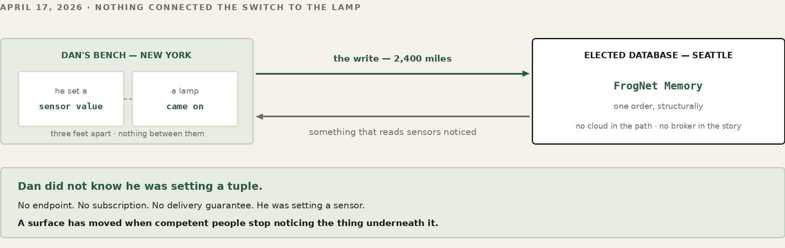
FrogNet imposes no hardware of its own. It is ordinary Linux software with ordinary dependencies, and the same release runs across a deliberately heterogeneous fleet — a five-dollar-an-hour cloud instance, a credit-card ARM board, a laptop two generations past its prime. This part is short on purpose: it sets the hardware envelope before we get to the network, so you can provision from what is already on the shelf and spend your attention on topology instead of a bill of materials. One thing to carry into it: nothing in this part is chosen for the network’s benefit. A living thing takes the body it is given, and this one runs on whatever you have.
WATCH
Hardware — the boxes, the router, and what you already own that will do
A FrogNet node is standard Linux on standard hardware. The whole userland is Python, PHP, and bash riding the usual Linux services — a web server, a database, dnsmasq, WireGuard. There are no exotic dependencies, no custom kernel, no special silicon. If a box runs a modern Linux, it can be a frog. That means the boxes in one pond can be wildly different machines and none of them knows or cares:
The installer makes this painless. The release ships as one frozen world (you will meet it in Part IV), and if the box's processor does not match the architecture the world was built for, the installer rebuilds the parts that care — the Python environment — in place, so the same download stands up on an ARM Pi and an x86 mini alike. You do not keep a separate build per machine. One world, any box.
Mixing them is the normal case, not a special one. In hometown, HomeBase might be an Intel mini because it holds the database and faces the internet; ShopBox a Pi; MomBox whatever was cheap at her end. They are peers regardless of what they are made of. Where capacity actually matters — who should host the shared database, who should anchor a video call — the network measures each box and elects the strongest fit on its own (you will see how in the Discovery part), so putting your beefiest machine in the mesh is enough; you never have to assign it a job. Capacity is a fact the network discovers, not a configuration you maintain.
Now the wires and the radios. Before brokers and discovery and any of the clever software, there is the simplest thing two frogs can do: sit on the same link and find each other. The choices you make here — copper or radio, onboard chip or external antenna, local coordinator or one across the internet — decide the shape and the reach of everything above them. Get the physical layer right and the rest of FrogNet just rides it. This is where the organism meets its environment. Everything after this part is FrogNet discovering what you built here and making the best of it — which is the first thing a living network does and the reason none of it needs a map.
FrogNet does not have its own idea of a network card. It rides whatever interface Linux presents — eth0, wlan0, a second wlan1, a USB adapter, a radio that pretends to be Wi-Fi. The discovery layer looks at the interfaces a node actually has, sorts out which faces the world and which face the local segments, and works with what it finds. That is why the connection method is your choice and not the protocol's. There are three worth making deliberately.
If two nodes can be joined by a cable — directly or through a switch — do it. Wired is the highest-bandwidth, lowest-latency, most reliable bearer FrogNet has, and there is nothing to configure: plug both boxes into the same switch and they share a segment.
WORKED EXAMPLE — ShopBox joins HomeBase by cable
Run an Ethernet line from the house to the garage, both into the same switch. HomeBase is 10.80.80.1; ShopBox came up as 10.84.84.1. Nothing else is required — they share a broadcast domain, so the next discovery walk on either box sees the other as an immediate peer and the two lillypads become one LAN. No broker, no tunnel, no internet.
Every Pi-class box has a Wi-Fi chip, and FrogNet uses it two ways: it can join an existing network as a client, or project its own — stand up an access point so phones, laptops, and other nodes associate directly to it. You never write a hostapd config or a DHCP range for this. A small script, frognet-netstart, configures networking from the hardware state at boot and on every eth0 cable event. Cable in eth0: the identity address (.1) goes on the wired port, wlan0 is freed for upstream use, the access point stops. Cable out: the identity moves to wlan0, hostapd projects the SSID, and dnsmasq hands out addresses. A link watcher fires it the instant you plug or unplug, so the box flips between wired and wireless-AP on its own.
WORKED EXAMPLE — Turning the projected SSID off, after the fact
You set the radio and country at install time; to change your mind later — keep a box wired-only so it never raises a network — you do not reinstall. Set the preference with the v4 setup helper and frognet-netstart honors it on its next run:
frognet_setup_v4_helper.bash ssid_projection_set off # wired-only frognet_setup_v4_helper.bash ssid_projection_set on # project again
That writes /etc/frognet/ssid_projection.conf — the file the installer seeds from --no-ssid-projection — and the same control sits on the node's setup web page (Part IV). This switch governs only the node's own onboard radio.
The chip soldered onto a Pi is fine across a room and tired across a yard. When the distance grows — the workshop across the property, the barn at the far fence — stop asking the onboard chip to do a job it was not built for and put the radio outside the box. Three honest ways, all of which look like an ordinary interface to FrogNet:
eth0 into a purpose-built router or AP with real antennas, and let that box do the radio. One firm requirement: it must run in access-point (bridge) mode, not router or NAT mode. When eth0 has a cable the FrogNet node holds the .1 and is the DHCP authority on that wire; the access point must take its own address from FrogNet's DHCP and bridge its clients onto the segment. A box left in router mode hands out its own addresses and fights the node for the wire. And note the one thing FrogNet cannot do for you: it has no way to set that router's SSID or password. Those live on the router — configure them from its own admin page, per its documentation.wlan1. FrogNet rides it exactly like the onboard wlan0 — only farther.802.11ah band) is rated for roughly two miles in clear air and presents to Linux as a standard Wi-Fi interface, so FrogNet rides it with no translation. For point-to-point reach between buildings, this is the tool. That physical reach is also a security boundary — to touch a node over the air you must be within range of it, the proximity the fabric leans on in Part XII.New transports plug in below the line; nothing above the line moves. That sentence is the whole architecture, and it is why this is a physical-layer decision you make with a tape measure and a power budget, not a protocol decision.
Read that plug-in sentence again, because it is the key concept and it is easy to gloss over. Every other stack out there is defined by its transport — a LoRa mesh is LoRa, a VPN is its tunnel, ham packet is the audio modem carrying it. FrogNet is transport-independent, and more than independent: transports multiplex in the same topology. One machine is the tunnel gateway. Another is the 900 MHz gateway. A third reaches its upstream on eth1. One pond, one flat 10-net, and the fabric routes over whichever path reaches — no node knows or cares which bearer its neighbour used to arrive.
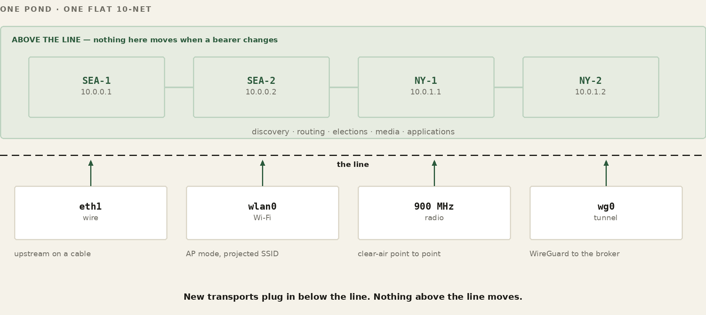
And the transport is not hidden away from the layers above — it feeds them. The transport feeds directly into the processing algorithms, and those feed discovery and routing. The walk proves every candidate over the actual link and measures the round-trip time the bearer actually delivers, so a destination reachable by wire, Wi-Fi, and tunnel at once carries all of its paths ranked — winner installed, fallbacks already behind it (Part V). The routing table is a live map of what every transport is worth right now — which is why adding a bearer, or losing one, is ordinary weather instead of a redesign.
The same property is what makes FrogNet mobile. A device does not care what the transport is, so when it comes in contact with another FrogNet it latches onto whatever medium is available — with no operator intervention in most cases. Dan's trunk-mounted node through Queens is exactly this behavior at traffic speed: the topology changed under the mesh block by block and the walk re-formed it, nobody touching anything. That is the differentiator with a human face: people do not have to be network or RF engineers to get things up and working in the field.
The whole causal chain runs in one direction, and it starts at the bearer:
transport independence
-> discovery & route optimization
-> route resilience & fault tolerance
-> system survivability
Each stage exists because the one before it feeds it. Survivability — the thing every other page of this book keeps demonstrating — is not a feature bolted on at the top; it is the last link of a chain that begins with refusing to care what the wire is.
That combination — any transport, several at once, measured and multiplexed in one topology — is not an evolution of the network you already have. It is the next generation of it. Connectivity is accomplished by transport, not the other way around.
Every node sits somewhere in a small family tree relative to its neighbors. On a link, the nodes it touches directly are its peers. Below it, on segments it routes for, are its children, and their children are grandchildren. Above it, the node it reaches the wider mesh through is its parent. You do not assign these; they are just the directions the network runs in. Here is hometown drawn as the tree it actually forms:
WORKED EXAMPLE — The hometown topology
internet
│ (eth0 uplink)
┌──────┴───────┐
│ HomeBase │ 10.80.80.1 gateway, .1 of its LAN
└──┬────┬───┬──┘
wired/wifi │ │ │ WireGuard tunnel (via broker)
┌────────┘ │ └─────────────┐
┌────┴────┐ ┌────┴─────┐ ┌─────┴────┐
│ ShopBox │ │ sensor Pi│ │ MomBox │ 10.90.90.1
│10.84.84.1 │ AI NUC │ └──────────┘ (across town)
└─────────┘ └──────────┘
platforms, not nodes
Those family words point at one nested idea you meet everywhere in FrogNet: four scopes of reach, each wrapping the last. Self is a single node alone. Lillypad is a node together with everything directly attached to it — its sensors, its platforms, the phones and laptops on its segment. Chorus is a named group of nodes that belong together across the pond, wherever they physically sit — “family,” “ops,” the circle the broker actually meshes over the internet. And Pond is the whole network, every node that belongs to it. A tuple, a service, a name is always published and read at one of these scopes, which is why the same word — “the database,” “a sensor” — resolves correctly whether you mean one box, one lillypad, one group, or the entire mesh.
A gateway is a node with a way out that is not itself FrogNet — a real uplink, a non-10 address on one of its interfaces. HomeBase is the gateway here: its eth0 faces the home router and the internet. A gateway transits its entire downstream subtree, so a frog three segments down still reaches the world through it. A node that is not a gateway — a pure LAN-child — deliberately does not advertise the path back up through its own uplink, so the network never builds a loop out of a child trying to route toward its own parent.
Two things are worth fixing in your head before discovery (Part V) makes sense, because they are how FrogNet coexists with the networking you already know rather than replacing it. The first is name resolution. FrogNet does not run DNS for the mesh — it resolves the mesh's own names through /etc/hosts, the oldest and most reliable resolver there is. Every node keeps its own hosts file; peer names, the floating databasehost.frognet, and each <role>.frognet service name all live there, and the node's local resolver on its .1 serves those same names to the phones and laptops on its lillypad. Resolution of mesh names is local, instant, and always current for what the node can actually reach.
Discovery is what fills that file — non-destructively. Every time the topology changes, the walk recomputes the mesh and writes the result into /etc/hosts, but only its own lines: it replaces the FrogNet-managed entries (the peers and the <role>.frognet names) and leaves everything else in the file untouched. The write is idempotent and safe to repeat on every merge. Discovery owns its block of the hosts file and nothing more, so your own entries — and the system's — are never clobbered.
The second is the default route, and FrogNet leaves it alone on purpose: the default route is how a node gets off the FrogNet and out to the upstream — the internet, or really whatever happens to be out there. Discovery installs routes only for the mesh, the 10/8 plane, as the RTT-ranked winners and fallbacks from the walk; anything that is not a mesh address follows the untouched default route out the uplink, exactly as it would on any Linux box. Keeping it intact is also what keeps ordinary name resolution working: mesh names come from /etc/hosts, and every other name is forwarded to the upstream resolver — which the node can still reach precisely because the default route was never disturbed. So both halves work at once: .frognet and peer names resolve locally from the hosts file, internet names resolve through upstream DNS over the default route, and a node's traffic splits cleanly between the two. FrogNet stands a self-organizing network up beside your normal one; it does not take the normal one over.
A LAN in FrogNet is not declared. It is the set of nodes that can currently reach each other without a relay or tunnel, recomputed from reality every time the reality changes. Nodes that come to share a segment form a LAN; nodes that lose their shared path split; and the same machinery handles both without anyone telling it which is happening.
WORKED EXAMPLE — Forming, then splitting
HomeBase runs alone. You plug ShopBox into the switch; on its next walk HomeBase probes its wire, gets an answer from 10.84.84.1, proves it alive, writes it into the hosts file. ShopBox does the mirror image. Within a walk or two each /etc/hosts carries the other and you have a two-node LAN — nobody configured a thing. Now the garage line falls out of the switch: neither box gets an answer next walk, each recomputes from what it can still see, each becomes a network of one again and keeps running. No error, no hang — a split is just a walk that returned a smaller world. Plug it back in and the next walk re-forms the LAN exactly as before.
The lesson for the operator: your connection choices are your reliability and your reach. A wired core that does not flap, with radio only where you need mobility or distance, gives you a LAN that forms once and stays formed. Lean on a marginal Wi-Fi link and you will watch the LAN form and split every time someone runs the microwave. Choose the physical layer up front, deliberately, and the living network above it has an easy life.
Hardware chosen, network planned, you are ready to lay down the software. A FrogNet node does not begin life on a network — it begins as a tarball, a whole little world sealed up, and an installer whose only job is to unpack that world and tell the box who it is. By the end of this part you will have a running node and you will know every file that holds its configuration. What the installer produces is not a configured member of a network. It is a node that knows only itself, and that is deliberate: what it joins, and how, is not written down anywhere for it to read. It goes looking. Part V is it going looking.
A FrogNet release unpacks to three files side by side: a world tarball, frognet_world.tgz, an installer, frognet_install.sh, and its counterpart frognet_reset.sh, which takes a node back to what the installer found. This chapter is about the first two; you will be glad of the third the first time a build goes wrong. The tarball is the entire userland frozen at a known-good build — daemon, proxy, discovery walk, web stack, bundles, every script. The installer lays that world down and then configures the few things unique to this box, after extraction, so it never overwrites your answers. You run it as root and answer four things:
WORKED EXAMPLE — Installing HomeBase, the first node
sudo bash frognet_install.sh \
--name HomeBase \
--ip 10.80.80.1 \
--broker-host streamingfrog.com \
--broker-port 18257
/etc/fnid, so a rename never confuses the mesh.10.X.Y.1; the installer enforces the last octet. The .1 is the contract: it is the well-known node of its segment, runs the local DNS, and is the address everything else is measured against. Give each node its own /24 so two never claim the same wire.Three more switches matter for the radio from Part III: --no-ssid-projection disables the access-point fallback, --ap-iface picks which Wi-Fi device projects it, and --country sets your regulatory domain.
WATCH
Installation, Part 1 — the installer run end to end, prompts and all
Six phases. Knowing them tells you where to look when something goes wrong.
frognet_world.tgz; if the box's architecture differs from the build's, rebuilds the Python venv in place (this is the platform independence from Part II made real).When the box comes back up it is already a network — its own DNS, web server, database, daemon, and proxy — serving a dashboard and holding data with nothing else plugged in anywhere.
When a node misbehaves you have honest signals before you start reading code. FrogNet_monitor (Part VI) is the first stop: it shows every node the mesh can see and, per peer, the live numbers — echo, round-trip time, cache-hit rate, bytes saved — so a node gone quiet or running a cold cache stands out at a glance. Underneath it, two probes mean different things and must not be confused: the echo answers only “who are you” — identity — and a node can echo perfectly while carrying no traffic; the liveness check is the bidirectional ping-pong the discovery walk runs, and a candidate counts as reachable only when its daemon answers it. “The echo works” is not “the node is healthy.” And when you do go to the logs, read the whole journal rather than one unit — the proxy, the daemon, the tunnel daemon, and discovery each log their own half of the story, and a fault in one usually surfaces as a symptom in another.
Not everything has to be a command. Every node serves a setup web page that drives the same operations the command line does, through a small helper (frognet_setup_v4_helper.bash) behind it. This is the right tool for a non-technical operator and for the jobs you would rather click than type. From that page you can:
tunnel.conf (host, port, pond, password, choruses) without editing a file, then read back the current broker state.Everything the page does, the helper does on the command line too, so you can script any of it. The page is just the friendly face on the same machinery.
FrogNet keeps its configuration in a handful of plain files under /etc/frognet/, plus the node's identity. You will rarely edit most of them by hand — the installer, the helper, and frognet-netstart write them — but for a reference, here is what holds what, and whether it is yours to touch:
FILE HOLDS YOU EDIT? /etc/fnid node GUID (permanent ID) no — set once /etc/frognet/tunnel.conf broker URL, pond, choruses, via helper/page /etc/frognet/tunnel.conf GROUP_TOKEN (membership) no — from redeem /etc/frognet/ssid_projection.conf SSID on/off, wifi country via helper/page /etc/frognet/gateways.conf gateway / uplink facts rarely, by hand /etc/hostapd/hostapd.conf.template AP template for netstart no — managed /etc/dnsmasq.d/*.conf DHCP + the .1 identity range no — managed
The two you will actually touch are tunnel.conf and ssid_projection.conf, and both have friendlier front ends — the helper and the setup page. The identity in /etc/fnid is set once at install and is the thing that lets a node be renamed, re-addressed, or re-homed without the mesh losing track of it; leave it alone. The rest are written by the machinery from the facts of the box and are listed here so that when you see them, you know what they are — not because you need to edit them.
You have a node installed and configured. Before you trust its shape on a running mesh — before you cut the cable, mount the antenna, or hand a box to someone in the field — you can watch the whole thing converge on your laptop. FrogNet's simulator runs the real discovery, routing, and election code over a network you describe, so what it says your pond will do is what your pond will do. Part XIII covers how that simulator proves changes to FrogNet itself; here we use it for the everyday thing — checking your own network before you rely on it.
Describe your site as a topology — the nodes, the /24 each one serves, the segments they share, and the tunnels between them — and run it. The simulator converges every node with the actual algorithm and hands you each node's exact result: the routes it installed, how many cycles it took, and whether every node can reach every other. If your real node came up with a route you did not expect, model the same shape here and the simulator shows you what it should have been.
WORKED EXAMPLE — A two-node site, modelled and converged
def topo_my_site():
t = Topology("my site: two nodes on a shared peering LAN")
t.add(FrogNode("gate")
.add_iface("eth0", "10.10.10.1/24") # the /24 this node serves
.add_iface("eth1", "10.10.99.1/24")) # the shared peering segment
t.add(FrogNode("shed")
.add_iface("eth0", "10.10.20.1/24")
.add_iface("eth1", "10.10.99.2/24"))
t.link(("gate", "eth1"), ("shed", "eth1"))
return t
# gate learns: 10.10.20.0/24 via 10.10.20.1 dev eth1
# every node reaches every other; converges in a couple of cycles
The same builder lets you try a network you have not built yet. Chain three nodes, ring five, bridge two LANs with a tunnel, hang a dozen radios off one gateway — write the shape, run it, and see whether it converges cleanly and everyone can reach everyone. It is the cheap way to answer “will this layout work?” before you spend money on hardware or a day on cable. More than twenty worked shapes already ship with the simulator — pairs, chains, stars, rings, ponds, hub-and-spoke, mixed bearers, multi-gateway — so start from the one nearest yours and change it.
One rule the simulator teaches fast: keep gateways distributed and neighborhoods sparse. The single shape that does not scale is one node bridging everything — a star hub — because that hub processes every node on every cycle and becomes the bottleneck. Convergence itself is cheap: a small, constant number of cycles for any connected shape, however wide.
By default the simulator models the wire in memory — no privileges, runs anywhere, done in seconds. When you want the stronger check, the same shape runs against a real kernel: the harness builds one Linux network namespace per node, wires them with veth pairs and real WireGuard interfaces addressed exactly as your topology says, and runs the stock route code — the real ip and wg — inside each namespace. That is your install's exact behaviour on a real kernel, proven on one box, without ever touching the running mesh. A dry-run mode goes further and simply records the ip and wg commands it would run, so you can read the provisioning your node will perform before it performs it.
Now the good part. A node knows itself, its LAN, and its broker. How does a pile of boxes become one coherent network — no map, no administrator, no plan? It discovers itself. And the way it does that is the quietly clever bit: FrogNet uses its own web stack to do it. Discovery is HTTP, riding the same compressed proxy your applications ride. This is the part where the network is alive in the plainest sense. Nothing here is told anything. A node looks, measures what it finds, and settles into a shape that nobody designed — and when the ground moves under it, it looks again. Everything in the rest of the book depends on that happening without anyone being asked.
WATCH
Installation, Part 2 — first boot, run_merge, and routes appearing live
Two ordinary web endpoints do almost all the work. The echo answers “who are you?” — a node reporting its name, address, and the shape of its interfaces. getHosts answers “who do you know?” — returning the hosts that node has already discovered. Both are plain HTTP, both compressed by the same engine as everything else. Discovery is FrogNet making HTTP calls to FrogNet.
WORKED EXAMPLE — What getHosts hands back
GET http://10.80.80.1/getHosts.php
[
{ "ip": "10.80.80.1", "name": "HomeBase", "echo": "..." },
{ "ip": "10.84.84.1", "name": "ShopBox", "echo": "..." },
{ "ip": "10.90.90.1", "name": "MomBox", "echo": "..." }
]
That pays off twice. Discovery inherits every property of the transport — the compression, the parallelism, the transport-agnosticism — so the mesh finds itself over a 4800-baud radio link as readily as over Ethernet. And there is no second networking stack to maintain. The network discovers itself with the same tool it serves applications with.
What makes “we eat our own cooking” literally true is a pair of services that come up with the node and sit underneath all of its HTTP: the proxy and the daemon. The proxy takes over port 80. Every HTTP request crossing the node's interface — an application's, a browser's, and discovery's own echo and getHosts calls — arrives at the proxy first; nothing speaks HTTP on a FrogNet node without passing through it. That is why discovery gets the compression and the transport for free: it is not special-cased, it is simply more port-80 traffic, handled the same way as everything else.
The first thing the proxy does with a request is look at where it is bound, because not everything gets the FrogNet treatment. A request addressed to a FrogNet address — the 10-net — enters the semantic path: a candidate for compression and the established-socket transport. A request addressed anywhere else — the public internet, a printer on the house LAN, anything outside 10/8 — is simply passed through, forwarded to the real upstream untouched. The proxy is in the path for everything, but it does semantic work only for FrogNet's own traffic; the rest it gets out of the way of.
For a FrogNet-bound request, the proxy hands it to the daemon — the worker pool that does the actual semantic work: learning templates, running the UnREST handlers, collapsing an exchange to SAME, DIFF, or FULL. It reaches the daemon over a dedicated socket — a loopback connection on a fixed port, held open for fast, direct hand-off — and the daemon hands the result back. The proxy is the front door; the daemon is the engine room. The daemon considers the request and, for content the node itself holds, calls the local Apache and its database to produce the answer; for a peer's content, it carries the exchange over the wire instead (next). The first time the daemon meets a given shape it holds no template for it, so it learns one on the spot and sends the whole structure — a FULL; from then on every exchange of that shape collapses to a SAME or a DIFF against it (Part IX details the learning). All of this is the nominal path — ordinary content, served or fetched and compressed. UnREST Unleashed changes what happens at the handler — a live stream, a game — but the shape of it here, the intercept, the 10-net decision, and the hand-off to the daemon, stays the same.
For a peer, the wire looks nothing like HTTP, and the two are kept strictly apart. HTTP is the protocol the proxy intercepts on port 80, locally. FNWP-1 — the FrogNet Wire Protocol — is what actually crosses between nodes. When the proxy forwards an exchange to another node it does not open a fresh HTTP connection per request; it carries the exchange over an established socket held open to that peer's proxy — a long-lived, keep-alive connection reused across many requests — and frames it in FNWP-1: length-prefixed frames with a small set of opcodes (a full request or a repeat; a response that is SAME, a DIFF, or a raw body; a HELLO to open the channel). Those opcodes are how the SAME/DIFF/FULL compression actually rides the wire. The application spoke ordinary HTTP into port 80; what left the node was FNWP-1 on a standing socket; the peer's proxy turned it back into HTTP on the way in. Neither application ever saw the wire. (FNWP-1 itself — its framing, how conversations fan in and out, and how they interleave on one socket — gets its own treatment in Part IX.)
Both come up as part of bringing the node onto the network, wired to what discovery learns — the proxy takes port 80 on every interface discovery deems eligible, so the takeover follows the live shape of the mesh. This is the concrete machinery under two claims made elsewhere in this book: that compression is infrastructure that needs no application changes (Part I), and that discovery rides the very same path applications do. Own port 80, and every HTTP exchange on the node is yours to compress, route, and reconstruct — invisibly.
WATCH
Discovery Deep Dive — the walk, on a live mesh
A node builds its picture in waves, outward from itself. Wave one is everything it can touch immediately — the addresses on its own wire, its peers. Wave two is their children: it asks each peer, by getHosts, who it can reach, and reaches for those. Wave three is the grandchildren. The walk is bounded to a small depth, because past a few hops the relaying is someone else's job.
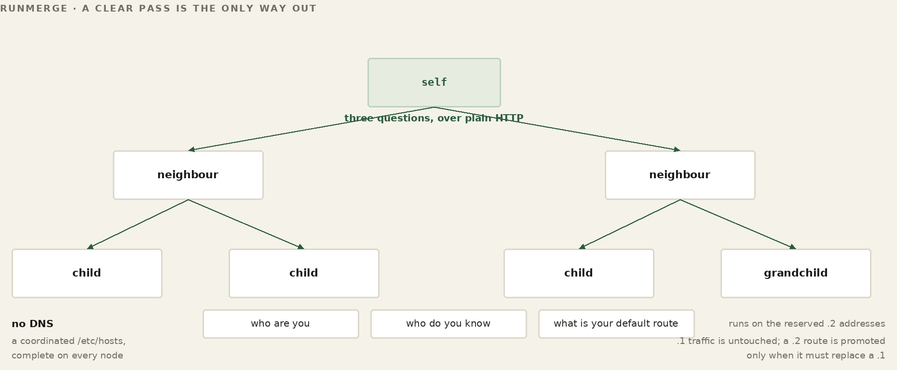
WORKED EXAMPLE — HomeBase walks hometown
wave 1 probe my own wire -> ShopBox 10.84.84.1 (peer) ✓ alive
wave 2 getHosts(ShopBox) -> ShopPi 10.84.84.50 (child of ShopBox)
wave 3 getHosts(ShopPi) -> (leaf) stop
write /etc/hosts, recompute databasehost, done
Each candidate is proved before it is trusted — a light bidirectional liveness probe, not an application health check, and a candidate counts only if its daemon answers. A node describes its own segment membership in its echo rather than letting anyone infer it from an address, so the picture is self-reported, never guessed. As the walk crosses from a peer to that peer's children it remembers the path it came in on, so the return route for everything below a peer is known, not assumed. A gateway, walked into, hands back its whole downstream subtree; a LAN-child withholds the path back up toward its parent. Those two rules — gateways transit down, children do not advertise up — keep the walk from folding into a loop.
A node's identity and all of its real traffic ride its .1 address — that is the wire everyone's live connections are on. So discovery never probes on .1. For each destination it wants to test, it installs a tiny, temporary route to a .2 address — a unique .2 per destination, so parallel probes never collide — sends its liveness probe over that, and tears the .2 route down when the walk is done. The doctrine, written into the discovery code itself, is four words: .2 proves, .1 carries. Probing on a separate address means a walk can run as often as it likes without perturbing a video call or a database write already in flight on .1, and it is why the host list quietly drops any .2 it sees — those are probe artifacts, not real hosts.
The walk does more than build a name list. As it proves each destination it measures the round-trip time to it — and a destination can be reachable by more than one path: directly over the wire, over Wi-Fi, by relay through a peer. The first time the node has no route to a destination, the fastest proven path wins and becomes the preferred route, and the slower paths are installed behind it as ranked fallbacks.
What happens on every walk after that is the part people expect to be different, and getting it wrong is how a mesh tears itself apart. The node does not re-rank. If the destination already has a winning route, and the far end answers over that route, the walk leaves it alone — no matter what it just measured. A path that turns out to be four times faster does not take over. The rule is one line long and it is absolute: if there is already a path and that path is healthy, leave it alone. Candidates matter only when there is no route yet, or the one you have is dead.
WORKED EXAMPLE — A faster path appears, and is ignored
walk 1 no route to 10.60.60.0/24
wired 18 ms -> WINNER
Wi-Fi 31 ms -> fallback
walk 7 a new, better link exists:
mesh 4 ms measured, logged, DISCARDED
wired 18 ms still answers -> HELD
PROMOTE_HOLD reason=incumbent_dot1_alive_leave_the_route_alone
This looks like leaving performance on the table, and it is — deliberately. The alternative is worse than slow. A route that re-ranks on every walk moves whenever two paths measure close together, and every move tears down live traffic: an open database connection, a video call, a transfer in flight. On a real mesh, where a Wi-Fi hop’s round-trip wanders by tens of milliseconds from one minute to the next, pure ranking does not settle. It oscillates, and it oscillates hardest exactly when two paths are equally good — the case where the choice matters least. An earlier version of the rule allowed a challenger to win if it was at least fifty per cent faster. It was replaced by the flat prohibition, because the correct number of times to disturb a working path is zero.
A route stops being held the moment it stops working — and the check is specific: the far end must answer over its own path, not over some other route that happens to reach it. The instant it does not, the hold releases and the ranked candidates matter again. So the ranking is not wasted work; it is the answer, prepared in advance, to a question that has not been asked yet.
The same ordering makes failure cheap. If the node behind a winning route drops off, there is nothing to recompute in the moment: you remove the first route, and the next-best path by RTT — already sitting in the table as a fallback — takes over instantly. The expensive work, finding the paths and ranking them, was done at walk time; the failover is a single deletion — and the fallback is trustworthy precisely because nothing has been quietly reshuffling it in the meantime.
WORKED EXAMPLE — Two paths to ShopBox, ranked by RTT
dest 10.84.84.0/24 — the walk found two ways there: via wire rtt 2 ms -> WINNER (preferred route) via Wi-Fi rtt 14 ms -> fallback (installed behind it) kernel uses the winner. if the wired link drops: remove the winning route -> the 14 ms fallback is already there and takes over instantly — no recompute, no outage.
A walk that follows every neighbour’s neighbours will eventually be offered a route that returns through the node that asked. Installing it costs more than a wasted hop: it is a route to yourself wearing someone else’s address, and the traffic it attracts never arrives. So every candidate is tested before it is installed, and the test runs on the discovery plane rather than the production one.
The prober installs a temporary route to the destination’s .2 and asks it to reflect. The request carries two things — the origin’s address, and a counter that each forwarding hop increments. A hop declares a loop when it recognises the origin as one of its own addresses and the counter has moved. Both halves are required.
origin 10.160.160.1, counter c incremented per hop c == 0 at emission the originator must not flag itself c == 10 through strangers no address matches; nobody objects c > 0 and origin is mine -> LOOP, candidate dropped c > 32 (default hop cap) -> LOOP among others, dropped
The counter alone says nothing. A probe that has crossed ten honest foreign nodes carries ten, and none of them match the origin, so none of them object. What the counter rules out is the originator objecting to its own emission, where the count is still zero. The hop cap catches what the first rule cannot see — a loop among other nodes that never comes back through us.
.2 is probed for a different reason than the one people assume. It is not that .2 reveals loops; it is that .1 carries live traffic, and a probe sent there rides the production plane and can block for its full budget behind a saturated database host. The probe route is torn down in a finally, so nothing outlives the question.
The reflect plane is not forwarded across a segment relay, so a node behind one fails reflect while its production .1 is perfectly reachable. For that case there is a second and independent detector on :9009: the far daemon examines the return address in the HELLO, and if it is one of its own, answers with an explicit loop frame. It carries no counter, because it does not need one.
A route that fails is never installed. It is dropped when candidates are selected, remembered for the rest of that merge so it is not re-offered, and dropped again at promotion if it arrives by another path. Nothing is remembered past the merge — a reassigned address gets a fresh verdict on the next pass.
WORKED EXAMPLE — Two seams worth printing
When the local-address lookup swallowed its own failure, the local-address test returned loopback only and loop detection went blind — silently, and precisely when the machine was already unwell. And when the daemon’s loop frame failed to send and the error was discarded, the prober saw silence rather than a verdict, so the looping candidate stayed eligible and was installed. Both are the same lesson in different clothes: a detector that fails quietly is worse than no detector, because the walk trusts it.
FOR THE GUILD
The walk descends two levels: a node's children and their children. A box behind a box behind a box is not reached, and that is a constant in one file rather than anything the design requires -- which makes it the sort of limit that stays until somebody with a deep enough network cares. If that is you, the guild is interested.
Two doors. To talk about it — this book lives in a public repository and its Discussions are open at github.com/FawcettJohnW/FrogNet-Living-Network/discussions; no licence is needed to argue there. To build on it, the licence page is fawcettinnovations.com/license — ask, and if you want to work on something, say so and say which. The questions are optional and the licence does not depend on them.
Once a node knows who is out there, it must agree with everyone else about which node holds each service the mesh needs in exactly one place. This is election, deterministic by design: for a given service, every node scores the same advertised facts with the same rule, so they all land on the same winner with no vote, no messages, no coordinator. A node advertises what it can do — compute, memory, storage throughput, codec support — and the math does the rest. This is where the platform independence of Part II cashes out: drop a stronger box into the mesh and it simply wins the roles that want strength, because the network measured it.
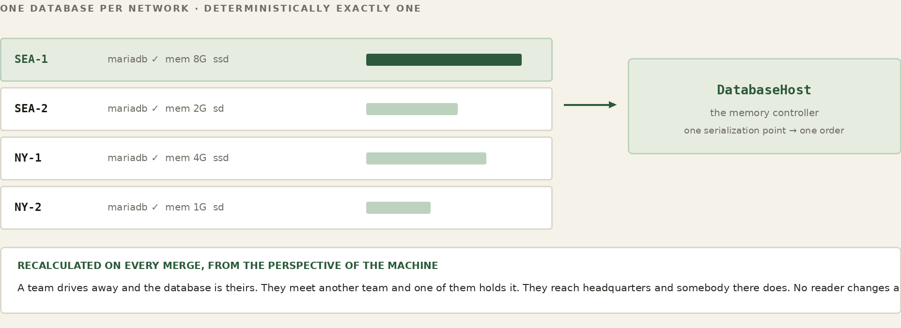
And there is not one election — there are as many as there are services. Host selection is itself one of UnREST's virtual functions (you will meet the handler in Part X): each service implements its own selector, so different services choose by different rules. The database host selects the most-capable box that is actually running MySQL — it is memory-bound, so the most RAM wins, with the highest address only as a tiebreak (Part VI). A media host, which has to sit on the same wire as the people it serves, selects by locality and capability among directly-attached neighbors. A board-game host selects by whatever a game needs. Every node runs a given service's selector and reaches the same answer for that service — deterministic per service — but no two services are obliged to pick the same way. Adding a new kind of service host is implementing one virtual function, not editing a central election.
Election is scoped. A service the whole mesh shares is chosen across the pond. A service that must stay on the local wire — live media is the example that bites you if you get it wrong — is elected only among directly-attached neighbors, so it can never land on a node you reach only by relaying. A small stability margin keeps a marginal challenger from constantly unseating a healthy incumbent. One elected service is special enough to get its own part.
Every FrogNet has a beating heart it never planned for: a single floating database the whole mesh reads and writes, reachable at one name no matter which physical box holds it this second. Understanding how that name moves — and why moving it is safe — is the key to understanding how FrogNet survives being torn in half. And this is where a living network turns out to have memory. The election in this part is what makes a shared value possible at all: something has to hold it, the something has to be replaceable without anybody noticing, and no application may ever need to know which box it was. Get that and FrogNet Memory follows; miss it and there is nothing to build a memory on.
FOR THE GUILD
An election is the service provider’s responsibility, and that is the invitation. FrogNet supplies the generic machinery — a role is live when it has both a candidate tuple in the transient and a registered handler, and the handler decides what “best” means. Two jobs follow. The framework has open questions: what a score should be made of so it does not move under load, how an incumbent should be held, what a merge should do. And every handler scores its own candidates, so a better score for an existing role is a real contribution — while writing the election for a new service is how a new role gets onto the fabric at all. If you are bringing a service, you are bringing its election.
Two doors. To talk about it — this book lives in a public repository and its Discussions are open at github.com/FawcettJohnW/FrogNet-Living-Network/discussions; no licence is needed to argue there. To build on it, the licence page is fawcettinnovations.com/license — ask, and if you want to work on something, say so and say which. The questions are optional and the licence does not depend on them.
WATCH
Setting databasehost.frognet — the election explained, and why there is no continuity
The shared scratchpad lives at one address: databasehost.frognet. An application never knows which machine that is — it asks for the name, the local hosts file resolves it, the query goes wherever the name points. The rule for where it points is the election from Part V, with the database's own criteria: among the nodes actually running a database, the most capable wins. A database host is memory-bound — MySQL running is the hard gate, and past it the box with the most RAM, then the faster disk, takes the role; the highest address only breaks a tie. Because every node scores the same measured, static capability with the same rule, they all compute the same winner and agree without anyone announcing it.
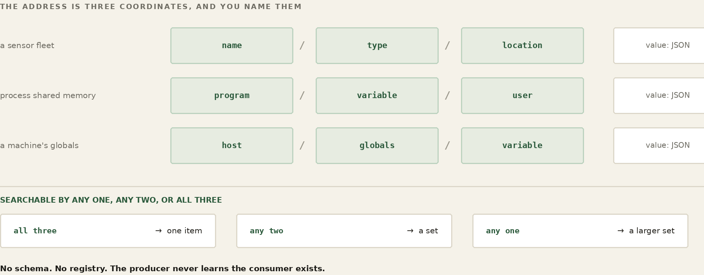
WORKED EXAMPLE — Who holds the database in hometown
candidates running mysql: HomeBase 10.80.80.1 Intel mini, 16 GB RAM, NVMe score 41 ShopBox 10.84.84.1 Pi, 4 GB RAM, SD card score 9 most capable wins -> databasehost.frognet = 10.80.80.1 (HomeBase) every node's /etc/hosts now carries: 10.80.80.1 databasehost.frognet
And here is what makes it living: that calculation is redone every time the topology changes. The merge — the same machinery that runs the walk — recalculates the database host and rewrites it into every node's hosts file on every pass. No TTL to expire, no nameserver to consult, no propagation delay. The instant the reachable set changes, the answer changes with it, on every box.
api.php is how FrogNet Memory is implemented and reached. One endpoint, and the tuple definitions passed through it are the memory: what an entity is, what an action does, how a value is addressed. There is no other door — every node, every role, every handler in this book reads and writes the shared world through this one call.
An application does not open a special connection or speak a special protocol to use it. It makes an ordinary HTTP call, and the data rides on the URL. FrogNet layers a small, custom query vocabulary onto one plain endpoint — api.php — where one parameter names the entity (the table, the kind of tuple), another names the action (read these values, write this row), and the rest carry the fields themselves:
read GET http://databasehost.frognet/api.php
?entity=sensors&action=values&SensorName=SD:barn/temp
write POST http://databasehost.frognet/api.php
?entity=sensor_data&action=upsert_by_name (row in body)
It helps to see what a tuple actually is here, because it is humbler than the word suggests: a named row with three parts. A name that is its key — a sensor's full name, like SD:barn/temp; a type that says which service or kind it belongs to; and a value, a small blob of JSON — the reading itself, a timestamp, whatever the writer put there. You write a tuple by upserting it by name: post the row and it lands, created the first time and overwritten after. You read by pattern: ask for every tuple of a given type, or the one with a given name, and the matching rows come back. That is the whole data model — write by name, read by pattern — and the same store holds a barn thermometer's readings and the network's own coordination tuples side by side.
WORKED EXAMPLE — A barn sensor writes; the monitor reads
the barn-temp sensor platform, every few seconds:
POST api.php?entity=sensor_data&action=upsert_by_name
{ SensorName:"SD:barn/temp", SensorType:"sensors",
value:54.6, ts:1719... } -> one row, overwritten
a reader, on another box, pulls it back by name:
GET api.php?entity=sensors&action=values&SensorName=SD:barn/temp
(all to databasehost.frognet, through the proxy on port 80)
That reader is real. FrogNet_monitor, the network's info center, is a terminal dashboard that does exactly this: it lists every node, shows each one's live telemetry — echo, round-trip time, cache hit rate, bytes saved — and lets you drill into a node to see its sensors and open a single reading in full. It writes nothing and runs nowhere special; it is just another reader of the shared store, talking to databasehost.frognet through the proxy like everyone else. A sensor platform pumps readings in; the monitor, a dashboard, an AI each pull them out by name. Nobody addresses anybody — they meet in the shared memory.
And this is the seam where UnREST picks up: those URL parameters, merged with any fields in the body, are exactly the structure it learns once and then never re-sends. The data goes in on the URL by name; UnREST makes sure only the part that changed ever crosses the wire.
A tuple holds one value. Not the newest of several, not a version you can walk back — one. Whatever was written there last is what the next read returns, and the write before it is gone. There is no history, no log, no revision. That is what the word transient is doing in the name.
The store performs no consistency checking, and that is a decision rather than an omission. Agreeing on a value across a wide-area network with links that come and go is not impossible, but it is genuinely hard, and there is no case in this data where it buys anything. Sensor readings, node telemetry, presence, the live state of a call — all of it is current-value data, where the newest sample is the only one that matters and one missed sample among thousands means nothing. So the database does not arbitrate. It stores what it was handed and serves what it holds.
Which leaves the consumer to judge age, and the store hands it what it needs: every read comes back in an envelope carrying the time of the last write. If your application cares whether a reading is four seconds old or four hours old, that is where you look, and the rule you apply is yours to write. FrogNet does not decide how stale is too stale, because the answer is not the same for a soil probe and a video call.
FOR THE GUILD
The decision not to check consistency is a decision, and it is the kind that deserves an argument rather than agreement. It is right for readings and telemetry and presence -- data that is time-ordered, idempotent, and forgiving of a lost sample. It is not obviously right for everything somebody will eventually want to put here, and the honest position is that we have not met the case that breaks it yet. Somebody will. If you have worked on distributed state and you think the reasoning above is too comfortable, we would rather hear it from you now than discover it in a deployment. That is a guild job: not building a feature, but pressing on a decision until it either holds or names the case where it does not.
Two doors. To talk about it — this book lives in a public repository and its Discussions are open at github.com/FawcettJohnW/FrogNet-Living-Network/discussions; no licence is needed to argue there. To build on it, the licence page is fawcettinnovations.com/license — ask, and if you want to work on something, say so and say which. The questions are optional and the licence does not depend on them.
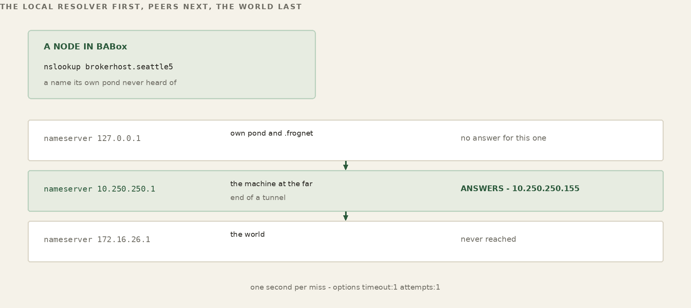
Everything above is one pond. The hosts file on a node carries what that pond converged on, so a name from another pond is not in it — ask a node in one city for a host in another and it has never heard of it. The tunnel carries the traffic; it does not carry the names.
So each node lists, as a nameserver, the machine at the far end of every tunnel it holds. Each pond’s primary knows its own pond’s names, and a query that the local resolver cannot answer falls through to a machine that can. The order is what makes it cheap: the local resolver first, so own-pond and .frognet names never leave the box, peers next, and the WAN last.
The list is not configured, and it is not read off the routing table. It comes from the walk, which is the one place the answer exists without ambiguity: every peer the merge records carries the device it answered on and the name it gave for itself. That is precisely the join — which machine is at the end of which tunnel — and it is written into /etc/resolv.conf at the end of the same merge pass that learned it.
The kernel cannot answer it. A FrogNet tunnel sets AllowedIPs = 10.0.0.0/8 without exception, which says “all FrogNet traffic goes through here” and names no pond at all. And an interface carries several /24 routes of which most are transit — ponds reachable through that tunnel rather than the pond at the end of it — so a node with three tunnels sees the same three subnets on all three interfaces. Both were measured on live nodes: the first derivation produced 10.0.0.1, which is nobody, and the second produced one nameserver for three tunnels.
One thing on the far side has to be willing to answer. Debian ships dnsmasq with --local-service, which replies only to queries whose source address sits on a subnet one of its own interfaces owns. A WireGuard interface carries a narrow address, so every cross-pond querier reads as non-local and is refused. dnsmasq says so exactly once — ignoring query from non-local network — and then goes quiet, which is the expensive part: one line in a journal and silent failure on the lookups the fabric depends on.
So a FrogNet node disables it, by configuration rather than by editing the distro’s own service file. That distinction matters more than it looks: the file that carries the flag lives under /usr/share, so a patched copy is restored by the next package upgrade and the failure returns as one journal line and then silence. Configuration survives the upgrade.
It is not replaced with a list of interfaces to listen on, either. Naming interfaces is a written-down answer to a question whose answer moves — a node changes subnet, a tunnel comes up — and the list is then stale with nothing reporting that it is. What the node gives up is a protection against being an open resolver, which matters on a box with a public address and is moot on one without. The trade is made deliberately, because silent DNS failure across the fabric costs more, more often, than a risk on a node that should not have had a public interface in the first place.
There is a second name, and until now this book has mentioned it only in the glossary. It is worth a section of its own, because it answers a question the floating database raises and then quietly steps over: if the database host is elected, and the election reads the facts nodes publish about themselves, then where are those facts kept? They cannot live on the elected host. You would be reading the candidates' resumes off the desk of the candidate you are about to choose.
So there are two names and two planes. databasehost.frognet is the one your applications use: the elected, floating data host, the shared working memory, the thing that moves when the network changes shape. databasehost_control.frognet is the coordination plane. It holds the capability records the election reads, and nothing else. No application ever addresses it, nothing you build should touch it, and it holds no data of yours.
The difference that matters is not what they hold. It is how each is chosen. The data host is elected on capability — measured, comparative, and therefore only knowable after you have read everyone's numbers. The control host is chosen arithmetically: it is simply the highest gateway address in the network — the highest address ending in .1, excluding the reserved 10.253 transit and 10.254 chorus ranges. No scoring, no candidates, no capability, no reading of anything. The filter is narrower than it sounds: the code selects on the fourth octet being .1 and on the address not being reserved. It does not separately verify that the box behind that .1 is a real gateway, and in a well-formed pond it does not need to, because .1 is always FrogNetHost in any subnet.
That is deliberate, and it is the resolution of the circularity. A rule that needs no information can be applied before any information has been gathered. Every node that can see the same set of machines computes the same control host, instantly, with no election and no messages — which means every node knows where to publish its capability, and where to read everyone else's, before any capability has been published at all. The coordination plane bootstraps itself out of arithmetic, and the data plane is elected on top of it.
WORKED EXAMPLE — The order of operations in a single merge
1 build the host block from what the walk proved
2 FLOOR databasehost.frognet = highest .1
(a guarantee that the name always resolves,
even before anyone has published anything)
3 CONTROL databasehost_control.frognet = highest .1
arithmetic, capability-free, written FIRST
4 publish every role handler writes its own capability
to BOTH planes - control is authoritative,
data is a mirror for ordinary readers
5 ELECT read the capability records FROM control,
score them, repoint databasehost.frognet
Step two is the part people trip over. Before any capability exists — a cold pond, first boot, nobody has published anything — the data name is floored to the same arithmetic answer as the control name, so a node that comes up alone is its own database host and everything works immediately. The floor is not the election; it is the guarantee that the name is never unresolvable while the election is still deciding.
A node writes its capability to both planes, every time. Control is the authoritative copy — the one the election is required to read. The copy on the data host is a mirror, there so that ordinary tools, dashboards and anything else curious about the network can see what the mesh knows without reaching into the coordination plane.
It is worth saying plainly why the election is forbidden to read the mirror, because the failure it prevents is subtle. If the election read capability from the elected host, then the moment that host changed, the pool of candidates it had been reading from would change with it — and the next election would be scored off a different set of facts than the last one, for no reason connected to any node's actual capability. The winner would depend on the previous winner. Reading from a plane whose location is fixed by arithmetic breaks that loop.
One more rule, and it is the reason the halves of a torn network can rejoin without arguing. The election does not decide the moment it has some capability records. It waits until control holds a fresh record for every live machine it can see. Until then the name stays pinned to the control host — always valid, always resolvable — and the roles are left exactly as they are.
Without that, the first node to finish merging would decide over a partial pool and the second would decide over a fuller one, and the two would land on different winners. Both would be following the rule correctly. Waiting for a complete pool is what turns “every node computes the same answer” from a hope into a property. A node on its own is trivially complete — it is the only machine, and it has published its own capability — so a lone box elects itself for every role and never waits for anybody.
Tear the network in half — the link between the house and the garage drops. The mesh splits into two islands, the merge fires on each side, and each re-elects its own most-capable database node.
And when the host changes, the memory changes with it. This is worth stating flatly, because it is the part people assume must be more complicated than it is. FrogNet Memory is not migrated, replicated to the new host, or reconciled against the old one. It lives on whichever machine currently holds the role, and when the role moves, what is in memory is whatever is on the new machine.
Write, then read. That is the whole detection mechanism, and it needs no coordinator, no notification service and nobody to subscribe to. A process keeps one entry of its own — its own name, its own timestamp — writes it, and reads it back on its next cycle. If what comes back is what it wrote, it is reading the same memory it wrote to. If the entry is missing, or carries a timestamp older than the one it last wrote, then it is not: the memory changed underneath it.
There is no announcement, because there is nobody who could reliably make one — the machine that would have announced it may be the machine that left. Each process finds out for itself, on its own schedule, by the same mechanism it already uses for everything else. A process that has just started has nothing to compare against and correctly detects nothing, because it has no stale state to worry about.
Nor is write-then-read the only way. A generation counter maintained by the store itself moves on every change from any writer; a name that resolves somewhere new is a change you can see without asking anyone. Different processes care about different things and can use whichever suits them. What they share is that detection is local — nothing depends on being told.
And detection is where FrogNet’s involvement ends. It fires the callbacks and stops. What to do next is entirely the application’s, because only the application knows what its own state means — whether a half-finished thing should be abandoned or resumed, whether a cache should be dropped or rebuilt, whether anything is wrong at all. FrogNet does not guess. It tells you the ground moved, and you decide.
That sounds austere and it is the same instinct as everywhere else in this book. Automatic reconciliation would mean the platform inventing an answer about data it does not understand — and an invented answer that looks correct is the failure this system is built to avoid.
WORKED EXAMPLE — The database host follows the split
BEFORE databasehost.frognet = 10.80.80.1 (HomeBase, most RAM)
house<->garage link drops — two islands:
island A { HomeBase 10.80.80.1 }
most capable here -> databasehost.frognet = HomeBase
island B { ShopBox 10.84.84.1 }
most capable here -> databasehost.frognet = ShopBox
link returns — one island again:
most capable overall -> databasehost.frognet = HomeBase
Each island has its own database host, its own complete picture for the frogs it can still reach. Neither side pauses or errors; applications on both keep asking for the same name and keep getting an answer. When the halves rejoin, the merge fires again and the most capable among all of them wins. And — the decision the whole thing rests on — there is no reconciliation. Nobody replays a log, merges two histories, or negotiates whose reading wins. The old data ages out; new writes land on the new host because that is where the name now points.
You can only get away with that because of what FrogNet Memory is: it holds current state, not history. That data is time-ordered (newest is what matters), idempotent (sending it twice is harmless), and forgiving (one missed sample among thousands means nothing). For data shaped like that, a thirty-second consensus round over a flaky link is not just expensive — it is wrong, because the data it so carefully agrees on is already stale. So FrogNet does not agree. It keeps the current truth available, wherever the network happens to be standing.
One consequence is worth stating plainly, because it will bite anyone who is not expecting it. When the name moves, the memory moves with it. Split off and become your own database host and you are reading the store on that box — which holds whatever was last written there, and that may be what you wrote before you ever joined the larger pond, hours or days ago. Join a wider network and your writes land on its host; come back out again and you are reading your own old store once more. The values do not travel with you. So the rule for a node whose world has just changed shape is simple: write before you read. Assert what you know to be true now, and stop trusting what the store told you a moment before the topology moved underneath it.
This is the Part I promise — keep working when the internet doesn't — reduced to its mechanism. The storm takes the towers and the pond simply splits into the islands that can still see each other, each electing its own heart and carrying on; when the line comes back the islands merge and the name resolves wider again. The box that handles the family photos in good weather is the box that coordinates the household in bad, because to FrogNet the outage was never an error to recover from — only a smaller world for a while.
Everything so far stands on one local network, complete on its own. This part is how a pond reaches past the LAN: nodes that cannot see each other directly, and whole sites in different cities, joined over the internet. Two pieces do it — a broker that introduces frogs that cannot find each other, and the encrypted tunnels it hands out to carry the 10-net between them. Both tunnels terminate at the broker, which forwards between them, so it is the transit point as well as the introducer. Neither disturbs anything above: a tunnelled peer looks like just another interface, and the living network on top behaves exactly as it did on one wire. A pond that reaches another pond is the same organism, larger. That is worth saying plainly because the mechanism looks like plumbing and is not: tunnels and brokers are how a living network grows past the room it was born in, and nothing above them changes shape when it does.
A single node is a network. Two nodes on the same wire find each other with no help. The broker exists for the third case: nodes that cannot see each other directly and need an introduction. It is the one piece of FrogNet that can live in the cloud, and the one people most often misunderstand.
The broker is stateless — a rendezvous, not a record. What it seems to know — who is in which pond, who is in which chorus — it holds no authority over and keeps nothing the network depends on: all of it is re-derived from nodes registering and polling, and a node that stops polling simply ages out. Wipe the broker clean and the next round of polls rebuilds its whole picture. So when a node polls, it is not asking a database for the truth; it is announcing itself and getting back the current membership to reconcile against. That poll-and-reconcile is the entire control loop. And the broker is never a party to the data: on one LAN, nodes talk directly and the broker never sees a byte; across the internet, the WireGuard tunnels it hands out meet at the broker, which relays the encrypted bytes without holding or reading anything. A pond whose broker goes dark loses only the ability to onboard a stranger or open a new cross-internet tunnel; everything already formed keeps running.
A LAN can have more than one way out — two houses bridged, a wired uplink beside an LTE backup, several nodes each with their own internet — so a pond may have several egress points to the outside, and to the broker, at the same time. Any one machine, though, uses exactly one. A node has a single default route, and that route resolves to a single way out. If the node has its own direct upstream — a default route whose next hop is a real, non-FrogNet address — it reaches the broker itself, and it is the kind of node that registers tunnels. If its only path out is through a mesh peer — its default route points at another frog's .1 — it is LAN-only: it carries no broker configuration at all and reaches the wider world through that one peer. Many doors out of the LAN; one door per node, chosen by its default route.
The broker has exactly one hard requirement: it must sit at an address every participant can reach. Nodes open connections to the broker, never the other way around, so the broker has to be visible by IP to all of them. For a pond spread across the internet — nodes behind home routers and NAT — that means the broker needs a publicly-routable IP, usually behind a DNS name (hometown's is streamingfrog.com). For a pond that lives entirely on one LAN, any local address all the nodes can see will do (the local-broker case below). The broker is the rendezvous point; the whole job depends on everyone being able to find it.
Where you put it is otherwise open. We run ours on a DigitalOcean droplet — a few dollars a month buys a small cloud machine with a fixed public IP and a DNS name, which is the easiest way to give a far-flung family or team a stable place to rendezvous. But nothing about FrogNet requires DigitalOcean. Any small VPS works — Linode, Vultr, a corner of an AWS account, a friend's server. So does a box in a colo, a home server on a static IP with the broker's port forwarded, a machine inside a corporate VPN for a fully private pond, or — for a LAN-only deployment — one of the mesh nodes itself. The only test is the one above: can every participant reach it by IP?
And it is a light thing to run. Its working set — the ponds, the choruses, who has registered, the tunnel assignments — sits in a single SQLite file (broker.db), but that file is a cache the nodes refill, not a system of record: there is no database server to administer, no cluster to keep alive, and nothing in it the network cannot rebuild by checking in again. That is why it runs comfortably on the cheapest droplet you can rent, and why “stand up a broker” is closer to “start a service” than “build infrastructure.”
WORKED EXAMPLE — hometown's broker, on a droplet
host a DigitalOcean droplet with a fixed public IP DNS streamingfrog.com -> 203.0.113.7 (example IP) nodes tunnel.conf points at http://streamingfrog.com:18257 service a small FastAPI web app (run under uvicorn) state ONE SQLite file: /var/lib/frognet_broker_v4/broker.db backup copy that one file. that's the whole pond's membership.
A node learns its broker from one small file, /etc/frognet/tunnel.conf: the broker URL, the pond, the choruses to join.
WORKED EXAMPLE — HomeBase's tunnel.conf
# /etc/frognet/tunnel.conf — on HomeBase BROKER_URL=http://streamingfrog.com:18257 POND_NAME=hometown CHORUSES=family,workshop
A timer, frognet-pond-bootstrap, reads it and tries the broker every couple of minutes until it answers a health check; the node is a complete network the whole time, and the moment the broker is reachable, bootstrap proceeds and disables itself.
The first node to reach a fresh broker bootstraps it — claims it and gets the admin token to mint credentials for everyone else. After that, joining is two steps: an admin mints a passcode, a node redeems it for a long-lived group token.
WORKED EXAMPLE — Standing up hometown, then adding Mom
# 1. First node bootstraps the broker and names the group
frognet-tunnel-setup-v3.sh \
http://streamingfrog.com:18257 \
--bootstrap hop-2026-spring hometown
# 2. On the broker admin, mint a passcode for Mom's box
frognet-broker-admin.sh passcode new --group hometown -> ribbit-9F3K
# 3. On MomBox, redeem it to join
frognet-tunnel-setup-v3.sh \
http://streamingfrog.com:18257 ribbit-9F3K
What lands on MomBox is a GROUP_TOKEN written into that same /etc/frognet/tunnel.conf — its membership card. With it the tunnel daemon asks the broker to wire it to its peers, and a tunnel comes up between 10.90.90.1 and the rest of hometown. “Distributing broker knowledge” is just those two things: the tunnel.conf that points each node at the broker, and the passcodes you hand out to redeem.
A broker does not have to live across the internet. Point tunnel.conf at one running on the LAN — a node in the mesh, or a small local server, at a private address and a port you pick — and it still does the broker's two jobs: it hands out membership, and it mints tunnels. What changes is what the tunnel is for. A WAN broker tunnels to reach a node it otherwise could not, across NAT and the internet. A local broker tunnels to shorten a path it already has: a WireGuard link laid straight across the LAN that short-circuits the discovery map. Two nodes the walk can only connect through a long chain of relays — ten hops across a sprawling site — become directly adjacent over that tunnel, two hops apart, and their traffic goes straight instead of threading every box in between. Same tunnel machinery as the WAN case, pointed at a different problem: not reachability, but distance.
WORKED EXAMPLE — Local broker vs WAN broker
# LAN broker on HomeBase: tunnels here SHORTEN long LAN paths. BROKER_URL=http://10.80.80.1:18257 POND_NAME=hometown CHORUSES=workshop # WAN: broker on a public host. MomBox is across NAT, so the # broker mints a WireGuard tunnel to bridge the gap. BROKER_URL=http://streamingfrog.com:18257 POND_NAME=hometown CHORUSES=family
A WAN broker mints tunnels to connect nodes that cannot otherwise reach each other; a local broker mints them to short-circuit a long path between nodes that already can. Same software, same file — the address you put in it, and the problem the tunnel solves, is the only difference.
WATCH
Broker Install — standing one up, from bundle to frognet-pond
The configuration files left one line pointing at something you may not have yet. tunnel.conf names a BROKER_URL, and unless you are joining a pond someone else already runs, nothing is listening there. This chapter builds it.
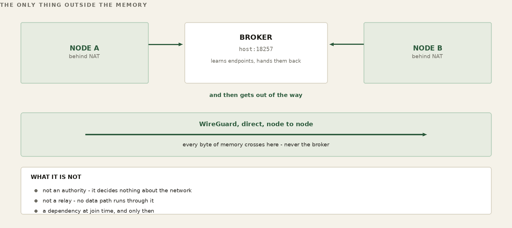
The chapter before this one came back to the broker properly — what it is, why a network that needs no server needs a rendezvous at all, and what the tunnels it hands out actually carry. You do not need any of that to install one. You need two sentences. Across the internet, a broker introduces frogs that cannot find each other. On one site, a broker shortens a path between frogs that already can. Same software, same file on the node, same tunnel machinery — a different problem, and a different address in one line of config. Which of those two you are doing decides everything below.
One thing is worth saying before the commands, because it changes how carefully you treat the machine: the broker holds no authority over your network and nothing it stores is irreplaceable. What it appears to know is re-derived every time a node checks in. It is never a party to your data. Its database is a cache the nodes refill. Build it carefully because it is the one piece with a public address — not because the network depends on it, which it does not.
There is exactly one hard requirement and it decides the rest: every participant must be able to open a connection to the broker by IP. Nodes connect to the broker and it never connects back, so it needs no way into any node's network — but it does need to be findable from all of them. Answer that and the deployment shape falls out.
Internet-facing. Nodes sit behind home routers, phone tethers, office NAT — places with no stable address and no inbound path. The broker needs a publicly-routable IP, and in practice a DNS name in front of it so the address can change without touching every node. A small VPS is the whole requirement: a fixed public IP, a name, and a few dollars a month. Ours is a DigitalOcean droplet behind streamingfrog.com; nothing about FrogNet cares which company rents you the machine.
Intranet-facing. Every node is already on one routed site — a campus, a warehouse, a ship, a building with a lot of floors. Any local address all of them can reach will do, including one of the mesh nodes itself. There is no NAT to cross and no public exposure to think about, and the broker's job changes accordingly: it is not there to make anything reachable, because everything already is. It is there to lay shortcuts. That case gets its own section below, because it is the one people do not expect a broker to be for.
You can run both at once, and a large deployment usually should: a public broker so a stranger in another city can be introduced, and a local broker on a big site so traffic inside that site stops threading ten boxes to get across the room. They are separate ponds with separate configuration; a node points at one, chosen by which problem it has.
One script does the whole install — clean machine or upgrade — and asks for what it cannot work out. Have these ready:
the public name clients will use (FQDN, or a LAN address) the port the API answers on (default 18257) the web document root (default /var/www/html) the WireGuard port range (default 51901-51999) the name of the first pond (e.g. hometown) its size, node base, and step (50, 10.101.100.1, 10) an optional pond join password the operator console password (required) an admin API token (or let it generate one)
The node base is the address the first node's gateway takes, and the step is how far apart the following nodes land in the third octet — base 10.101.100.1 with a step of 10 gives you 10.101.100.1, 10.101.110.1, 10.101.120.1, and so on. Two constants are not negotiable and the installer will refuse you if you fight them: the base ends in .1, because .1 is always FrogNetHost in any subnet, and the pond lives inside 10.0.0.0/8 clear of 10.253 and 10.254, which are the transit and chorus ranges the broker allocates from.
WORKED EXAMPLE — A clean machine, start to finish
sudo ./install_frognet_broker.sh ... it asks the questions above, then: - installs dependencies and the Python environment - lays down the gatekeeper, the web front doors, the CLI - writes the systemd units and the Apache vhost - starts everything and bootstraps the admin token - creates your first pond THROUGH the running gate - runs a postflight and prints one line BROKER GATE: PASS 10/10
That last line is the only proof the install worked, and it is worth reading rather than glancing at. The postflight does not ask the services whether they are happy; it tries things and reports what happened. It sends a real request through the real front door and waits for the real answer. It attempts, as the web user, to read the admin token and the private configuration, and the install fails if either succeeds. It checks that nothing is listening where the old broker used to. It calls an administrative route with no credential and requires a refusal, then calls it with one and requires an answer. A green line means those things were tried, not assumed.
The same script upgrades an existing broker, and works out which case you are in by looking for a database. Three modes:
fresh no database found; build everything upgrade-keep replace the code; keep every pond, node, tunnel upgrade-wipe replace the code, then wipe — properly sudo ./install_frognet_broker.sh --mode upgrade-keep sudo ./install_frognet_broker.sh --verify-only # postflight only
The wipe deserves a sentence, because the obvious version of it is wrong. A wipe does not delete the database file. It brings the new stack up and then asks the running broker to reset itself, so the wipe runs down the same teardown path a single tunnel takes when it is retired. That matters because the database is not the only state: behind every tunnel record are two WireGuard interfaces, two port forwards, and a network namespace. Delete the records and all of that survives with nothing left that names it — ports stay held, and the next install allocates around ghosts. You find out weeks later, when new tunnels quietly stop being created, and it looks nothing like its cause.
Two things listen on a broker machine, and keeping them straight is the whole of its security design.
The broker service itself. It opens and manages its own port — the one you handed out — terminates its own encryption, allocates the WireGuard ports, and programs the namespaces. Nodes talk to it directly. There is no web server in front of it, and nothing about it is a web page. This is the machine your tunnels attach to, and the port a node connects to is the broker answering for itself.
The web tier, on port 80. The operator console and, if this machine also serves your site, the site's own pages. A person opens these. No node ever does. Registration is not a web action: a node joins by running setup_lillypad and frognet-tunnel-setup-v3.sh against the broker's own port, with a passcode you minted from the broker's command line. There is no form to fill in.
Which makes the console optional, and worth treating that way. It is a convenience for the operator, reached with the credentials the installer left on the machine; the broker does its whole job without it. Nothing in this section requires you to expose it to the internet, and the recommended posture is that you do not — reach it from the broker, or over your own tunnel, and leave the world with one port that answers and nothing to browse.
The second of those is the one that faces strangers with a browser, so it is the one built with a wall down the middle of it. The console's page talks to a small program on the web server, and that program can do exactly one thing: write the request into a directory as a file, and wait for an answer to appear in a different directory. It holds no password, no key, no connection to anything. On the far side of those two directories a private service picks the file up, checks it against a list of the operations it is willing to perform at all, checks the operator's authority against files the web server cannot read, performs it, and writes the answer back.
WORKED EXAMPLE — The console, and the wall in it
a person with a browser
|
v
Apache :80 the console page and its helper
| holds no key, opens no connection
| writes spool/admin/req/<id>.json
| waits spool/admin/resp/<id>.json
===+========= the only crossing: a directory ==========
|
the private service checks it, then does it
|
v
the broker service which also answers nodes, on its
own port, as itself
What that buys is worth stating exactly. The console's helper is the part a stranger can reach, and it is the part that holds nothing: take it over completely and you have taken over a program whose entire vocabulary is "leave a note in this directory." The password you type is not checked there — it is relayed once, checked privately, and what comes back is a pass that expires. The broker's own credential never touches the web server at all.
Two consequences follow, and both are deliberate. The first is that the console blocks while the private service works, and if that service is stopped the page reports a timeout rather than a blank screen or a cheerful nothing. A gate that fails open is not a gate. The second is that a timeout means you stopped waiting, not that nothing happened — so the error hands back a reference, and the answer stays collectable under it afterwards.
Which leaves the obvious objection, and it deserves a straight answer rather than a footnote. The broker service speaks HTTP. It always has, that is deliberate, and it still does — a node has to be able to reach it from a coffee shop on a borrowed connection, and inventing a bespoke protocol to carry a handful of JSON requests would have bought nothing but a second thing to get wrong. So yes: there is a port on the internet, and it answers.
That is not a way into your network, and the distinction is the design rather than a quibble: a port answering is not a route in. What answers holds no credential. It cannot route to the 10/8 plane. Every request it will act on is a named entry on a list, checked before anything runs. And on the console side, the part a stranger with a browser can reach cannot even reach the broker — it writes a note into a directory and waits. There is no socket behind it to pivot to and no key behind it to steal.
So a web tier with an air gap behind it is not a compromise between exposure and convenience, arrived at reluctantly. It is the recommended architecture, and here it is simply what the software does — which is also why running the console and the broker on one machine is a reasonable thing to do rather than something to apologise for. Co-location is safe when the only thing crossing between the two is a file in a directory, checked against a list of the operations permitted to exist. The attack surface remains zero.
None of this touches your nodes. They were never talking to the web server; they talk to the broker service, on its own port, exactly as they did before. A console can be rebuilt this way without a single node noticing.
Now the case a broker is not famous for. Picture a sprawling site: a manufacturing floor, a campus, a ship. Every node can reach every other node — there is no NAT, nothing is hidden, and the network forms perfectly well on its own. And the path it settles on is dreadful, because the only physical route from the far end of the building to the office runs through every box in between. Ten hops. Each one a real machine doing real forwarding, each adding delay and one more thing that can fail. Nothing is broken. It is just long.
This is what a local broker fixes. Point tunnel.conf at a broker running on the LAN, put the two distant nodes in the same chorus, and the broker mints a tunnel between them exactly as it would across the internet. The tunnel does not make them reachable — they already were. It makes them adjacent. Traffic stops threading eight machines and goes straight.
WORKED EXAMPLE — Ten hops become two
before — the only physical path is the chain:
FLOOR-9 .. eight relays .. OFFICE-1 10.120.10.1 10.120.90.1 every packet crosses eight machines. ~40 ms, 8 ways to fail.
a local broker on the site mints one tunnel:
BROKER_URL=http://10.120.50.1:18257 POND_NAME=plant CHORUSES=floor-to-office
after — the two are neighbours:
10.120.90.0/24 dev wg1 (OFFICE-1, one hop) ~3 ms, and the eight relays keep their own traffic.
Nothing else has to be told about any of this, and that is what makes it safe to do on a site that is already running. Discovery — Part V — measures a tunnelled path exactly the way it measures a wired one, and the shorter round trip wins on its own merits. The chain does not disappear; it drops to a fallback and takes over unchanged the moment the tunnel stops answering. You are not overriding anything. You are handing the network a better option and letting it choose.
Two cautions, both learned the hard way. First, a shortcut that is not shorter will not be used, and should not be. Paths are ranked by measured round-trip time, and a healthy route in place is held rather than churned for a marginal gain — so laying a tunnel between two boxes already one hop apart buys nothing but a second thing to maintain. Measure the long path before you decide it is long. Second, the tunnel rides the same wire as everything else. It is a shortcut in the routing, not a second physical link: if the chain is slow because the cable is saturated, a tunnel across that cable is slow too. It fixes distance, not bandwidth.
The reason this works at all is a constant that holds everywhere in FrogNet: a FrogNet tunnel is always willing to carry any address in 10.0.0.0/8, never a narrower set. Which tunnel a packet takes is therefore decided entirely by the routing, not baked into the tunnel — so a new tunnel is a new option to be weighed, not a commitment. That is what lets a shortcut be added to a live site without disturbing anything already running on it.
One command talks to the broker, and it goes through the same front door every node uses. There is no private back channel for the operator, deliberately: if the gate is broken you find out with your first command, instead of having a side entrance that hides the outage.
frognet-pond ping is the gate alive frognet-pond list every pond frognet-pond status plant one pond in full frognet-pond members <pond> who has registered frognet-pond forget <pubkey> force-deregister a node frognet-pond block <pubkey> refuse a key, tear its tunnels down frognet-pond result <id> fetch a request that timed out
journalctl -u frognet-gatekeeper-broker -f
Every refused request is quarantined with its reason recorded, so "why did that call fail" is answered by reading two files rather than by guessing. The failure modes are few enough to list. Every call timing out means the private service is down — check it. Requests piling up unanswered mean it is running but stuck, and because it works strictly one request at a time, the culprit is the last one it started. A node suddenly refused where it used to be served means the gate's checks are stricter than what was silently tolerated before; the log names the exact field.
Four operations, in order of how much they destroy. Each takes a backup before touching anything — a real consistent backup, taken through the database's own backup interface rather than by copying the file, because the broker journals its writes and a copy of the main file alone is a copy of the last checkpoint, not of the database.
frognet-pond db status row counts, indexes, backups frognet-pond db backup take one now frognet-pond db clear-tunnels destroy every tunnel; keep the rest frognet-pond db clear-nodes also clear nodes; keep the ponds frognet-pond db reset everything, back to a fresh schema
Each destructive one makes you type an exact phrase — DESTROY ALL TUNNELS, CLEAR ALL NODES, RESET THE DATABASE. That is not ceremony. These are reachable from a web front door, and the difference between an operation a stray retry can trigger and one it cannot is a required string the retry does not carry.
The rule underneath all four is the same one as the wipe, and it is the only thing about them worth memorising: kernel state comes down before records go away. Every one of these tears the tunnels down through the same path the broker uses to retire a single tunnel — interfaces deleted, port forwards removed, namespaces released — and only then deletes anything. Clearing tunnels is the gentlest and is genuinely routine: every node rebuilds on its next check-in, the same path a brand-new node takes, so it is a reasonable first move when the mesh looks wrong and you want a clean slate without losing the pond.
Which is the practical form of what this chapter opened with. A broker going dark costs you the ability to introduce a stranger or mint a new tunnel; everything already formed keeps running. That is also why db reset is a recoverable operation rather than a catastrophe — the nodes hold the truth, and they will tell it to a blank broker the next time they check in.
When two frogs need a link they cannot make for themselves — they cannot reach each other across the internet, or the only path between them runs through too many hops — the broker hands each one a channel: a small description of a tunnel to build. A channel names an endpoint and a public key, a private transit address drawn from 10.253.0.0/16, the subnets reachable through it, and one constant — AllowedIPs = 10.0.0.0/8. The node turns each channel into a WireGuard interface, wgN, and the tunnel is up.
The endpoint and the key in that channel are the broker's, not the far node's. Look at the peer block a node actually writes and the pattern is unmistakable: every node peers with the broker, and no node holds another node's key. So the tunnels do not run between the two frogs at all — they run from each frog to the broker, which terminates both and forwards between them. The broker is the transit point, and every cross-site packet goes through it. What that costs, what it does not cost, and what an attacker gets for owning it are the subject of Part XII; the mechanism is stated here so nothing later has to correct it.
The forwarding itself happens in the kernel. The broker programs iptables and netfilter moves the packets; nothing at the application layer parses them, buffers them, or writes them anywhere. That is why the chapter can say the broker carries the traffic and the security part can say it cannot read it, without the two sentences fighting.
Two things about that AllowedIPs line carry the whole design. It is always the entire FrogNet range, never a narrower set: every tunnel is willing to carry any FrogNet address, so which tunnel a packet takes is left entirely to the route table, not baked into the tunnel. And the transit /30 out of 10.253 is only the carrier addressing between the two tunnel mouths — nothing lives there. The node's identity and its real traffic still ride its .1, exactly as on the wire; the tunnel is plumbing underneath it.
So the routes are the simplest thing that could work: dest dev wgN — the far subnet, out the tunnel interface, with no gateway at all. Because the interface accepts any 10.x — that is what AllowedIPs = 10/8 means — the local kernel drops the packet onto wgN, the broker forwards it out the matching tunnel, and the far node's kernel routes the inner packet onward. A peer reached by tunnel lands in the route table the same shape as a peer reached by wire.
WORKED EXAMPLE — A channel becomes an interface and a route
broker hands HomeBase a channel reaching MomBox: endpoint 203.0.113.7:51820 (the broker, reachable) pubkey <broker public key> transit 10.253.4.2/30 (this tunnel's carrier) subnets 10.90.90.0/24 (what MomBox serves) AllowedIPs 10.0.0.0/8 (carries any 10.x) the daemon brings it up as wg3 and installs one route: 10.90.90.0/24 dev wg3 (no gateway needed) MomBox has built the mirror of this toward the same broker. the broker forwards between the two, in the kernel. now 10.90.90.1 answers like any LAN peer. apps never know.
Tunnels are not discovery's job. A dedicated tunnel daemon owns them, on its own loop: on a broker event it brings the interfaces up and installs their routes; a periodic reconciliation rebuilds any interface that has vanished, within tens of seconds; on startup it tears down dead leftovers so a reconnect always starts clean. It pointedly never runs wg-quick down to refresh a link, because that flushes every dev wgN route in a single syscall — and on a node that relays for others, that route table is most of what the node is. Instead it nudges the handshake back to life in place, leaving the routes untouched. That is why a tunnel can flap all day — internet links do — and the picture above it does not flinch: the daemon rebuilds the bearer, the routes return, and discovery never saw a thing.
A channel carries more than the far node's own wire. The broker lists, for each peer, the subnet it owns plus the subnets it relays — so a single tunnel to a far node can carry that node's entire side of the world. A node that relays for others is a forwarder; on a forwarder each tunnel interface holds several routes, not one. Routes to the forwarder's own /24 go straight out the tunnel; routes to subnets behind it go out the same tunnel but via the forwarder's .1. Two LANs in two cities, each with a forwarder and one tunnel between them, become one 10.0.0.0/8 overlay — every node addressed by its .1, whether it is on the same switch or across the country.
WORKED EXAMPLE — Two sites, one overlay
two sites, one pond, one tunnel between forwarders: New York LAN Seattle LAN NY-1 10.102.60.1 --tunnel-- SEA-1 10.133.144.1 NY-2 10.102.61.1 SEA-2 10.133.145.1 on NY-1 the channel to SEA-1 carries Seattle's whole side: 10.133.144.0/24 dev wg2 (SEA-1, direct) 10.133.145.0/24 via 10.133.144.1 (SEA-2, relayed) NY-2 reaches SEA-2 at 10.133.145.1 as if it were next door.
Nothing above the route table changes. The discovery walk of Part V ranks a tunnelled path by its round-trip time exactly as it ranks a wired one, so when a destination is reachable both directly and over a tunnel, the faster wins and the other waits as a fallback. The proxy forwards over wgN with the same FNWP-1 frames it uses on copper. The network has no “local mode” and “remote mode”; it has one overlay, and the internet is just one more bearer underneath it.
The broker does not mesh a whole pond blindly; it meshes a chorus — a named group within the pond, the CHORUSES=family line from the broker file. Members of the same chorus get tunnels to one another, wherever they sit. A chorus also gets its own virtual address space — 10.254.0.0/16, carried on a virtual interface, frognet0 — so the group can be addressed as a group, independent of which physical subnet any member happens to be on. The pond is the outer boundary; choruses are the cross-cutting circles inside it, and they are what the broker actually strings together across the internet.
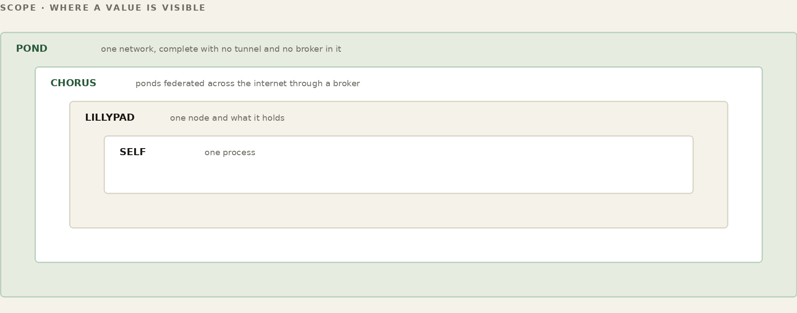
Trust in FrogNet rests on a few plain mechanisms, not a security product bolted on top. Identity is the GUID minted at install in /etc/fnid: the broker keys a node on that GUID, with no fall-back to MAC address or name, so a node can be renamed or re-addressed without becoming a stranger and cannot be impersonated by reusing a name. Joining a pond is a one-time exchange — a node redeems a passcode with the broker for a group token it then carries as its credential, and it generates its own WireGuard keypair, handing the broker only its public key; private keys never leave the box. Encryption covers what crosses the open internet: every cross-site tunnel is WireGuard, so traffic between sites is encrypted end to end. On a local wire you trust the segment you own — the node is the .1, the DHCP and DNS authority for its own /24, and nothing routes onto it without its say. Capability, not a password, decides who holds a role; identity and encryption decide who is in the pond at all. These are the mechanisms the fabric needs to operate; the wider security they add up to — why a node shows no face to the internet, why reaching one means being near it, and why the wire gives up little even when tapped — is drawn together in Part XII.
FOR THE GUILD
This part is the most conventional networking in FrogNet, which makes it the most immediately legible to anyone who already knows the ground — and the least forgiving, because a mistake here is a node that cannot be reached at all. If you know WireGuard, and you know address routing through tunnels, the open work is here: how groups map to namespaces, how ports are allocated and firewalled, what happens on rekey, and how a node that moves between bearers keeps its address. The broker tier of the simulator stands up a real broker in the loop, so a change can be shown rather than argued.
Two doors. To talk about it — this book lives in a public repository and its Discussions are open at github.com/FawcettJohnW/FrogNet-Living-Network/discussions; no licence is needed to argue there. To build on it, the licence page is fawcettinnovations.com/license — ask, and if you want to work on something, say so and say which. The questions are optional and the licence does not depend on them.
One part, for the reader who is not building a network but already has one. The mechanics of inserting FrogNet below egress, what it leaves alone, and where the boundary of responsibility falls. Chapter 1b stated the headline; this is how, and what it costs to be wrong about it.
Chapter 1b said the headline: you do not migrate a network to FrogNet, you insert one below egress. This chapter is how, and what it costs you to be wrong about it. Everything so far assumed you were building a network. Most people are not. They have one, it works, it has printers and badge readers and a PLC nobody has power-cycled since 2019, and the interesting question is not how to build a FrogNet but where to put one so the existing thing keeps working.
The answer is that FrogNet plumbs in just below actual egress. The existing machines become reachable across the 10-network without losing their internet connectivity, and without an agent on any of them. A handful of capable networking boxes, placed where the traffic already goes, and the site is on FrogNet.
Every per-host mesh — Tailscale, ZeroTier, Netbird — requires software on each participant. That is a reasonable design and it works well, right up until the participant cannot take software. The printer cannot. The badge reader cannot. The camera, the PLC, the infusion pump, the ancient Windows box that runs the one program the business depends on and which nobody will touch: none of them are getting an agent, this year or any year.
Inserting below egress means those machines participate without being modified, because nothing about them changes. They keep their addresses, their gateway, their firmware. What changed is the box their traffic already passed through. No per-host mesh can make that claim, and it is the claim worth leading with.
This is the objection that ends the conversation if you do not have an answer, because every enterprise of any size is already living in 10.0.0.0/8, and “we take 10/8” sounds like a demand to renumber the company.
The answer is that address space is coincidence, not membership. Being a 10. machine is not enough to make you a FrogNet host. You also have to answer the phone when discovery tries to contact the proxy. The on-segment leg of discovery gates on the :9009 ping-pong, and a .1 that does not answer never becomes a neighbour and never gets a route. A negative verdict is not believed on one refusal either; the probe retries before concluding anything.
10.44.0.0/16 the customer's existing space
10.44.7.1 a switch. does not answer :9009.
-> never a neighbour, no route installed
10.101.100.1 a FrogNet node on the same wire
-> answers, becomes a neighbour, routes
So FrogNet routes ride alongside an existing corporate 10-space rather than swallowing it. Nobody renumbers.
If answering the phone is the membership test, then a printer never becomes a FrogNet host. It is a machine on a FrogNet node’s LAN, reached through that node. Say it that way. “Your existing machines become hosts” invites the question “what are you installing on them,” and the honest answer — nothing, they sit behind a node — is the better story anyway. Precision costs nothing here and buys the room.
Two questions come next in every one of these conversations, and both have the same answer: that side of the line is yours, and it always was.
Address conflicts in 10-space are the network administrator’s responsibility. If two sites both use 10.1.1.0/24 and both want their hosts reachable from the other, FrogNet does not resolve that and does not pretend to. Neither does any router you already own. Overlapping address space is an addressing-plan problem, it is solved with an addressing plan, and a fabric that claimed to make it disappear would be lying about something expensive. What FrogNet guarantees is narrower and worth more: it will not create the problem by helping itself to space you are using, because a subnet whose .1 does not answer never acquires a route.
One node does not mean one subnet per node. A FrogNet node serves a single /24 — that is its own segment, not a claim on yours. A site with twelve VLANs does not therefore need twelve nodes, because the thing that routes between those twelve is already installed and already working. Your layer-three switch, your VLAN manager, your existing default path: all of it sits below the insertion point and keeps doing exactly what it does today. FrogNet is downstream of it, carrying the site outward, and the site’s internal routing is not a problem it is trying to solve twice.
VLAN 10 10.44.10.0/24 -+ VLAN 20 10.44.20.0/24 -+-> L3 switch -> FrogNet -> egress VLAN 30 10.44.30.0/24 -+ (already (one /24 ... twelve of them routing) of its own)
Segmentation below the insertion point is not our business. Whatever VLANs, trunks, tags and access ports exist inside a site continue to exist and continue to do their job. FrogNet plumbs in below actual egress and works on the addresses that arrive there, properly resolved. It does not need to know how many broadcast domains produced them, and it does not ask you to re-tag anything. If the addressing is correct by the time traffic reaches the node, the local layer-two design is invisible to FrogNet — which is the outcome you want, because it means nobody has to touch it.
Both statements are limits, and both make the pitch stronger rather than weaker. An architect who hears “we handle overlapping ten-space” stops believing the rest of the sentence. An architect who hears “that one is yours, same as it is today” recognises somebody who has done this before.
The WireGuard interface claims AllowedIPs=10.0.0.0/8 at the kernel level, so coexistence rests on two things holding: the incumbency rule that leaves a healthy installed route alone, and the negative cache that keeps a non-answering subnet from ever acquiring one. That is probably already correct. It is not yet proved, and around here the difference matters.
The proof is a topology where a node’s LAN overlaps a non-FrogNet 10-space, converged in the simulator, showing no installed route for the customer’s subnet. Five minutes to run. Until that exists, this chapter is an argument rather than a demonstration, and it is written here as one.
WORKED EXAMPLE — Why only a refusal marks a host as not-FrogNet
The negative cache has a rule that looks over-careful until you know where it came from: a timeout must never mark a host as not-FrogNet. Only a definitive refusal does.
The module that keeps that cache had a docstring saying its flush ran at the top of every merge. The sentence was false from the day it was written. The stage it named did exist — and its entire body deleted rows from an unrelated table with no connection to the file at all. Nothing in the tree ever called the flush. A mark was therefore permanent for the life of the proxy process, and the docstring hid that for weeks.
Seattle3, 2026-08-08
09:02:09 one ECONNREFUSED, during a 2s restart of Seattle5
-> 10.250.250.1 marked not-FrogNet. permanently.
that address was the elected databasehost.
result every sensor upsert 503s
the capability tuple never lands
the databasehost floats away
One legitimate refusal, during a two-second restart, cost the network its memory. The rule that followed is narrow and it is the right width: a refusal is evidence, a timeout is not, and a slow real node had already been poisoned here once.
The capabilities in Part I — the sensors across the world, the offline AI — run on machines that are not, themselves, FrogNet nodes. They are platforms: separate boxes that install just enough FrogNet to reach the plane, then do their own work as clients of the shared database. This distinction is the one that trips people up, so this part draws it sharply. Growth again, in the other direction. A platform is not a smaller node or a lesser one — it is the organism reaching something it could not otherwise touch, and reading from it as though it were part of itself.
A role is not reserved to a node. Any machine on the pond can register for one — database, media, board game, whatever roles exist. The election reads capability, not pedigree, so a well-provisioned box that is not itself a FrogNet node can hold FrogNet Memory or serve as the media host. What makes something eligible is what it can do, and that is the whole of it.
FrogNet nodes provide the infrastructure. A sensor platform uses it, and is not a node — it joins no election and holds no role. At heart it is an aggregator and a storage pump: it collects readings from the physical world and writes them into FrogNet Memory as sensor rows, through the standard proxy path. That is the whole job. A typical one runs a fistful of cheap microcontroller boards over Bluetooth or Wi-Fi into a small concentrator — a Pi Zero — which batches and posts them up into the mesh. A radio bridge pulling a Meshtastic or LoRa mesh off the air and writing its packets in as sensor rows is the same shape. It does not need to be the database host; it does not run the apps that read what it collected. It pumps; everyone else reads. From there any node — or any AI — queries the readings by name, and one trickle of upstream bytes feeds dashboards, alerts, and reasoning alike. The FrogNet_monitor info center from Part VI is the reading end of exactly this — it pulls a node's rows back out by name, while the platform that wrote them neither knows nor cares who is watching.
WATCH
Tuples and REST — the tables, api.php, and the backgammon case
An AI host is a machine running a local model harness — Ollama, on your own hardware, inside the pond, not in anyone's cloud. A Knowledge Pack frames the same harness into a specialist: a petroleum geologist for a wellfield, a hydroponic gardener for a grow room, an emergency-response coordinator for a disaster net. You tell it which sensors matter and hand it a small set of HTTP calls against FrogNet Memory — list the sensors, read them, write observations and decisions back — with its writes fenced into its own namespace. There is no special AI plane; it is just another participant reading and writing tuples, exactly like the sensor platform, exactly like a dashboard.
Internet up, the model can augment itself; internet gone, it runs on local weights and live tuples and, where you permit, drives actuators on what it reads. Because every AI shares the same floating data layer, several specialists scattered across the mesh are aware of one another's observations without reporting to any coordinator — connected, they see each other's state through the shared database; partitioned, each works on local state; reconnected, the shared state reconverges and they see each other again. The contrast with cloud AI is the point: cloud AI sends your data out for someone else's model to judge; FrogNet keeps the data in your pond, runs the model on your hardware, and lets the output drive your actuators. Same capability, opposite custody.
This is two Part I promises at once. It is put the intelligence where the data is, literally — the model sits on the mesh it reasons about. And it is the gentler one, keep an eye on someone without watching them: passive sensors at an aging parent's house write the rhythm of a normal day into the shared layer (the sensor platform, just above), a local specialist reads that rhythm and flags only the break, and nothing — no camera, no recording, no company — ever leaves the pond. The watch is a tuple read on hardware the family owns.
FOR THE GUILD
Both platforms work. Neither is yet tuned to get the most out of FrogNet Memory, and that is a care-and-feeding job rather than a rewrite. A platform that treats the memory as a database it posts to will function and will leave most of the benefit on the table: addressing so names sort into something navigable, writing at a granularity that makes a diff small, giving the codec structure it can learn, and knowing which values are current state and which are events that should not be in here at all. The sensor side has the widest surface for new device work. The AI side has the piece we would most like someone to pick up — the knowledge pack, where a named professional role gathers its lexicon, regulations and reference texts while it has the world, and then works without it. That is what makes autonomy mean resident expertise rather than a remote brain, and it needs no integration work, because an AI host is just another participant on the scratchpad.
Two doors. To talk about it — this book lives in a public repository and its Discussions are open at github.com/FawcettJohnW/FrogNet-Living-Network/discussions; no licence is needed to argue there. To build on it, the licence page is fawcettinnovations.com/license — ask, and if you want to work on something, say so and say which. The questions are optional and the licence does not depend on them.
Everything to here is a network that keeps itself alive: it found its neighbours, elected what it needed, reached past the LAN, and put a shared value somewhere the whole mesh can read. That is worth having on its own, and a great deal of what people build on a FrogNet uses nothing else. But a living thing that can hold state can be programmed differently, and the next two parts are that difference, in two layers. This one, UnREST Core, is the built-in default: the machinery every exchange on a FrogNet uses for free, with nobody writing a line. It rests on a single move — stop thinking of a network as something that carries messages and start thinking of it as something that shares memory — and it makes that move practical with two things: compression that sends only what changed, and a wire that never sits idle. The part after it, UnREST Unleashed, is what you build on top of this floor.
WATCH
Tuples and REST, Part 2 — the tables again, deeper, and what a program actually sees
WATCH
Intro to Tuples — addressing memory by three keys
One idea ties both layers together, and it is worth meeting now: it is all object-oriented. Every exchange on a FrogNet is processed by a handler — an object conforming to one interface, with a few virtual slots it may fill: how to compress, whether it holds a role, how to announce itself. UnREST Core is simply the default behavior of that interface. The ordinary content handlers fill the one slot that matters for compression and inherit do-nothing defaults for the rest, which is why every JSON reply and sensor read gets SAME / DIFF / FULL and the fanned transport without anyone subclassing anything. The object model only shows its full reach when you override more of it — an entire media protocol, a whole game — and that is UnREST Unleashed, the part after this one. The handler interface itself is laid out there, in “The Object-Oriented Handler.”
The web is built on messages. A client composes a request, ships the whole thing, waits; a server parses it, rebuilds context it almost certainly already had, composes a whole reply, ships it back. Every exchange re-states the world from scratch. Stateless by design — a choice that made sense when memory was scarce and links unreliable, and nobody has questioned since.
UnREST questions it. The model it borrows is Linda — Gelernter and Carriero's tuple spaces, Yale, 1985 — where independent processes never address each other at all. They write values into a shared associative memory and read them back by pattern. A producer drops a reading into the space without knowing who will read it; a consumer reads by pattern without knowing who wrote it. Decoupled in time and identity. FrogNet's shared memory — FrogNet Memory — is that space across a network, and UnREST is Linda carried onto a transient one. The distinction is worth holding: FrogNet Memory is the architecture, the thing api.php implements and every node reads and writes. UnREST is the programming model over it. One boundary is worth drawing here so it is never blurred later: Linda matches arbitrary tuples by pattern, and says nothing about how many fields a tuple has or what they mean. The three coordinates this book uses — type, name, location — are FrogNet’s indexing convention, chosen because they fit the traffic, not something Linda requires. Borrow the model, own the convention. When this book says a program "puts a value where every machine can see it", FrogNet Memory is where it goes. Two parties that share memory do not re-send what they both already hold — they reconcile the difference and nothing else. A message system re-transmits structure on every exchange; a memory system transmits structure once and values forever after. That is a different theory of what crosses the wire.
I did not arrive at this by reading Gelernter. I arrived at it by missing something. Years ago I did engineering flight simulation for the Boeing Commercial Airplane Company, in autopilot and autothrottle development, and the autothrottle got what it knew about the rest of the aircraft off an ARINC 429 bus. You addressed the data on the bus and it was there. Not fetched from a service, not requested from whoever owned it — addressed, the way you address memory. Nobody writing autothrottle logic thought about who had produced a value, or where that box sat, or when it had last spoken. The bus carried current truth and you read the part you needed. I wanted that on a network for thirty years before I built it, and FrogNet Memory is what it turned into. Linda is the formal statement of the idea; 429 is where I learned to want it.
WATCH
Semantic Compression — pipe_workload, the byte counts, and BLDC-1 against FNWP-1
The honest admission: the memory model only works because something underneath makes “send only the difference” nearly free. That something is BLDC-1, FrogNet's semantic compression, the baseline accelerant the whole architecture stands on. It runs three states over a learned template: SAME, DIFF, and FULL. The first exchange of a structure goes whole — FULL — and both sides learn its template: its shape, which parts are fixed and which vary. After that the sender says SAME and sends almost nothing when nothing changed, sends DIFF with just the changed values against the shared template, and falls back to FULL only when the structure itself changes enough that the template no longer fits.
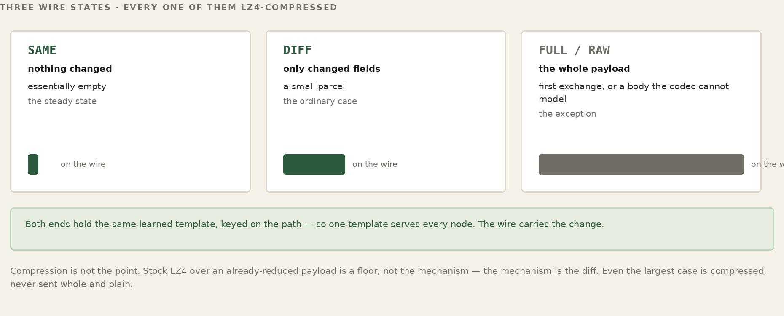
WORKED EXAMPLE — A sensor reading on the wire, three exchanges running
exchange 1 FULL { "sensor":"barn.temp", "unit":"F",
"value":54.2, "ts":1719..., ... } ~480 B
both sides now hold the template.
exchange 2 DIFF value->54.6 ts->... ~12 B
exchange 3 SAME (nothing changed) ~21 B
Notice this is the same move as UnREST, one layer down: the codec does not transmit what the far side already remembers, only the reference and the diff. “Exchange memory, not messages” is the architecture; SAME/DIFF/FULL is that principle on the wire. They are the same idea at two scales — which is why discovery, coordination, and application traffic all get the benefit for free, and why a real web application runs over a link slower than a 1990s modem.
The whole scheme rests on both ends sharing a template, so the obvious question is where the template comes from. Nobody writes one. It is learned from the first real exchange of its kind. The first time a given request or reply flows through — a sensor upsert, a getHosts, a particular dashboard query — the proxy looks at its actual shape and records a template: which parts are fixed structure and which are the values that vary, what type each varying field is (a string, an integer, a float, a boolean, a nested object), and the order they appear in, including any that ride on the URL. That template is the FULL from a moment ago; learning it and sending it are the same act. From then on the structure is known on both sides and only the values move.
A template has an identity, so the right one is always picked. It is keyed by the stable parts of the exchange — the operation and the fixed query keys — not by the values. A temperature reading and a humidity reading from the same kind of sensor share one template; the number is just a value slotted into it. This is why a brand-new sensor that has never been seen still rides an existing template the instant its readings match a known shape: the template was learned for the shape, not for the specific sensor.
WORKED EXAMPLE — One template, many readings
first reading of this shape -> FULL: learn the template
structure: { sensor:<str>, unit:<str>, value:<float>, ts:<int> }
fixed: the field names, their types, and their order
dynamic: the four values
every later reading of the shape -> just the values, diffed:
value->54.6 ts->... (the template is never re-sent)
“The reference both ends hold” is a cache, and it has layers. The closest layer is the reference values: for each peer and each kind of exchange, the proxy keeps the last canonical values it sent or received. That is what a DIFF is computed against, and what a DIFF is applied to — the memory that makes “send only what changed” possible at all. Above it sits a small in-memory cache of SAME answers: when a reply comes back SAME, the proxy serves the body straight from memory instead of going back to the database for something it already has, so a SAME never touches the disk on either side.
And underneath, the references are written through to durable storage — the node's own database — so they survive a restart. A node that reboots does not relearn every template and reference from scratch; it loads what it knew and picks up where it left off. The cache is therefore both hot and durable: fast in memory for the steady state, persisted so a power blink does not cost the network its shared memory. It is the same principle as everything else in FrogNet — keep the current truth close and reuse it — turned on the compression machinery itself. That the meaning lives in this local cache and not on the wire is also why a tap yields so little — the security consequence is taken up in Part XII.
FOR THE GUILD
The three states are settled. The numbers between them are not, and they were chosen once by somebody with one workload in front of them. How far apart do two floating-point readings have to be before they count as changed -- and should that be one answer, or one per field? A list is held whole up to sixty-four items and then handled differently; why sixty-four? A payload is compressed only when compressing it would actually shrink it, which is obviously right, but the crossover was measured on one machine against one codec. None of these is hard to improve. All of them need somebody to care enough to measure instead of assume, on traffic that is not the traffic they were tuned against. If that sounds like your kind of afternoon, the guild would be glad of you.
Two doors. To talk about it — this book lives in a public repository and its Discussions are open at github.com/FawcettJohnW/FrogNet-Living-Network/discussions; no licence is needed to argue there. To build on it, the licence page is fawcettinnovations.com/license — ask, and if you want to work on something, say so and say which. The questions are optional and the licence does not depend on them.
WATCH
Proxy and Daemon — the intercept, the standing socket, the accounting
BLDC-1 decides what to send — a SAME, a DIFF, a full body. FNWP-1, the FrogNet Wire Protocol, decides how it travels: how those frames are packaged, how many conversations share a socket, and how the replies find their way home. If BLDC-1 is the language, FNWP-1 is the envelope and the postal system. It is what rides the established sockets between node proxies introduced in Part V.
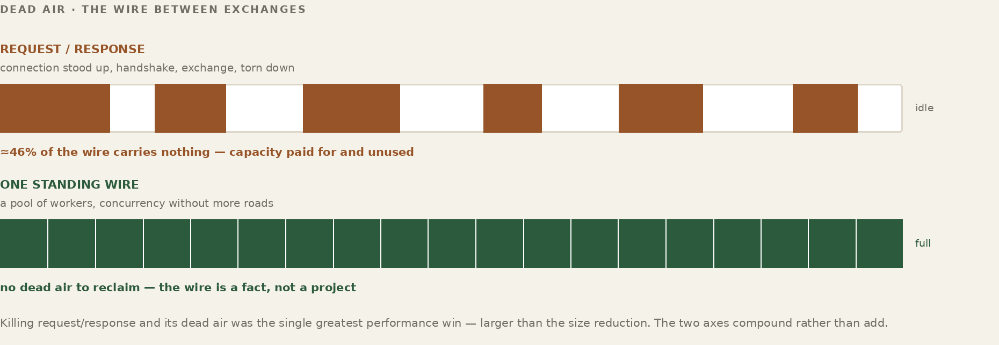
It helps to see where each piece sits, because two players do the work and it matters which does which. The handler, running the BLDC-1 codec, decides what bytes represent the exchange; FNWP-1 carries them. Follow one request from an application on this node to the data on a peer and back:
THIS NODE
1 app --HTTP :80--> proxy --> handler (BLDC-1)
2 handler: compare canonical answer vs reference
-> SAME | DIFF | FULL (+ request hash)
3 FNWP-1 frame --> established socket --> PEER
PEER NODE
4 FNWP-1 reader --> handler (BLDC-1)
5 handler: rebuild full request from reference + diff
6 origin (Apache -> MySQL) produces the answer
7 handler: compare canonical answer vs reference
-> SAME | DIFF | FULL
8 FNWP-1 frame --> back over the same socket
THIS NODE
9 handler: rebuild full reply from reference + diff
10 proxy --HTTP--> app
The thing to fix in your head is where SAME and DIFF are decided: at the handler, on each side, by the BLDC-1 codec — never on the wire. When a side has an answer to send, the codec compares the canonical answer — the values it carries against the template both ends learned, not its raw bytes — to the reference it holds from last time. Match, and it sends SAME: almost nothing. A few values moved, and it sends a DIFF of just those. The structure no longer fits the template, and it sends a FULL. (Two answers that differ only in incidental formatting are the same canonical answer, and cross as SAME.) A short request hash on the frame tells the far side which reference this is measured against, so the two ends never disagree about what “last time” was.
FNWP-1's job begins only after that verdict: it frames the SAME, the DIFF, or the FULL, tags it with a sequence number, and puts it on the socket. On arrival the reconstruction is exact precisely because both sides kept the reference — the receiving handler takes its copy of the last canonical answer, applies the diff, and has the full message again, which it hands to its origin or back to the waiting application. So every hop is one handler turning a full message into a verdict against a shared reference, and the handler on the far side turning that verdict back into the full message. That is the whole pipeline: incoming message, to handler, to FNWP-1, to the other side's handler, to the other side — and the reply home along the very same path. The codec decides the content; the wire moves it.
Every FNWP-1 message is a length-prefixed frame: four bytes of length, then a four-byte magic, an opcode, and the body. The opcodes are a short list — a full request, a repeat of a known one, a diff, or a raw bootstrap; a response that is SAME, a DIFF, or a raw body; a MISS meaning the hash you sent means nothing to me; a HELLO to open a channel; an ERROR; a SEQ_RESET; and the round-trip probes. The length prefix means a reader always knows exactly how many bytes to expect before the next frame begins, which is what lets many frames share one stream without ambiguity.
What is not in the request frame is a sequence number, and it is worth being exact about this because the obvious mental model is wrong. A request goes out carrying no sequence at all. The sender assigns one locally and files the waiting caller under it; the receiver assigns its own number from its own arrival counter and stamps that onto the reply. The two agree because they are counting the same events in the same order on the same socket — not because the number crossed the wire. That is why there is a SEQ_RESET opcode: two independent counters can drift apart, which would be impossible if the number rode the request, and SEQ_RESET is how they are put back in step. The ordering property, not a field, is what lets frames share the socket — the next two ideas.
A node rarely has just one thing to say to a peer. A dashboard is polling, a sync is running, three sensors are being read — all toward the same peer, all at once. FrogNet does not open a socket per request. They fan in to the peer's one established socket: the writer sends their frames one at a time down the single connection, and because each is filed under the number it was sent as, it does not have to wait for one reply before sending the next. Several requests are in flight on the one socket simultaneously, and the proxy keeps a small pending map — sequence number to waiting caller — so it knows who is owed what.
WORKED EXAMPLE — Three requests in flight on one socket to ShopBox
one established socket, three callers, sent back-to-back:
writer -> seq 41 REQ_FULL (dashboard poll)
writer -> seq 42 REQ_REPEAT (sensor read)
writer -> seq 43 REQ_FULL (file list)
pending = { 41:dashboard, 42:sensor, 43:filelist }
The replies come back interleaved, and not necessarily in order — a small SAME for the sensor read may return before the larger file list. That is fine, because every reply carries the sequence number of the request it answers. The reader pulls each reply off the socket, looks its sequence up in the pending map, hands it to the caller that was waiting, and drops it from the map. The frames went out fanned-in on one socket and come back fanned-out to the right callers, sorted by nothing more than a number on each frame.
WORKED EXAMPLE — Replies arrive interleaved, matched by seq
reader <- seq 42 RESP_SAME -> wake the sensor caller (first back) reader <- seq 43 RESP_DIFF -> wake the file-list caller reader <- seq 41 RESP_DIFF -> wake the dashboard caller pending now empty. out-of-order on the wire, in-order to each caller.
One more fan-in trick: if two callers ask the peer the exact same thing while the first is still in flight, FrogNet does not send it twice — the second is coalesced onto the first request, and both are woken by the one reply. Identical work collapses to a single exchange on the wire.
Sharing one socket has a cost: everything on it shares one TCP connection, so a stall or a lost packet that holds up one frame holds up the frames queued behind it — head-of-line blocking. For most traffic that is invisible. For a video call sharing a socket with a bulk file sync, it is not: the sync's stall would stutter the call. So FNWP-1 lets a node open independent channel sets to a peer — up to three, each with its own sockets, its own sequence space, and its own worker threads, so a loss on one cannot stall another. You ask for a set by naming the protocol and how latency-sensitive it is; all the ordinary traffic stays on the shared default set.
WORKED EXAMPLE — A call, a sync, and a chat to ShopBox
three independent sets — no shared head-of-line domain: set A video call (latency-critical) own socket + seq set B file sync (bulk) own socket + seq set C chat/control own socket + seq B stalls on a lost packet -> A (the call) never notices. a 4th protocol overlays onto the least-sensitive set (B) and shares its fate — so open sets honestly, by sensitivity.
Three is the budget per peer, and it is deliberate: past three, a new protocol overlays onto the least-sensitive existing set and shares its congestion window and its stalls. The cap is a guardrail against opening so many sockets that the node drowns in connection state. Within it the rule is simple — the things that must not stutter get their own set; everything else rides the shared one.
Step back and the payoff of all this — the fan-in, the fan-out, the interleaving, the standing socket controlled in both directions — is one thing: the wire is never idle. That is the clean break from how ordinary REST uses a network. Traditional REST is request-reply and serial at heart: a client sends a request, waits, gets a reply, sends the next. The gap between them is dead air — the round trip during which the link carries nothing. To win some parallelism a REST client either opens many connections, each paying a fresh handshake and slow start, or pipelines on one and hits head-of-line blocking, where a single slow reply stalls everything queued behind it. And because REST is stateless, every request re-states its full structure. On a fat link none of this is fatal; on a constrained one, the idle time and the repeated structure are bandwidth you never get back.
FrogNet takes specific control of the wire in both directions and refuses to let it idle. Owning a persistent socket to the peer, with every frame sequence-tagged, it does not wait: it fans requests in back-to-back, keeps many in flight at once, and takes replies back fanned-out and interleaved, matching each home by its sequence. A large, slow reply does not block the small fast ones — they complete out of order, as they arrive. The transmitter never starves on a round trip; by the time one frame clears the wire the next is already there. The link runs at or near full duty cycle instead of spending half its life waiting.
request-reply REST (one connection):
REQ-1 --------> (wire idle, waiting)
<-------- REP-1
REQ-2 --------> (wire idle, waiting)
<-------- REP-2 half the link is dead air.
FrogNet FNWP-1 (one socket, fanned + interleaved):
REQ-1 REQ-2 REQ-3 --------> (back-to-back, no waiting)
<-- REP-2 REP-1 REP-3 (interleaved, matched by seq)
the wire stays full; replies complete as they arrive.
Now stack the rest on top. The bytes that do cross are minimal — SAME and DIFF against a shared template, not full structure re-sent every time. Streams that must not interfere get their own channel set, so a bulk transfer and a live call share the link without fighting. The combined effect is that effective throughput stops being governed by how fast requests and replies can ping-pong and becomes governed only by what the physical link can actually carry. That is why the same traffic that crawls under request-reply REST moves many times faster here — the figure measured on a narrowband, 4800-baud-class link is 44× — and why a real web application runs at all over a link slower than a 1990s modem.
Those two Part I promises cash out right here. Run real software over almost nothing is this paragraph, measured: a feed that would be hundreds of kilobytes becomes a handful of bytes, and the application above never knew. And stretch one uplink across a whole area follows directly — because each node's traffic over the shared pipe is differences, not full structure, a single narrow satellite link at the command post feeds a working mesh of dozens instead of buckling under the first few. The compression is not a feature of the apps; it is the property of the wire that makes the narrow-link life possible at all.
The deeper difference is one of stance. REST treats the network as a series of discrete, independent transactions and trusts the link to be fast enough that the gaps between them do not matter. FrogNet treats the link as a continuous resource it actively manages in both directions — filling it, interleaving on it, compressing onto it — so that the gaps do not exist. The application above is making ordinary HTTP calls in both cases. Underneath, the relationship with the wire could not be more different.
This is, in the end, what it means to call FrogNet networking redesigned for modern computing architecture. The serial request-reply model is a relic of machines that could only do one thing at a time — one core, one thread, a request sent and then waited on because there was nothing else for the processor to do anyway. That world is gone. A modern box, down to a Raspberry Pi, has multiple cores and runs many threads at once, and FrogNet builds its wire around that fact. The permanent socket is driven by a pool of worker threads, each carrying its own exchange, and what they produce is interleaved onto the one connection — so requests from many senders and replies to many receivers cross the wire together, genuinely at the same time, not taken in turns. The network finally does more than one thing at once because the computer underneath it always could.
Threading is one of several modern abundances the design is built around, and it is worth seeing them together. Each is a capability an old machine lacked, and each maps to a specific FrogNet choice.
| The modern machine has | What FrogNet builds on it |
|---|---|
| Multiple cores and threads | A worker-thread pool drives the permanent socket, interleaving many senders' requests and many receivers' replies across one wire at the same time. |
| Abundant memory | “Exchange memory, not messages”: the learned templates, per-peer references, the SAME cache, and FrogNet Memory itself, FrogNet Memory stay resident, so the wire carries only differences. |
| Object-oriented languages | The handler model — one interface, a few virtual slots, a subclass per behavior, so a new wire format or protocol is a class you register, not a fork of the dispatch path. |
| Multiple network interfaces | Transport-agnostic meshing: a node runs wired, Wi-Fi, and HaLow at once and spreads itself across all of them rather than assuming one NIC. |
| Large, fast disks | Durable state beneath the live one: per-node databases and write-through reference caches that survive a restart, while the working copy stays in memory. |
| Modern databases | Every node is its own origin — a real database on each box, plus FrogNet Memory, the floating transient — queried over the wire through the codec's learned templates. |
| Modern kernel routing | The per-destination routes discovery installs, ordered by RTT with fallbacks, live in the host's own routing table — no separate routing protocol or daemon. |
| Network-management stacks | Self-forming bring-up: systemd services plus the OS's own DHCP, access-point, and cable-event machinery stand a node up and re-form the mesh with no hand-configuration. |
FOR THE GUILD
The wire works on a link that is up. What it does not yet have is a considered story for a link that is not — intermittent, jammed, asymmetric, high-loss, coming and going. Today’s mechanisms are honest and thin: connections are permanent and reconnect on death, and SEQ_RESET exists precisely because the two sides count independently and a disruption can pull them apart. Resumption without a full re-handshake, behaviour under sustained partial loss, whether a channel should survive a bearer change or be rebuilt, what a jam even looks like from inside the framing — none of that is settled. If you have kept sockets alive in contested and degraded environments, this is your seam, and the transport tier of the simulator will drive loss, jitter and bearer flap at whatever you build. This is also the subsystem headed for an open standard, so the work has a second life in the specification.
Two doors. To talk about it — this book lives in a public repository and its Discussions are open at github.com/FawcettJohnW/FrogNet-Living-Network/discussions; no licence is needed to argue there. To build on it, the licence page is fawcettinnovations.com/license — ask, and if you want to work on something, say so and say which. The questions are optional and the licence does not depend on them.
UnREST Core is the floor: every exchange gets the compression and the fanned, interleaved transport for free. UnREST Unleashed is what happens when the default is not enough — when you want an entirely new protocol, built on the same interface. This part is the extension seam itself, and the two protocols that prove what it can carry: SotF, the adaptive media stream, and the turn-based game protocol. Same floor underneath; wildly different things standing on it. This is growth in its most literal form: the organism gains a capability it did not have, and nothing beneath it changes shape to accommodate the new thing.
Before the philosophy, the shape of it in practice — how you build a pathway and how it gets triggered. A pathway through UnREST is one class. You build it by filling in a few well-defined methods — at the least, how to learn the structure of a request or reply, how to pull the changing values out of it, and how to rebuild a far copy from a template plus those values — and you register that class once in the single registry every handler shares. That is the whole act of creating a new wire behavior: no schema to declare, no framework to opt into, no application to modify.
class MyPathway(UnRESTHandler):
ROLE_NAME = None # a content handler, no role
def learn_request_template(self, req): ... # learn the shape
def extract_request_dynamic(self, req): ... # pull the values
def rebuild_reply(self, tpl, vals): ... # rebuild far side
register in the one format registry -> dispatch is uniform
Then you do not call it — it is triggered. When traffic flows through the proxy, the proxy asks that one registry which handler matches (a content handler is recognized by the shape of its content; a service handler by the role it names) and dispatches to it through the same method surface every handler exposes. The application made an ordinary HTTP request on a URL; the matching pathway fired underneath it, collapsed the exchange to a difference, and handed back an ordinary response. Build the class, register it, and the pathway exists; matching traffic triggers it from then on, invisibly. The rest of this part is what those methods are doing, and why it matters.
FOR THE GUILD
Fifteen opcodes are assigned. Two hundred and forty-one are free, and the bands were laid out with room to grow because nobody believed the first fifteen were the last fifteen. What belongs in that space is an open question with real candidates: a frame that carries several small requests at once for a link where each round trip is expensive; a way to say stop, I no longer want that reply; a negotiation at connect time so two nodes of different vintages agree on what they both understand. Protocol design is unforgiving work -- every byte you add is a byte every future node carries forever -- which is exactly why it should be argued over by more than one person before it ships. If you have opinions about wire formats, bring them.
Two doors. To talk about it — this book lives in a public repository and its Discussions are open at github.com/FawcettJohnW/FrogNet-Living-Network/discussions; no licence is needed to argue there. To build on it, the licence page is fawcettinnovations.com/license — ask, and if you want to work on something, say so and say which. The questions are optional and the licence does not depend on them.
WATCH
Semantic Message Handlers — registering a wire protocol in two functions
Open the hood. A handler is an object with a base class of well-defined virtual slots, and a subclass overrides only the ones it means. The proxy never branches on type: it finds the one handler registered for what it holds and calls the same method surface it would for anything else, so a new protocol is one new subclass, not a change to the dispatch path. There are three groups of slots — three questions you can ask any handler — and then, at the far end of the range, the protocols that use them in earnest.
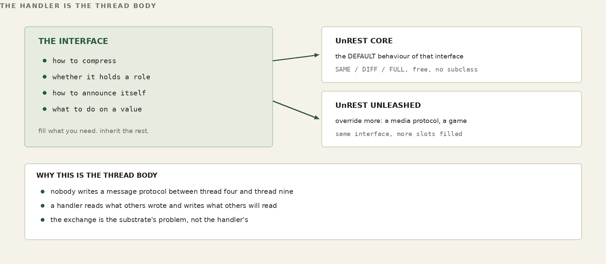
WORKED EXAMPLE — Which slots a handler fills
handler codec slot election slot lifecycle slot JSON / XML implemented — (inert) — (inert) SotF media implemented* implemented implemented databasehost — (no-op) implemented implemented boardgame — (no-op) implemented implemented * media overrides the codec slot to manage a live stream
Learns a template from a request or reply, extracts the dynamic values against it — the URL query parameters and any body fields, merged into one ordered set — and rebuilds the far side from template-plus-values. A content handler — JSON, XML, HTML, text — lives almost entirely here; this is where its knowledge of its own format becomes SAME/DIFF/FULL. The media protocol overrides this same slot to manage a live stream. A handler with nothing to compress leaves it inert and pays nothing.
One method scores a single candidate, one evaluates a slate and picks. A handler that names a role overrides these to take part in the deterministic election. A content handler names no role and inherits the empty defaults; it is never a candidate, and the election machinery never special-cases it. The role is one field on the class; everything follows from whether it is set.
Where the split/merge story comes home. A role handler inherits a real lifecycle: an advertise method that publishes this node's capability for the role into the shared space, and a hostReset method — the per-handler reconcile fired whenever the ground shifts (a boot, a merge, the database host floating to a new node). Re-advertising capability is its common job, but it is general: it is each handler's hook to re-establish whatever tuples its own code needs in a database that may have just moved underneath it (Part X, “Re-establishing Memory”). Advertising is a dual write — onto the deterministic control name where the election reads its inputs, and onto the floating data name where ordinary consumers see it — so the very fact that a node can host a role is itself a tuple in shared memory, put there by the handler, scored by everyone. The node runs its capability probe once; each handler folds any service-specific facts its own probe gathers into that picture — the media handler, for instance, adds whether OpenCV2 is present — and publishes the result as its <role>/capability tuple. Nothing is handed between components: the capability lands in the tuple space, and the election reads it back from there. As with everything in FrogNet, the exchange is through the shared memory, never a value passed hand to hand. The published tuple — shared base plus that service's own checks — is the complete picture the election in Part V scores (the fields are catalogued in Appendix A).
A content handler barely uses this interface — it fills the codec slot and takes the defaults for everything else. The interface earns its name at the other end of the range, where you implement a genuinely new protocol. Two do, and they are deliberately opposite, which is the proof: the same handler shape spans both.
SotF — Song of the Frogs — is the adaptive media protocol, the hot path. It overrides the codec slot, but for SotF that slot does not compress a body; it manages a live stream — video and audio carried as opaque frames — with delivery classes (some frames must arrive, some may be dropped) and an adaptive ladder that steps quality down from full video toward audio and then text as the link degrades, and climbs back as it recovers. It is real-time and lossy by design, and it rides its own channel sets so it never blocks, or is blocked by, anything else. It also names the media-host role, so the election places it on a capable, on-wire box.
The game protocol is the opposite extreme, and it shows what UnREST is when there is no stream at all. Take the simplest turn-based game there is — tic-tac-toe. The board is one small value in the shared working memory: nine cells and whose turn it is. A game handler is not a codec and not a forwarder — it is the authority. A move arrives as an ordinary request carrying _game; the handler reaches into that shared memory, checks it really is your turn, marks the cell, looks for three in a row, and writes the board back — then it sits until the next move. No stream, no delivery ladder, no convergence machinery: turn-based and slow by nature, the game needs none of it. You read the board when your turn comes, exactly the way the monitor reads a sensor.
WORKED EXAMPLE — A move in tic-tac-toe is a write to shared memory
the board is one tuple at databasehost.frognet:
table "kitchen-1" turn: X
cells: X | O | .
. | X | .
O | . | .
X moves — an ordinary POST carrying _game:
{ "_game":1, "game":"tictactoe", "table":"kitchen-1",
"op":"move", "cell":8 } # bottom-right
the game origin (the authority) checks it is X's turn, marks
cell 8, looks for a line, writes the board back, sets turn:O.
O reads the new board when it is O's turn.
That is the purest expression of “exchange memory, not messages”: a whole multiplayer game as reads and writes of one shared board, with the authority — not the wire — enforcing the rules. Tic-tac-toe is only the smallest one to hold in your head; the same _game machinery runs FrogNet's real games — connect four, reversi, backgammon, hearts, liar's dice — each just a different rulebook over the one shared-memory protocol.
That board game is also where a comfortable assumption comes back to bite, and the bruise is worth showing, because it is the whole thesis in one table. Take backgammon — a real game in the set above — and count the bytes a full forty-two-move match puts on the wire three different ways.
WORKED EXAMPLE — Backgammon on the wire — three ways to spend a game
a 42-move match — total bytes that cross the wire: conventional messages 6,690 B ~152 B/move, flat naive memory (whole tuple) 40,011 B 292 -> 1,619 B, GROWS bounded-difference budget 1,981 B 163 B, then ~45 B flat budget vs messages 3.4x cheaper budget vs naive memory 20x cheaper an unchanged re-assertion is a 21-byte SAME
Read it from the middle row. Done the naive way — hold the whole board-and-history as one value and re-assert all of it every move — “memory” is worse than plain message-passing, because it re-ships a structure that only grows. “Exchange memory, not messages” does not win the wire on its own; on its own it loses. What wins is the budget: send a bounded difference against a template both sides already hold, and keep the accumulated history resident in memory rather than on the wire — the freshness decomposition BLDC-1 is built around (Part IX). That is the gap between forty kilobytes and two for the same match, and an unchanged turn collapses to a four-byte SAME that message-passing has no equivalent for at that price. These are a first-order model on real frame sizes, not a packet capture — they attest the shape of the advantage, and the shape is the point: the paradigm label is free; the budget is the engineering.
That is the range the one handler interface spans — a turn-based game at one extreme, a real-time media stream at the other (next) — built by filling the same slots with entirely different behavior. The defaults belong to FrogNet; the extensions are where the protocol you actually want gets written.
FOR THE GUILD
This is the widest door in the system, and the most obviously unfinished thing behind it. Every format FrogNet does not yet speak is three methods away: what shape is this document, what are its values, how do I put it back together. Binary telemetry off an instrument. A protocol nobody outside your industry has heard of. Whatever your equipment actually emits, which is very likely not JSON.
Two doors. To talk about it — this book lives in a public repository and its Discussions are open at github.com/FawcettJohnW/FrogNet-Living-Network/discussions; no licence is needed to argue there. To build on it, the licence page is fawcettinnovations.com/license — ask, and if you want to work on something, say so and say which. The questions are optional and the licence does not depend on them.
And a warning that is also an invitation, because it is the part most in need of a second pair of hands. Dispatch is uniform -- one registry, one lookup, no branching on type. Detection is not. The code that decides which handler a body belongs to is a hand-ordered chain of tests, edited by hand, in order, every time a format is added. It is the one seam in the design that is not polymorphic, and it should not stay that way. There is also a second, older schema learner still sitting in the tree that nothing calls and that would do the wrong thing if anything did. Neither is hard. Both are exactly the kind of work that never rises to the top of anybody's list and quietly costs everyone who comes after.
FOR THE GUILD
The classifier is the crudest thing in the pipeline and it is deliberately empirical — Content-Type is a weak hint and the body decides, resolving to json, xml, html, text or raw. Two different jobs open off that. Detection can be better: a body that falls through to raw learns nothing and diffs against nothing, so every send of it is a FULL. And the language set is small because the general case needed five. A protobuf handler, a CBOR handler, a CSV handler, a handler for one industrial or medical format — each is self-contained, touches nothing else, and a domain-tuned codec can beat the general one badly because it knows what the fields mean rather than only what shape they are. If you own a data format professionally, you are the right person to write its handler, and you never have to read the election code. The proof is a corpus of real bodies with FULL/SAME/DIFF measured before and after.
Two doors. To talk about it — this book lives in a public repository and its Discussions are open at github.com/FawcettJohnW/FrogNet-Living-Network/discussions; no licence is needed to argue there. To build on it, the licence page is fawcettinnovations.com/license — ask, and if you want to work on something, say so and say which. The questions are optional and the licence does not depend on them.
Put the last two ideas together and you get the property that makes FrogNet whole again after it tears. When the network splits and an island elects a fresh database host, that host's FrogNet Memory starts essentially empty — a brand-new scratchpad with no idea who can do what. It does not stay empty, and it needs no replication log. Every role-bearing handler on every node in the island runs its lifecycle reconcile — hostReset — and each re-advertises its capability into the new space. What fires it is not the merge reaching out to them; it is each node noticing for itself, which is the next section.
WORKED EXAMPLE — Island A repopulates its own scratchpad
split — ShopBox 10.84.84.1 is now island A's database host. its transient DB is empty. the merge fires hostReset() everywhere: HomeBase.databasehost.advertise() -> capability tuple -> new DB ShopBox.databasehost.advertise() -> capability tuple -> new DB HomeBase.mediahost.advertise() -> capability tuple -> new DB within a beat, island A knows who can host what — rebuilt from each frog re-asserting itself, NOT copied from the old database.
Not by copying the old database — that may be on the far side of the break, unreachable — but by every participant re-asserting its own current truth into the new shared memory. The capability to re-establish the critical state lives in the handlers themselves, as a method, and fires automatically on the same event that tore the network. Because every role wears the same lifecycle, recovering a partitioned island's memory is not a feature anybody wrote a recovery routine for. It is the ordinary advertise every handler already does, fired again at the right moment. The same method that introduces a node the first time reintroduces it after a split. There is no separate path for disaster, because in FrogNet a split is not a disaster. It is just Tuesday.
The split is only the loudest trigger. The same hostReset fires on any reassignment of the database host — a merge, a node floating in, a fresh boot — because to a handler they are indistinguishable: the ground moved, and the data host it was writing to may not be the one it writes to now. Re-advertising capability is the most common thing a handler does here, but the method is general. It is each handler's hook to re-establish whatever tuples its own code depends on into a database that may have just changed underneath it — the control envelope of a live call, a working set, a service's standing state. A handler that needs nothing overrides nothing and pays nothing; a handler that needs its world back rebuilds it here, on the one event that tells it the world moved.
One property to design around: the writes hostReset makes land on a database that has never seen them, so the first write or read of each shape crosses FULL — the new host holds no template or reference to diff against — and only then collapses to DIFF and SAME as the exchange settles. The media handler leans on this on purpose, nulling its control reference so the next frame re-FULLs the control plane against the new host. That cost is also the boundary of the mechanism: hostReset re-establishes current state, not a log. It is not a historical recorder and is not meant to be one. You could repopulate history through it — nothing stops you writing a hundred past tuples into the fresh scratchpad — but you would pay a FULL for each on the way in, and you would still be keeping history in a store designed to hold only the present. Re-establish what your code needs to run; reach for a durable store when you need to remember.
Every handler that names a role inherits two methods it almost never overrides: advertise(), which writes that role's capability into both planes, and hostReset(), which calls it again. That is the whole of the lifecycle slot, and its plainness is the point.
A content handler — JSON, HTML, text — inherits both and does nothing with them, because the inherited code checks whether the handler names a role and returns immediately if it does not. The difference between a handler with a lifecycle and one without is not an overridden method. It is a value on the object. There is one implementation of advertise in the entire system, and every role gets it identically.
The interesting question is what calls hostReset(), and the answer is the part most worth understanding, because it is the opposite of how this is usually built.
Nothing calls it on a node's behalf. No coordinator announces that the database host moved. No component notifies another component. Instead, every process that holds live modules — the daemon, the proxy, the Communicator shell, each bundle application — already has a loop, and in that loop it does one trivial thing: it resolves the control name and compares the answer to the answer it got last time. If the address is different, it reconciles its own modules. If it is the same, it does nothing at all.
WORKED EXAMPLE — The whole detector
resolve databasehost_control.frognet
same as last tick? -> nothing happens
different? -> every module in THIS process
re-states what it is
first observation ever -> record it, do nothing
(the process already did
its startup publish)
The comment in the source says it better than a paraphrase would: nothing is pushed — the shared truth moved and we noticed. There is no notification protocol here because there is nothing to notify. The fact is in the shared memory; a process that cares looks.
Notice what hostReset() does not take: any indication of why it was called. Boot, merge, a float, a manual poke — the method cannot tell them apart and does not want to. It has exactly one behaviour: publish what this node currently is, to wherever the coordination plane currently lives.
That is what makes it safe to call from anywhere, at any time, as often as you like. A reconcile that behaved differently depending on what triggered it would need every caller to know which situation it was in — and every caller getting that right is a much larger promise than any of them can keep. One verb, one behaviour, no arguments: re-state yourself.
And here is where the object model stops being an inheritance tree and becomes something more useful. The thing that republishes every role's capability on a reconcile is not a handler. It does not subclass the handler interface. It simply has a hostReset(), and that is enough for the watcher to call it.
So hostReset is not a method on a class hierarchy. It is a protocol — a verb any object in any process may answer to, and the watcher fans it across whatever modules that process happens to hold, without knowing or caring what they are. Add a module to a process and it participates in reconcile by implementing one method with no arguments. Nothing registers it, nothing is wired, no interface is declared. It answers the verb, so it gets called.
This is the same shape as everything else in FrogNet, one level down from the wire. Components do not hold references to each other and do not call each other. One writes a fact into the shared space; another, elsewhere, reads facts and acts. The only place one piece of code directly invokes another is a method call inside a single process — and even that is a virtual call through an interface, which is to say the caller does not know what it is calling either.
Strip FrogNet down to one sentence and it is this: get the most meaning across the least wire. That is the whole job. Discovery does it. The games do it. The floating database does it. Every one of them is, under the costume, a bandwidth-reduction engine, and every one reduces bandwidth the same way — by exchanging memory instead of messages. Both sides hold the same structure; the wire carries only the difference; the scaffold that never changes never crosses again. Send only what changed, fall silent when there is nothing new to say. That single move pays for the entire network.
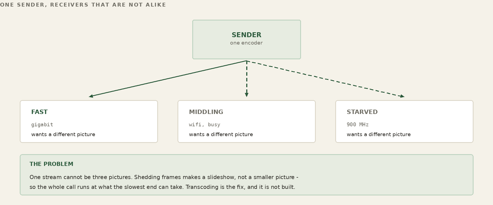
Song of the Frogs is the same problem. Reduce what crosses the wire. But it is that problem wearing different clothes, because the payload breaks the trick that carries everything else.
A backgammon board settles. So does a sensor reading, a presence beacon, a route table. Diff a thing that settles and the diff shrinks toward nothing — that is why diffing it is cheap. A live video frame does not settle. It is a firehose, not a structure: thirty times a second the whole world has moved a little, and there is no reference against which the difference goes quiet. You cannot converge a firehose to zero. The memory-not-messages move that carries the rest of FrogNet does not carry the hot media at all.
So we are handed the same goal and told the usual tool will not reach it: bandwidth reduction, on a payload that refuses to converge. What do we actually have to work with? Two things.
The first is FrogNet Memory — the same shared memory that runs the rest of the network, reached the same way, by the same UnREST calls. A call is not special: it is state in the same place everything else lives. Because while the frames never settle, everything about the call does. Who is in it, which codec, what layout, which rung of the ladder each leg is riding — all discrete, all settling, all riding the tuple space exactly like a game's seats or a host election. The negotiation re-sends only what changes, so it costs almost nothing. We keep control where control is cheap.
The second is the ability to stand up a separate pair of data channels — one carrying our frames out to the mediahost, one carrying the call back — a media path of our own, distinct from the tuple plane, that the frames ride as pure data: non-blocking, send-or-drop, newest-wins, no queue waiting to go stale. This is where the bandwidth actually falls. We do not reduce the firehose by diffing it; we reduce it at the source, sending only the rung the link can carry and stepping down the instant it cannot. The tuple space negotiates; the channel pair adapts. Control persists; media degrades.
That split — cheap shared-memory control on one side, adaptive streaming data on the other — is the whole of Song of the Frogs. Same goal as everywhere else in FrogNet, reached by the one road left open. The rest of this chapter is how we build each side, and how the two stay in step.
To see why this is built the way it is, set it beside the way real-time media is usually carried — because at almost every joint, SotF turns the other way.
State. Conventional real-time stacks are message machines end to end. Signaling is an exchange of messages — SIP offers and answers, SDP blobs, ICE candidates — and the media is a river of RTP packets, each one sent, each one gone. State is something you announce, repeatedly, and hope arrives. SotF splits the call in two and treats each half as what it is. The control half — who is here, which codec, what layout, which rung — is discrete and settling, so it lives in the tuple space as shared memory: both sides hold the same picture, the wire carries only the change, and when nothing changes nothing is said. Only the media half streams. We announce the call once and remember it; we do not re-narrate it every frame.
The data path. The hardest habit to break is reliability. TCP delivers every byte in order — and to do it, it retransmits, and the retransmitted frame is already stale by the time it lands, and the queue behind it grows, and latency climbs until the call is a slideshow with a backlog. The usual escape is UDP with a jitter buffer at the receiver, trading a fixed slice of delay for smoothness. SotF refuses the trade. The data channel is non-blocking and send-or-drop: if the socket is not ready this instant, the frame is dropped, not queued, and the next one — newer, truer — takes its place. Newest-wins, no backlog, no stale delivery. We would rather lose a frame than fall behind, because in a conversation a late frame is a lie.
Adaptation. When the link tightens, a conventional stack reaches for a continuous knob: congestion control estimates the available bandwidth and nudges the encoder's bitrate up and down, or it pre-encodes a shelf of quality variants for the client to pull from, or it ships layered streams and asks a forwarding server to pick a layer per viewer. SotF reaches for a staircase instead of a dial. The ladder is a small set of named rungs, and the source simply sends the highest rung the link sustains — stepping down framerate first, then resolution, then shedding video for a mono voice bed, then text, then a single presence bit — and climbing back on its own when the link recovers. Each leg is driven by its own measured bearer, so a congested peer degrades only itself and never drags the room down with it; hysteresis keeps it from flapping at the edges.
The server. Traditional conferencing leans on fixed, provisioned iron you point at by address: an SFU or MCU in a data center, a TURN relay to punch through NAT, all of it standing whether anyone is calling or not. SotF's mediahost is an elected role, not a box. It floats to a capable node, one per LAN, and exists because a call needs it. It mixes audio as the sum of the others and video as a grid of the others, minus your own image, composed per recipient. Nothing is provisioned; the fabric elects what it needs and lets it go when the need passes.
Failure. This is the sharpest difference, and the one that matters most in the field. Push a normal call past what its congestion control can hold and it does not degrade gracefully — it freezes, it stalls, it drops, and coming back is a re-negotiation from scratch. SotF has no failure floor, because the floor is presence. The same call walks itself from high-definition video down to a grey murmur of voice, down to text, down to a one-byte "I am still here," and back up the moment the link allows — without restarting, without re-dialing, without the user lifting a finger. The call does not die. The medium changes under it.
None of this makes the conventional stack wrong. It is mature, interoperable, and built to survive the open, adversarial internet, where you do not own the path and cannot elect anything. SotF makes a different bargain: it gives up universal interop and standards compliance, and in exchange it gets sovereignty over a fabric it controls end to end — a flat plane where control is shared memory, roles can float, and a call can fall to a heartbeat instead of dying. On someone else's network those would be luxuries. On ours they are the point.
-------------------------------------------------------------
Traditional Song of the Frogs
-------------------------------------------------------------
State messages, re-sent shared memory, diffed
(SIP/SDP/ICE) (memory, not messages)
Data path TCP retransmit, or send-or-drop,
UDP + jitter buffer newest-wins, no queue
Adaptation continuous bitrate discrete ladder;
knob / variants / framerate-first then
layered + SFU resolution; per-leg
Server fixed SFU/MCU/TURN elected mediahost role,
you point at floats per-LAN, mixes
minus-self
NAT/address ICE/STUN/TURN dance resolve a role name on
the flat fabric
Failure freeze / drop, then degrades to a presence
re-negotiate bit, climbs back; never
dies
-------------------------------------------------------------
The pattern under all of it: traditional networking is optimized for a world you do not control, so it pays — in messages, in buffers, in standing servers, in brittle failure — for assumptions that do not hold on your own fabric. When you own the whole problem, stop importing the compromises built for someone else's.
We did not invent a transport for this. The media channels are raised the same way the proxy and daemon raise theirs — the same channel bring-up FrogNet already uses everywhere else. Whatever we did with the data path, it would stand on machinery the network already trusted, not a parallel stack built beside it.
The honest way to design something is to start from the known solution and make it prove it belongs. For real-time media the known solution is sequenced UDP: fire datagrams, number them, let the receiver reorder what it can and shrug at what it can't. So the first question was not "how do we do sequenced UDP well." It was: do we need UDP at all — or was UDP a band-aid for some other problem?
It was a band-aid. Nobody reaches for UDP because datagrams are wonderful; they reach for it to escape what TCP does to a live stream. TCP insists on delivering everything, in order, and to keep that promise it retransmits and it blocks the line behind a missing piece — exactly the wrong instinct when the missing piece is a video frame already overtaken by three newer ones. UDP is how you buy out of that: give up the guarantees and you stop waiting. The guarantee was the wound; UDP was the bandage.
We knew that bandage well, because we had built it ourselves. Sequenced UDP is what you reach for on game servers, and it mostly works — right up until load, where the hand-rolled ordering and pacing and loss-handling bolted on top start to fray, and what was smooth in the demo comes apart in the room. Nobody is perfect. But "mostly works, falls apart under load" is not a foundation; it is a warning.
So instead of doing sequenced UDP better, we asked what we actually wanted from it, and the want turned out to be small and exact: never wait. And the reason waiting is fatal has a name — head-of-line blocking. A blocking write is a head-of-line block: when the link cannot drain the send buffer, the write stalls, the frame in your hand cannot leave, and every newer frame stacks up behind that one stuck frame — the oldest, and already the most useless — sitting at the head of the line, holding up all the rest. That is the slideshow-with-a-backlog from a page ago, named properly. It is also, exactly, the thing people invoke UDP to escape.
So we escaped it without UDP. The answer was a non-blocking TCP socket: the write returns "not now" instead of stalling, so the frame that cannot go is dropped and the newest one takes the wire — and there is no line for a stale frame to sit at the head of. No head, no block. Take the connection we already raise for the proxy and daemon, refuse to ever let a send block on it, drop on not-ready, and you have UDP's one real virtue — never wait — on a channel you did not have to reinvent. What we choose to send still arrives whole and in order; what we cannot afford, we never send. We kept the reliability and threw away the blocking. Once we stopped making the wound, we no longer needed the bandage.
Make the video frames droppable and something else falls out for free: you can rank them. If a video frame is allowed to die, then audio does not have to — and the moment audio and video stop being equal, you can protect the one that carries the conversation. Audio is the gate. A call with a frozen or stuttering picture and clean sound is still a call; a crisp picture over broken audio is nothing. So we spend the link on sound first and let the image take what is left. When the bearer tightens the video can fall behind, tear, even drift out of sync with the voice — and you can still hear, which means you can still talk, which means the call is still a call.
The dropping is not indiscriminate. Inside the video itself there is a frame the rest depend on — the keyframe the deltas are measured against — so that one is protected too, alongside the audio; what we shed are the in-between frames, the cheap perishable deltas whose only job was to be replaced. Protect what the stream cannot live without; drop what was going to be overwritten anyway.
But the particular trick is not the point. The point is the shape of what just happened. Real-time media is old, studied, everywhere — it is something the industry should have made optimal a long time ago. It was not, and the reason is that the transports never handed you the choices. A reliable byte stream treats every byte as sacred; a best-effort datagram treats every byte as disposable; neither one lets you say this byte matters more than that one, or this leg is poorer than that one, or send the picture only once the sound is through. Those are the levers optimization actually needs, and the standard transports kept them bolted shut.
SotF pried them open. Splitting the call into a shared-memory control plane and a droppable data plane did not, by itself, optimize anything — it gave us the options we had been missing: which bytes to protect and which to discard, which rung each leg rides, when to step down and when to climb back. Options are what you optimize with. Hand an engineer who knows the medium those levers and stand back, and the stream that was supposed to have been optimal all along finally can be — not because of one clever stroke, but because, at last, there is something to turn.
Step back from the sockets and look at what these moves add up to, because it is worth saying plainly: this was not supposed to be available. A stream that is reliable in what it delivers yet never blocks. A call that survives the near-total loss of its link — that thins to a single byte of presence and thickens back to high definition without dropping, without re-dialing, without the user ever knowing it happened. A media server no one installed, that elects itself onto whatever node is fit and dissolves when the call ends. Control that is stated once and then falls silent. Each of those, under the ordinary way of thinking, sits somewhere between hard and forbidden.
They were forbidden by the traditional networking model itself, and above all by one of its founding constraints: that calls are stateless. In a stateless model nothing about the conversation is remembered off the wire — each exchange stands alone, no endpoint holds an enduring picture of the other, and so the only thing carrying the call from one instant to the next is the connection. Statelessness is what forces the assumption everything brittle rests on: that the connection is the call, that if the bytes stop the conversation is over. The frantic retransmits, the standing servers, the re-negotiation after every stall — all of it is the price of defending a pipe as though the pipe were the thing itself, because under a stateless model the pipe is the only thing there is.
So we did not work around that model; we replaced it. UnREST is the deliberate inversion of the stateless call — a shared, remembered state that both ends hold — and the tuple space is the infrastructure that keeps it. The call is not the pipe; it is a structure both ends remember, held in shared memory whether or not a single frame is moving this instant. Once the conversation lives in memory instead of on the wire, the wire is free to do whatever the moment demands — drop, degrade, fall to a heartbeat, go dark, come back — and the call persists across all of it, because the call was never the bytes. Nor does it need certainty to do so: a noisy reading or a half-finished merge resolves by current-value-wins and settles, where a stateless exchange would have to know now or error out. The fabric supplies the other half: the host that floats to whoever can carry it, the flat plane you actually own, the roles that appear and vanish on demand. The new infrastructure is more flexible for one plain reason — the call's existence no longer depends on an unbroken connection. Between them they do not just make a faster stream; they open a different category of possible. The things the old frame called impossible were impossible only while the connection and the conversation were the same object. Pull the two apart, keep the conversation in shared memory, and one by one the impossibilities turn into engineering.
Here is the keystone — the thing to carry out of all of this if you carry nothing else. Because the system is stateful, because control lives in shared, remembered memory and not inside the exchange itself, the data and the control can be pulled apart and run as two separate planes. In a stateless model they cannot: with the call's state living in the messages, control is welded into the very stream it governs, and nothing else holds the call together. Statefulness is what lets the two come apart.
Once they are apart, each can be optimized for what it actually is, with no regard for the other. Control wants to be exact, ordered, and remembered — say a thing once, agree on it, never lose it — so we give it the tuple space, where it costs almost nothing and never goes wrong. Data wants to be fast and disposable — newest first, never wait, gone the instant it is stale — so we give it the non-blocking channel, where it is allowed to be ruthless. Neither plane has to compromise toward the other, because they are no longer the same wire.
That refusal to compromise is the whole game. It is why we can drop a frame, in its entirety, the moment we wish, and lose nothing that matters: the frame carries pure perishable media and not one bit of control, so when it goes, only pixels go. The session, the codec, the layout, the rung, the very identity of the call — all of it is elsewhere, safe in memory, untouched by anything we do to the data stream. Drop a thousand frames and the call is still the call. What we actually choose to drop and what we choose to spare — the perishable deltas shed, the keyframe and the audio kept — is policy laid on top of that freedom, and it can be anything we like precisely because the transport underneath forbids nothing. In a stream that muxes control into its payload you have no such freedom: every frame might be load-bearing, so every frame must be defended, and the defense is the brittleness.
This is the true power of Song of the Frogs, and it deserves saying without decoration: high-speed data, separated from control. Everything else in these chapters fell out of that one cut. The freedom to drop a frame, and so to rank audio over video. The ladder, which is only the data plane choosing how much to send while control records where it landed. The call that thins to a heartbeat and climbs back, because the heartbeat is control and the video was only ever data. The absence of head-of-line blocking, the elected host, the survival through change and ambiguity — every one of them is a consequence of cutting the fast thing free from the careful one. Make that cut, and the rest is not invention. It is consequence.
Be blunt about why this is hard to hear, because the resistance is not technical. The architectures we are setting aside are not merely common; they are held sacrosanct. Stateless request and response. The best-effort datagram for anything that moves fast. The jitter buffer, the retransmit scheme, the congestion estimator, the signaling dance. These are taught as principles, cited as authority, defended as though they were laws of networking. They are not laws. They are artifacts — correct answers for a network architecture that existed forty years ago, and that is no longer the only way to do things.
Look at the base they were derived from. The early internet was scarce and unreliable in ways that are easy to forget now: bandwidth was precious, links were genuinely lossy, the machines at the edges were too weak to hold much of anything, latency was a wall you could not climb, and two distant endpoints had no way to share durable state — so the only safe assumption was that they shared nothing. Every one of the sacrosanct choices is a sensible response to exactly those conditions. Statelessness is what you choose when you cannot keep state, or cannot trust the network you keep it on. Best-effort datagrams are what you reach for when the link is too lossy and the processor too slow to do anything cleverer. The jitter buffer exists because the path jittered and you had no other recourse. None of it was wrong. It was right, for that base.
That base is no longer the only one. Bandwidth is cheap, the device in your hand outclasses the machines those protocols were shaped around, and — the part the orthodoxy never updated for — you can build a fabric you actually control, where two endpoints can hold shared, durable state. The ground moved; the architectures did not. They calcified into best practice, which is exactly how a frozen response to an expired constraint gets handed down as a principle, generation after generation, long after the constraint that justified it has dissolved.
Here is the consequence not to be missed: when you replace the base, the algorithms built on top of it do not merely get faster — they want to be rewritten. They were contorted to route around constraints that are no longer there, and once the constraints lift, the contortions are just dead weight. A whole region of algorithmic work opens up, and most of it screams for refactoring — the workarounds can come out and something cleaner and stronger can go in. Nowhere is this louder than in video streaming.
The accepted way to move real-time video is the sequenced-but-maybe shotgun: UDP, fire the datagrams, number them, hope. We abandoned it — not for a worse-but-simpler option, but for the one attribute the shotgun never had: a socket that will tell you it cannot send right now. EWOULDBLOCK is not an error to be swallowed; it is the lever. It is the network being honest about this exact moment, in time for us to do something intelligent with the truth — drop the stale frame, send the fresh one, step the ladder, protect the audio, record in shared memory where it landed. With that one honest signal in hand we no longer have to choose between optimizing and quality. We optimize and build a higher model — sharper when the link allows, and gracefully, deliberately lighter when it does not, fitted to the conditions that actually exist rather than the worst case the old base forced everyone to assume. The shotgun could never do that. It was never listening.
The argument is made; now the machine. Everything below is the cut put into practice — a shared-memory control plane, a ruthless data plane, and one handler holding both honest.
A call has one brain and two mouths. The brain is the handler — a single UnREST handler that owns the whole call — and it speaks through two planes that could not be more different in temperament.
The control plane is FrogNet Memory. Through it the handler states the call and keeps it stated: the session, the participants, the codec, the layout, the rung each leg is on. These are written once and held; nobody re-announces them; they are simply true until they change. Exact, ordered, cheap — the careful mouth.
The data plane is the channel pair, raised the same way the proxy and daemon raise their connections, so the media inherits the network's existing transport instead of a new one bolted on the side. Across it the frames stream as pure payload — newest first, never waiting — the fast mouth.
The one subtlety worth the ink is how you make a TCP send never wait, because the naive move is wrong. Set the whole socket non-blocking and you do get a send that returns rather than stalls — and you also break the receive loop, which now raises instead of blocking the way the rest of the code expects. We learned this the loud way, on Windows, where it surfaced as a blocking-mode error on a socket we had quietly made non-blocking under everyone's feet. The fix is narrower than the reflex: leave the socket able to block on receive, and gate only the send on writability. Before writing a frame, ask the socket whether it can take one right now; if it can, send it; if it cannot, drop it and reach for the next, newer frame. The send never blocks because we never call it when it would. One handler, two planes, and a single careful seam between a socket that must stay patient to listen and a send that must never wait to speak.
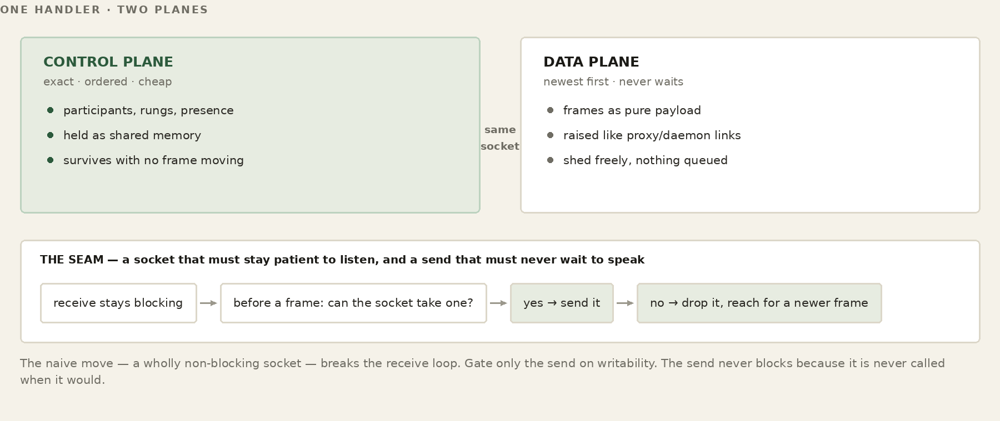
There is no media server in the building. There is a role — mediahost — and it floats, by the same election that places every other role in FrogNet, onto whichever node on the LAN is fit to carry it. It exists because a call needs it and dissolves when the call ends; nobody installs it, nobody points at it, and if the node holding it goes away the role simply re-forms somewhere else.
What the mediahost does is fan-out, and the shape of the fan is the whole economy of the call. Each participant sends one uplink. The host composes, for every recipient individually, a personalized mix: audio summed from all the other participants, video laid out as a grid of the other participants — minus your own image and your own voice, because nobody needs to be sent themselves. A rung is encoded only while someone is actually on it: the first request for a rung starts it, the last to leave stops it, and one encode feeds every leg that wants that rung. The per-leg choice that always applies is the cheapest and most useful one — whether this recipient is taking video or only the audio bed — so a phone that asked for sound alone is never charged for pixels it cannot show.
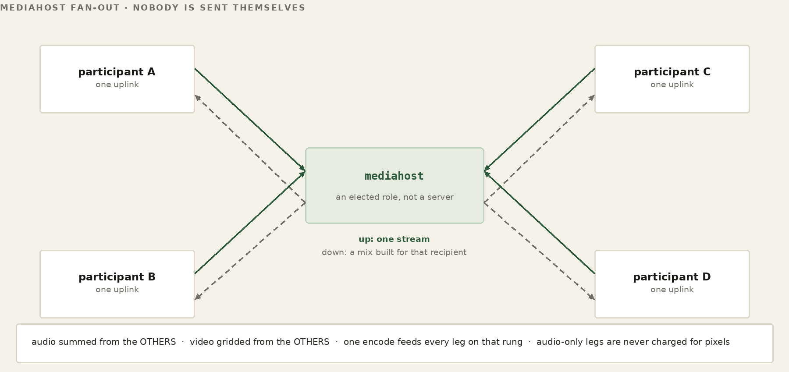
When the link cannot carry the richest rung, the call does not stop; it descends a ladder of named rungs, each one a smaller promise than the one above, none of them silence. Mono audio under every video rung, color at the top two and grayscale at the third, at a framerate the sender holds constant (24 by default) so that a step down is a step in picture, not in motion:
rung carries needs --------------------------------------------------------------------- L7 CHORUS 1280x720 color video + mono audio camera L6 ENSEMBLE 854x480 color video + mono audio camera L5 DUET 640x360 GRAYSCALE video + mono audio camera L4 SOLO mono audio (video shed) mic L3 VOICE mono audio mic L2 WHISPER plaintext text -- L1 BEACON token vocabulary -- L0 PULSE presence -- --------------------------------------------------------------------- video target bitrates: 1.2 Mbps / 600 kbps / 300 kbps audio on every rung that carries it: 16 kHz mono s16le
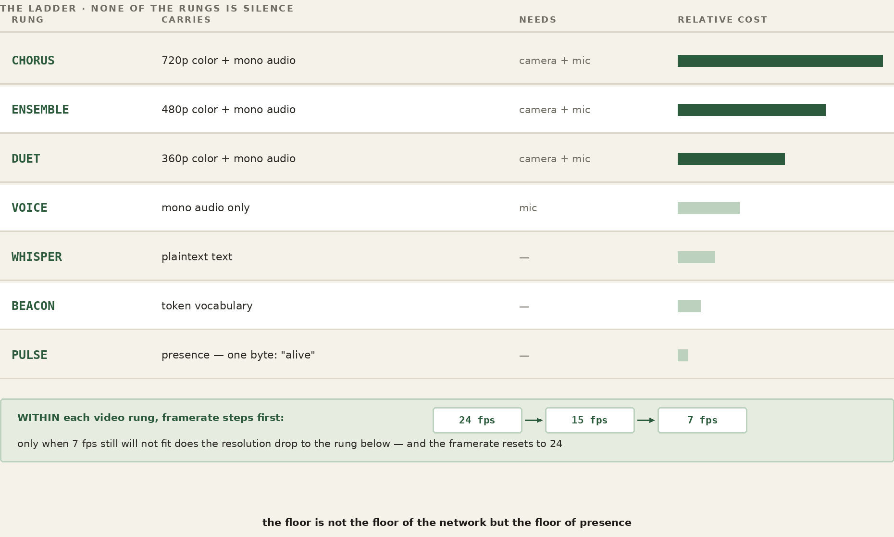
Two things choose the rung, and they are not the same thing. The ceiling is the highest rung this machine may source — set by what it has and what it was told to use. A camera and a mic ceiling at CHORUS. A video rung needs a camera and only a camera: kill the audio and the ceiling stays at CHORUS — the picture goes out with no audio bed under it, and the far end is told there is none. A microphone alone, or a deliberate no-video, ceils at SOLO, the top audio-only rung. Neither, and the ceiling is WHISPER. The bearer is what the link will actually sustain right now. The rung we send is the highest one no greater than the ceiling and no greater than the bearer — the richest thing we are both allowed and able to deliver. WHISPER, BEACON, and PULSE need no hardware at all, which is why the floor is never the floor of the network but the floor of presence: a call can always find a rung, even if the rung is a single byte.
Nothing estimates bandwidth here. There is no probe, no bitrate guesser, no model of the link — there is the data plane's own honesty. When a send cannot go, the socket says so, and that refusal is the only congestion signal we need or trust: the network telling us, in real time and without a guess, that it is full. Drops accumulating means step down; the link going quiet and accepting frames again means there is room to step back up.
The descent is framerate-first. Hold the resolution and thin the motion — 24 to 15 to 7 frames a second — because a slightly stuttery sharp picture reads better than a smooth blurred one, and only when 7 fps still will not fit do we drop to the next resolution and reset the framerate to 24. Climbing back reverses the path. A band of hysteresis sits between down and up so a single bad instant does not trigger a cascade and a single good one does not provoke a premature climb: step down readily, climb back only once the link has been calm for a while. And every leg does this on its own, against its own bearer, so a peer on a failing link walks itself down to voice while everyone else holds high definition — one bad connection degrades only itself and never drags the room down with it.
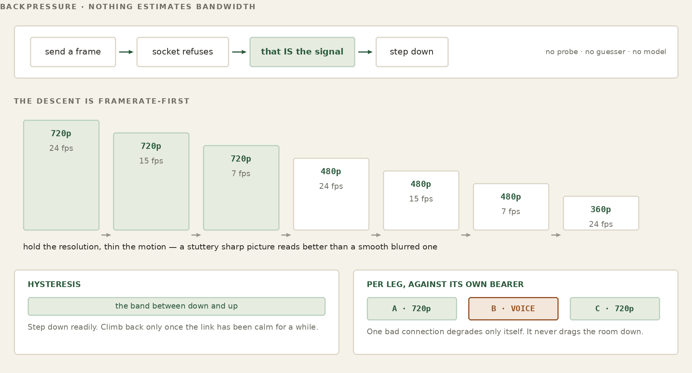
Put the pieces together and you get the property the whole chapter has been promising. A call cannot fail, because failure has been defined out of it. The control plane holds the call as shared memory whether or not a frame is moving; the data plane is free to shed everything down to a single presence bit; and the ladder guarantees that between high definition and that one byte there is always another rung to stand on. So the call rides its link down — chorus to ensemble to a 360p murmur to voice to text to a beacon to the bare pulse of still here — and rides it back up when the link returns, with no restart, no re-dial, and no moment at which it was ever gone. The heartbeat is control; the video was only ever data; and the call was never the bytes.
WATCH
Proof It Works — the 900 MHz call, with the did/would counter on screen
WORKED EXAMPLE — A working call, conducted over the link being demonstrated
bearer 900 MHz radio, ~1 Mbit ceiling carried 1280x720, bidirectional measured 22 fps, no dropped frames latency no perceptible delay either direction did / would ~89% of bytes never sent
That was not a demonstration recorded over a good link and described afterwards. The conversation in which those numbers were read out was itself running over the radio, both directions, while the participants discussed what they were seeing. The honest version of a claim about degraded links is one you make on a degraded link, and doing it on a conference call under ideal conditions would have proved nothing at all.
Two things in that block are worth separating. Twenty-two frames a second at 720p inside a one-megabit ceiling is the headline; the absence of the several-second delay that everyone now expects from a video call is the part practitioners notice first, because latency is what a naive adaptive scheme buys its bitrate with. And the did / would figure on the call bar is a running estimate, labelled as one wherever it appears — bytes that never had to cross, against published figures for the same session, not a packet capture.
The limitation of the run is stated by the people who ran it: the endpoints could not be separated by the five hundred feet that would have made the radio path interesting as well as the protocol. That is a smaller proof than it could have been and it is written down as one.
None of this is a diagram on a whiteboard; it was put on real radios over real distance, and the demonstration is worth naming precisely because of how the two halves of the work met in it.
Two sources in Seattle fed a call out across the FrogNet overlay, through a broker relay, to a node in New York sitting behind a roughly one-megabit 900 MHz radio backhaul, and the result was fanned back to Seattle to a screen. The hardware made the link exist where it had no business existing: Dan's RF and antenna work held a usable path through a 900 MHz HaLow radio that a clean lab would have called impossible. The software made the call survive on top of it: the high-definition rung held near a megabit; as the link tightened the ladder stepped the call down on its own; and when the link recovered the call climbed back to high definition in the same session, without a restart and without anyone touching it.
That is the team, stated as the proof states it. Radio and antenna on one side, the stateful media stack on the other, and a real-time call standing up over a link neither half could have carried alone. Hardware reaches; software adapts; and the conversation holds in the middle. That is Song of the Frogs.
FOR THE GUILD
Notice what Song of the Frogs actually is: one object that compresses its control envelope, elects the machine best able to carry the stream, and then deliberately sends the media itself around the compression, because a video frame never repeats and diffing it is pure cost. That shape -- compress the conversation, leave the payload alone, pick the host by what the payload will demand -- is not specific to video. It is what audio wants, what a telescope wants, what a lidar sweep wants, what any sensor producing more data than it produces meaning wants.
Two doors. To talk about it — this book lives in a public repository and its Discussions are open at github.com/FawcettJohnW/FrogNet-Living-Network/discussions; no licence is needed to argue there. To build on it, the licence page is fawcettinnovations.com/license — ask, and if you want to work on something, say so and say which. The questions are optional and the licence does not depend on them.
Exactly one of these exists. Its adaptive ladder was tuned by watching a real call degrade on a real link, which is the only way that is ever done well, and every other medium wants the same treatment from somebody who knows that medium. If you have spent years with a particular kind of signal and have opinions about how it should behave when the link gets worse, that expertise is the scarce thing here. The interface is the easy part.
Everything above is true and none of it is the whole story any more. The ladder in this chapter is the one that was tuned on the radio link; carrying it into a deployed Communicator changed it in five ways worth naming here, because the chapter that details them sits a long way further on and the shape of the thing has moved.
The framerate-first descent described above still holds within a rung. What changed is what decides the rung, and it is no longer a number this end computed — it is what the far end could actually be given. Part XV works through the whole of it.
Everything in these two parts comes down to a handful of choices made differently from the way the web makes them. Here they are next to each other. The left column is what most networked software does; the right is what FrogNet does instead. The application above the line is making ordinary HTTP calls in both columns — the entire difference lives below it.
| Traditional REST | FrogNet · UnREST | |
|---|---|---|
| Interaction | Request then reply, serial. The sender waits for each reply before sending the next. | Many requests in flight at once, fanned in and interleaved on one socket, matched home by sequence. |
| Concurrency | A new connection per request, or pipelining that head-of-line-blocks behind a slow reply. | One persistent socket, a worker pool, out-of-order completion; independent channel sets isolate streams. |
| State | Stateless — every request re-states its full context. | Stateful shared memory — both ends keep a reference; only the difference moves. |
| On the wire | Full request and full response, every single time. | A template learned once, then SAME / DIFF / FULL against it. |
| Compression | The application's job, optional, per response (e.g. gzip). | Infrastructure (BLDC-1), automatic on every exchange, zero application changes. |
| Wire protocol | HTTP/1.1 over TCP, usually wrapped in TLS. | FNWP-1 — length-prefixed, opcode- and sequence-tagged frames on an established socket. |
| Custom behavior | An Apache vhost plus application code: per-endpoint, opt-in, schema-bound. | A custom handler (one class, virtual slots) registered in one registry; matched and triggered automatically, app unchanged. |
| Where it runs | An Apache worker per request, into the application. | The proxy intercepts port 80; a daemon worker pool runs the codec and the handlers. |
| Names | DNS — administered, with TTLs and propagation delay. | /etc/hosts as ground truth, rewritten on every merge; upstream DNS only for off-mesh names. |
| Coordination | Messages addressed endpoint to endpoint. | FrogNet Memory, a Linda tuple space — read and write shared memory by pattern; nobody addresses anybody. |
| Link use | Idle between transactions — dead air on the round trip. | Near-100% duty cycle; the wire stays full. |
| Connectivity | Online-first; disconnection is an error to be handled. | Offline-first; a node is a whole network alone, the mesh an enhancement. |
| Security | Per-service auth; TLS / PKI handshakes on every channel. | Proximity + mesh membership; no per-service TLS on internal traffic. |
The three parts before this one built something that stays alive and holds what it knows. This part is what that does to the person writing code. It is the shortest part of the book and the one most likely to change how you work, because the change it describes is subtractive — it is a list of things you stop doing.
Think about the last distributed bug you chased.
Odds are it was not a bug in what your program was supposed to do. It was a message that arrived twice. A timeout tuned for a network that behaved differently on Tuesday. A service that came back up and rejoined with stale state. A retry that succeeded on the third attempt and left two half-finished things behind it. A schema change that was fine in staging. Something that only happened under load, and only in the environment you cannot attach a debugger to.
You probably found it eventually, and when you did, the fix was small. What took the week was that you could not see the problem — you were reconstructing a conversation from both ends, after the fact, from logs written by people who did not know what you would need.
None of that was your actual job. Your job was the thing the business asked for: the order gets placed, the robot arm goes where it was told, the two people can see each other. Everything else was tax.
Before: a change to what one service knows means a change to what it says. So you version an endpoint, coordinate a deploy order, write a compatibility shim for the old callers, add the field to three schemas, update the mocks in four test suites, and find out in production that somebody was parsing the response with a regex.
After: you put the value in FrogNet Memory. Whoever needs it reads it. There is no announcement, no version negotiation, no deploy order, because nothing was ever describing a conversation — the thing that changed was a value, and a value changing is not an event anyone has to be told about. They look, and it is different.
Before: your integration environment is a small distributed system of its own, and it is down. After: the simulator runs the real discovery, routing and election code against a modelled topology on your laptop, and it does that because none of that code ever asks where anything came from.
Before: 3 a.m., a retry storm. After: there is nothing to retry, because nobody is delivering anything. State is a thing that is, not a message that has to arrive.
The idea underneath is older than computers and you already use it every day.
A noticeboard in a shared kitchen does not send messages. Somebody writes “milk is finished” and it stays written until it stops being true. Nobody retries it. Nobody worries whether you were in the room when it was written. Nobody versions it. If you want to know, you look. If it changes, whoever changed it wrote over the old one, and the old one is not interesting.
Almost every distributed program written today works the other way: it phones each person individually, hopes they picked up, calls back if they did not, and keeps a list of who has been told. That is a great deal of machinery to replace a noticeboard, and it is machinery that has to be built and maintained by somebody who would rather be solving the actual problem.
The rest of this part is about why we ended up doing it the hard way for so long, and what it costs to stop.
For more than fifty years our profession has done the same thing over and over, under different names, and mostly without saying what it was doing.
The surface I started on was a deck of cards. program, then a 7-8-9 multipunch, then data, then a 6-7-8-9. That was the interface: the arrangement of holes was the contract between you and the machine, and getting it wrong meant a box of cards came back with nothing in it. Since then the line has moved repeatedly. We stopped writing machine instructions and wrote languages. We stopped managing disk sectors and managed files. We stopped scheduling execution by hand and used threads. We stopped provisioning servers and used virtual machines, then containers. Storage went from tape to spinning disk to solid state; networking went from a cable in a room to the internet; the machine itself grew multiple cores and then accelerators for arithmetic nobody wanted to hand-write.
Every one of those was sold as a new capability. Every one of them was really the same move: recurring engineering complexity relocated into the platform, so applications could get back to the actual problem. Threads are an architectural choice that streamlines execution. Objects are a way to reuse. Virtual memory is a lie the operating system tells so you can stop thinking about where a page physically lives.
None of it changes the core job of a programmer, which is to solve problems. That is worth saying plainly, because each of these shifts arrived with a great deal of noise suggesting it changed everything. It did not. It changed what you no longer had to say out loud.
Distributed systems largely sat out that progression. Applications still program communication.
Look at what a typical service actually contains. Endpoint definitions. Serialisation. Retry policy. Timeout tuning. Idempotency keys. Circuit breakers. Message schemas and their versions. Queue topology. Consumer groups. Dead letter handling. Test doubles for every service it talks to, and an integration environment because the doubles are never quite right.
Almost none of that is the problem the business hired anyone to solve. It is the cost of describing a conversation between machines, paid again in every application, by every team, forever. It is exactly the shape of the complexity that got moved into the platform in every other domain — and it is still sitting in application code.
The comparison worth making is not throughput. It is engineering cost: how much of a codebase exists only to move state; how much test infrastructure validates communication rather than correctness; how many hours go into debugging conversations rather than logic; how much architectural complexity exists solely because the application has to describe who talks to whom.
There is a way to tell whether a system has actually raised the surface or merely renamed things, and it is a test any engineer can apply to their own code today.
If your code is dependent on knowing where the data came from, you cannot properly mock or simulate it. That is the whole test. Not a matter of taste — a structural fact. Code that reaches for an endpoint has a dependency on that endpoint existing, answering, and answering in a particular shape. You can wrap it, inject it, fake it, and every one of those is another thing to build and keep true.
Under UnREST an application does not know how a value arrived in FrogNet Memory. It knows the value is there. That is not a convenience — it is the removal of a dependency, and the removal is what makes the simulator possible. FrogNet can run the real discovery, routing and election code against a modelled topology precisely because none of that code asks where anything came from.
So the division of labour changes: applications test domain correctness; the platform tests communication correctness. You stop building the test infrastructure that every distributed project builds, badly, from scratch.
Three shapes, briefly, because the pattern is the same in each.
The through-line: debug state instead of conversations. Inspect shared memory instead of tracing packets. Maintain invariants instead of retrying messages. Write domain logic instead of communication logic.
Assembly became C. Boost became C++11 — and that one is worth dwelling on, because Boost was not wrong. It was excellent, widely used, and it worked. What happened was that enough people did the same difficult thing often enough that the language absorbed it, and afterwards nobody wrote it by hand again.
Neither transition was about the old way being bad. Assembly is fine; people still write it where it belongs. The transition happened because the recurring part had become well enough understood to move down a layer, and once it moved, the code that used to express it simply stopped existing.
So: is message choreography the assembly language of distributed systems?
If it is, then the endpoints and the retries and the schemas and the queue topology are not the architecture. They are what the architecture is currently written in. And the next logical step is a higher surface — which is what this book has been describing all along, in some detail, from the hardware up.
The claim is not that FrogNet is that surface. The claim is that there is one to be had, and that it is worth someone building it properly. This is a demonstration that the idea holds together well enough to place a video call on a link a bitrate table would refuse.
The argument so far has been about what stops existing. This chapter is about what takes its place — the shape of the surface an application actually programs against. Section 1a put the model on one page before the machinery; now that you have read the machinery, here it is with the reasoning attached.
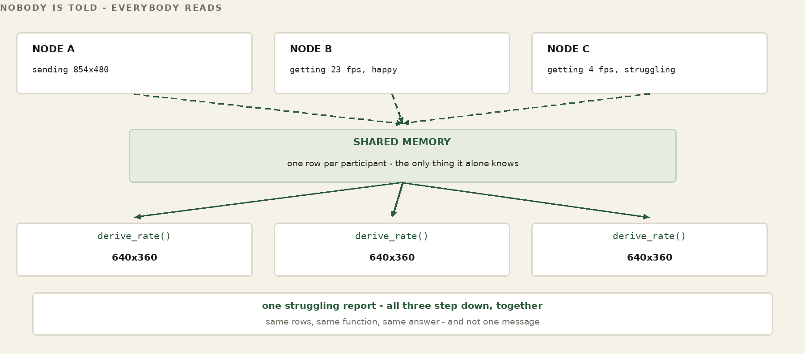
A distributed application today is written in the verbs of communication. send, receive, retry, timeout, endpoint, serialize. Above them sit the verbs of the web, GET and POST, which are the same idea wearing a nicer coat: a request goes somewhere, an answer comes back, and the program has to know where somewhere is. Every one of them is a statement about how a value travels. The programmer is required to think about the wire because the surface gives no way not to.
Under UnREST the verbs are verbs of memory, and the client/server relation that GET and POST carry with them is simply absent: there is no server to be a client of. The shape of the thing, in pseudocode:
/* pseudocode -- the shape of the surface, not its signatures */ memset(tuple, value); write what you know value = memget(tuple); read what is currently true memwatch(tuple); be told when it changes
Those three lines are pseudocode and should be read as such. The API as it exists today is put(), get() and get_all() in core/frognet_tuples.py, which you met in Part IX. The third line names an intent rather than a call: there is no change-notification primitive in FrogNet Memory today — a program that needs to know a value moved polls for it, which is what the Communicator's roster does — and section 54 says so again. It is written here because the surface is easier to see with the notification in it than without, and because leaving it out would misrepresent where this is going.
The change the pseudocode is trying to show is not the names. It is the question the programmer asks. Before: which service do I call? After: what is the current value? The first question has an answer that goes stale, needs a retry policy, and has to be mocked. The second has an answer.
The application manipulates memory. FrogNet performs the communication.
The closest thing most programmers already have to this is a multithreaded program, and the analogy is worth taking seriously rather than treating as decoration.
Several threads run at once. Each may read data another thread owns. Each may update state the others can see. Nobody writes a message protocol between thread four and thread nine; they share memory, and the discipline is about who may write what and when. That discipline is real work — but it is work about state, which is the work the problem actually contains.
FrogNet extends that model across a living network. A bundle on one machine and a bundle on another stand in the same relation to each other as two threads in one process: they share what they know, and they do not correspond. What was a process boundary becomes, from the programmer's side, no boundary at all.
Raising the surface removes the communication code. It does not remove concurrency, and any claim that it does should be disbelieved.
Several bundles may read and write the same operational state, and they will do it at the same time. The important thing is where that is dealt with. An application should not answer it by inventing a distributed protocol of its own — that is the very code this whole part is about not writing. It belongs in the memory model, the same way a thread's answer belongs in the language's memory model rather than in each program that uses threads.
The guarantees that belong there, stated as design intent rather than as a description of what is shipped today:
Which of these exist today is not a matter of inference. What put() gives you today is last-write-wins against the three-coordinate key, a timestamp so a reader can age a value out, and one form of ownership: a tuple written with own=True belongs to the writing process and is removed when that process exits, so a departed writer leaves nothing behind. That is closer to a lease held by liveness than to authority that can be handed on. The rest of that list is where the memory model is going, and section 54 carries it with the other honest edges. Naming the whole set here is deliberate: the surface is only worth adopting if the hard part has somewhere to live, and this is where it lives.
So the division is the same one as everywhere else in this book. FrogNet Memory defines the distributed memory model; applications define behaviour. Or, put as the thing you would say at a whiteboard: applications express intent, and the memory model — not each application in turn — decides what happens when two of them express it at once.
Two words get used in a particular way, and it is worth pinning them down.
A library is a reusable capability built on FrogNet Memory — a common memory pattern, packaged. Presence is one, and it is real: the Communicator's roster is a library-shaped thing over ordinary tuples. Teams, messaging, sensors, actuators, authentication, transactions: each of those is a pattern that will otherwise be reinvented per application, which is precisely the argument this part has been making about communication code.
A bundle is a complete application. The word is also the deployment directory it ships in — /etc/frognet_bundles/ — which is the same thing seen from the filesystem. The Communicator is the bundle that exists, and Part XV takes it apart. FrogNet Family, emergency management, robotics, agriculture, home automation: those name the shape of what the surface is for, and none of them are shipped code. They are listed so the Communicator is not mistaken for the point.
A bundle programs shared operational memory. It does not program communication. That is the entire claim, and it is testable against any bundle anyone writes: open it up and see whether there is an endpoint in it.
The programmer thinks in terms of memory. FrogNet thinks in terms of communication.
Everything in this part — the Tuesday, the fifty years, the test about mocking, the question about assembly language — is that sentence argued out at length. If only one line survives, it should be that one.
FrogNet reduces the application attack surface to almost nothing, and it does so by shape rather than by hardening. No discoverable application endpoints. No exposed application protocols. A scanner sweeping the address does not find an application to talk to, because the applications never needed a door. Read that as the scoped claim it is: it is about the application layer, and it is not a claim that a node answers nothing anywhere.
That is a description of the deployment, not a claim about how hard it would be to break in. There is no application attack surface to harden, because there is no application attack surface.
What that has bought, so far. These machines have been running across the country for months in the ordinary background noise of the internet, where anything reachable on the application layer gets found and probed. Nothing has been found there, because there is nothing there to find. That is evidence, and it is worth exactly what evidence of that kind is worth — an absence of incident over a period, not a proof. And it is bounded by the thing this part says next: FrogNet implements no cryptography of its own. The bearer crypto is WireGuard’s, and it is yours to supply and yours to configure.
A pattern you have seen since Part I now gets its name. FrogNet is not made safe by a product bolted onto it — no appliance, no suite, no cipher standing guard at the edge. It is made safe by its shape: the same architecture that makes it self-forming and cheap on the wire also leaves an attacker almost nothing to reach, no way in without coming physically near, and little to read even then. Four properties fall out of the design already built, and this part states each one plainly — and, just as plainly, where it stops being true. The author's own position is stated without hedging: for the private fabric this book describes, additional cryptography is unnecessary. This part earns that claim on architecture alone — and then, because your threat model is yours and not the author's, shows exactly where the encryption dial sits and how to turn it up.
FOR THE GUILD
Everything you have just read about FNWP-1 and BLDC-1 is a description. It is not a specification. There is no document that says, normatively, what a conforming implementation must do -- what every field means, which behaviours are required and which are advisory, what a receiver does with a frame it does not recognise, how a version is negotiated. There is running code, and there is this book, and a book is not a specification: it explains, it argues, it chooses what to leave out. A specification may do none of those things.
Two doors. To talk about it — this book lives in a public repository and its Discussions are open at github.com/FawcettJohnW/FrogNet-Living-Network/discussions; no licence is needed to argue there. To build on it, the licence page is fawcettinnovations.com/license — ask, and if you want to work on something, say so and say which. The questions are optional and the licence does not depend on them.
That gap matters more than it looks. A protocol only one implementation speaks is a file format with extra steps. The second implementation is what proves the first one was a protocol at all -- and nobody can write a second implementation from prose. It also settles a question this book cannot: when the code and the description disagree, which one is wrong? Today the answer is whichever John says. A spec makes it answerable by reading.
So the guild has a seat for a spec editor, and it is not a documentation job. It is the work of extracting a normative document from a working system and an author's head, deciding what is required and what is merely current, and being the person who says no when an implementation detail tries to become part of the standard. If you have done this before -- for an RFC, a working group, a standards body, an interop effort -- you already know it is a different discipline from writing, and that it is scarce.
WATCH
Security By Architecture — the probe run on camera, and the challenge
Start with what a stranger on the internet can even find. On a FrogNet node, every service the node runs — Apache, the proxy, the daemon, discovery, both database planes — listens on the 10-net and only there. None binds a public address; none can be reached from off the mesh, because there is no route from off the mesh to them. The single thing on a node that ever faces the public side is a WireGuard bearer (Part VII), and WireGuard is silent by construction: a packet that does not carry a valid key gets no reply, no error, not even a closed-port refusal — it is dropped as though nothing were listening. A port scan of a node's public interface cannot tell the tunnel is there, because the tunnel never answers anything it does not already trust.
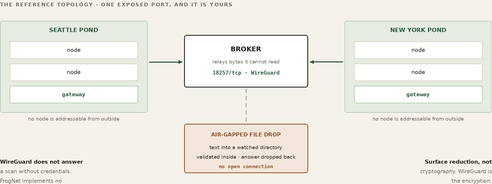
So a node presents no surface to the internet at all. This is not a firewall tightened until only the right ports are open; it is the absence of any listening service on the public side to begin with. The exposed request/reply endpoint — the always-open port waiting to be asked — is precisely the thing FrogNet dropped when it dropped request/reply (Part IX). There is no door to harden because none was ever cut.
It is worth stating the claim in its strongest honest form, because the weaker form gets FrogNet compared against things it is not competing with.
A conventional application publishes machinery on purpose: an endpoint, a router, a parser, an authentication path, parameter handling, deserialization, and the application logic reachable behind all of it. Every one of those is something an attacker can discover, characterise, fuzz, compose against, and eventually exploit. The standard attack is a pipeline — find the endpoint, learn its behaviour, find the flaw, build the request, invoke the handler — and every defensive technology in the field is an attempt to make some stage of that pipeline harder.
FrogNet is not better at surviving that pipeline. The pipeline has no first stage. There is no remotely callable application interface to discover, so there is nothing to characterise, so there is no request to construct. That is a different kind of claim from a smaller attack surface, and it is the one this part is actually making.
Which is emphatically not a claim that FrogNet has no threat vectors. It has plenty, and they are named in this part and the next: host access, wireless admission, WireGuard credentials, an authorised node that has been taken, the broker, local privilege boundaries, the supply chain, and bugs in FrogNet itself. Software still has vulnerabilities. What changed is that an attacker has to reach one of those instead of the application, and none of them is reachable by talking to a published interface from anywhere on the internet.
The obvious rejoinder is that an air gap achieves the same thing, and it does. That is rather the point: an air gap gets the property by giving up the network. The claim here is that you can have the property and keep useful networking — Seattle still talks to New York, memory still crosses, the call still connects — without the application ever publishing the interface that would conventionally be required to do any of it.
One piece of the pond does face the internet, and the book will not pretend otherwise: the broker. It has two touchpoints out there — its WireGuard relay endpoint, as silent as any other, and the broker service itself, on a real name (hometown's is streamingfrog.com) at a port the operator chose and handed to the node in its membership card. It is not a well-known port and not a service name — there is nothing to enumerate toward, and a node finds it because it was told, not because it looked. The broker service is scannable — something answers there, so it can be probed, and an honest review names it. But it is one auditable service — enrollment and rendezvous, credential-gated (Part VII) — not an application sprawled across every box. And in the recommended split topology the broker sits outside the mesh, so even this surface is not a path inward: taking it buys an attacker the rendezvous, not the network.
Over radio the picture is starker still: there is nothing on the internet to aim a scanner at, because the link is not on the internet. A 900 MHz bearer (Part III) carries the 10-net between two boxes and terminates at both; a listener would first have to be within radio range — which is the next section.
WORKED EXAMPLE — A scan of a node's public interface, and of the broker
It is worth being precise about what that port is — and what it is not. It is the broker service answering for itself, and the only things that talk to it are setup_lillypad and frognet-tunnel-setup-v3.sh, run on the node, from a shell. You do not visit a web page to register a machine. There is no enrollment form, no sign-up flow, no account. A node is enrolled by a script that redeems a passcode against that port, and the operator who minted the passcode did that from the broker's own command line.
WORKED EXAMPLE — Two enrollment shapes. Only one of them is here.
what FrogNet does
operator, on the broker mint a passcode
operator, on the node run the setup script
node -> broker service redeem it
broker state, keys, tunnel
what it is usually mistaken for
anyone, from anywhere find the enrollment app
anyone create an account
anyone configure a network
Read down those two columns and the difference is not a hardening measure, it is a different shape. Every step on the left begins with somebody who already has the broker — and the one step that crosses the internet carries a secret that was minted for it. There is no step a stranger can start.
The broker install also lays down web pages — the operator console of Part VII. That console is a real management interface, it is supported, and it is the normal way to administer a broker; it is reached with the credentials the installer put on the machine. The recommendation is discretion, not avoidance: reach it from the broker itself where that is practical, and for routine work prefer the scripted facilities in /usr/local/bin — frognet-pond and its neighbours — which cover the common operations without needing the pages at all. Those scripts are a convenience, not a replacement. Whether to reach the console across the internet is a judgement about your setting, not a thing the architecture forbids. And it is separable from the fabric: run the broker without ever opening the console and nothing about enrollment, rendezvous, or tunnels changes.
Return to the broker service on 18257, because what a scanner learns from that port is less than it looks like — and the same turns out to be true of the console, on its own port, for the same reason. HTTP is the application interface on both ends of the exchange, not the representation on the wire: FNWP-1 carries it, a first contact costs a FULL because there is no template yet to diff against, and everything after settles to DIFF and SAME. A capture yields length-prefixed codec frames, and making sense of them takes a FrogNet endpoint rather than a protocol analyser. This is a statement about what the wire carries, not a confidentiality claim — the transport is not the thing protecting you, and the section on encryption says what is. But the honest description of the surface is: one port, answering, on a number somebody picked.
The reason that is true of the console too, and not just of enrollment, is that the broker's web server is itself a FrogNet semantic server. It understands templates and semantic compression like any other node, so once a template is established the wire carries what distinguishes this transaction from state both ends already hold — not a fresh complete message each time. HTTP can be the application interface without full stateless HTTP being the wire representation. That is the same inversion the book makes everywhere else: above FrogNet, REST can look like memory; below REST, HTTP can look like semantic operations. In neither direction does REST disappear — it stays underneath doing its job, and what changes is the surface a developer or an operator has to think at. It is the “REST is assembly” point applied to management traffic.
Be exact about what that buys, because it is easy to overclaim. Capturing one semantic frame does not necessarily reveal the complete request or response it stands for, since the frame may carry only a difference against shared state — materially different from a sequence of complete, independent, stateless transactions. It is not encryption and no substitute for authentication. An attacker who compromises an endpoint, obtains the templates, or accumulates enough context can reconstruct what was represented. Confidentiality across the open internet comes from the WireGuard bearer; the semantic wire reduces what is on it, and that is a different claim.
The rest of this chapter would be an argument if the book did not run the scan, so here it is, run against the live broker from an ordinary desktop on a domestic connection on 17 August 2026. Not a lab, not a diagram, and not a machine that belongs to the pond.
Start with a node, because that is the part of the claim that costs nothing to make and everything to get wrong.
$ nmap -Pn <node's public IP> all scanned ports: filtered nothing answers the wg bearer drops unauthenticated packets in silence
Now the broker, which is the one machine that has to answer. A node getting its first tunnel cannot ride a tunnel that does not exist yet, so first contact crosses the open internet and something must be listening for it.
WORKED EXAMPLE — nmap -Pn -p 80,443,18257 -sV streamingfrog.com
PORT STATE SERVICE VERSION 80/tcp open http Apache httpd 2.4.52 443/tcp open ssl/ssl Apache httpd (SSL-only mode) 18257/tcp open unknown 1 service unrecognized despite returning data.
Three ports, all open, and the book will not dress that up. Eighty and four-four-three are a web server — this host also serves a public site, which is a deployment choice and not a FrogNet property. The interesting one is 18257, and what makes it interesting is the last line: nmap fingerprinted it against eight different probes and could not name it.
Here is everything those eight probes returned.
GET / , OPTIONS, RTSP HTTP/1.1 404 Not Found
content-type: application/json
{"detail":"Not Found"}
RPC, DNS-over-TCP (x2), HTTP/1.1 400 Bad Request
Help, SSL session req, content-type: text/plain
terminal server cookie Invalid HTTP request received.
That is the complete yield. A well-behaved HTTP endpoint that answers every malformed thing thrown at it with a refusal and every well-formed thing with a not-found, because none of the paths a scanner guesses are paths this service has. There is no index, no directory listing, no error page carrying a stack trace, no version banner, and nothing to enumerate toward. The port number itself was chosen by the operator and handed to each node in its membership card; it is not a registered service and nothing about it is guessable.
WORKED EXAMPLE — What we removed after running this, and what we could not
The first run of this scan returned server: uvicorn on every response. That is a free fingerprint on the one service that cannot hide, and it was there because a systemd drop-in redefining the listen address had silently discarded the --no-server-header flag the main unit carried. Two files, one truth, and the wrong one was the one anybody read — the same failure shape as the docstring in Part VIII that described a flush nothing ever called. The scan above is the run after the fix, and the header is gone.
What could not be removed is worth naming with equal flatness. The JSON body of a 404 says FastAPI to a reader who knows the shape. Invalid HTTP request received. is a string from the ASGI server. Both are reducible with custom handlers and neither is eliminable, and a book claiming otherwise would be inviting the reader to check. They are also, precisely, harmless: knowing which framework refuses you is not a way past the refusal.
An open port that answers is a service, and a service is code, and code has bugs. Nothing above says otherwise. What it says is narrower: an attacker who finds 18257 has found one credential-gated service whose entire externally reachable vocabulary is enrollment and rendezvous. There is no application behind it — no user data, no business logic, no sprawl of endpoints — and the broker sits outside the mesh, holding no node identity and no route inward — so taking it gives you the transport path, not membership.
The other two ports are the honest reminder that this is a deployment, not a proof. Apache on eighty and four-four-three is a website that happens to share a machine with a broker, announcing its version to everybody. That is entirely ordinary and entirely optional, and it is on the page because leaving it out would have made the scan look tidier than the world is.
Run it yourself. The command is at the top of this section and the address is real.
Everything above is an argument until somebody tries to break it, so here is the invariant stated as something that can fail, and the terms under which it would.
Compromise the broker completely and you still have not compromised a FrogNet. That is a stronger claim than “the broker is hard to attack”, and it is a more useful one, because it does not depend on the broker being well written. Assume it is not. Assume it is owned.
And it is stronger than it first sounds, because the broker is not merely adjacent to the traffic. It is the inter-site data path. Every cross-site packet transits it. So this is not a claim that the attacker has been handed something peripheral — they have been handed the wire.
Three things still hold, and each is worth attacking separately. The broker forwards tunnel traffic but does not hold the endpoint keys, so what transits it is not addressed to it and not openable by it. It runs none of the semantic stack — no templates, no learned structure, no cache — so even decrypted, a frame is a difference against state it has never held, which makes it unreconstructable rather than merely unread. And it is not a member of any FrogNet: no node identity, no place in a pond, no route inward. Owning the transit point gives you the transit point. The question this section exists to ask is whether that can be turned into the network.
There is a fourth property and it is the sharpest of the four, because it is not a policy the broker follows but a path the payload never takes. Transit is handled in the kernel. The broker forwards through iptables; the bytes are moved by netfilter and never enter a process on that machine. Nothing parses them, nothing buffers them at the application layer, and nothing writes them to disk. There is no history to seize because there was never a place for one to accumulate.
That matters for the shape of the attack rather than its difficulty. An attacker with root can of course start capturing — but they are starting a capture, not opening a store. What was already forwarded is gone, and what they collect from now on is still keyless and still contextless. The broker has nothing to surrender because it kept nothing.
Which is also why the answer to a compromised broker is not incident response. It is a new droplet. Stand another one up, point the ponds at it, and the old one is a machine somebody owns that is no longer part of anything — the whole recovery being a config line, because there was never any state on it worth recovering.
So the challenge is not rhetorical. Start the attacker with root on the broker and see whether any of these can be made to go red.
ORACLE 1 broker pivot
given root on the broker; no endpoint keys; no node
red if a new application-level exchange can be
originated with an internal FrogNet-only service
ORACLE 2 application recovery
given root on the broker — all cross-site traffic
transits it, so capture is free
red if protected application content can be
reconstructed without compromising an endpoint
ORACLE 3 credential manufacture
given root on the broker
red if sufficient authority can be manufactured to
join as a legitimate member, without the
endpoint secret material
Those are the terms. A professional red team, an automated system, or one determined person with a weekend — the source of the attempt does not matter, and neither does how clever it is. What matters is whether the run goes red, because a red run is a finding and a hypothetical is not.
If one of them goes red, that is the best outcome available: an architectural failure discovered while it can still be fixed, by somebody who was not in the room when it was designed. If none of them do, that result is worth more than another paragraph asserting the property — and it is the only kind of evidence this book accepts for anything else, so it would be dishonest to want a softer standard here.
FOR THE GUILD
This is an open invitation with defined failure conditions, which is the only kind worth making. Bring the topology, bring the tooling, bring whatever you like. State which oracle you are attacking, run it, and show the result. A reproducible counterexample is a complete contribution and does not need to arrive with a fix — but a generic “what if”, with no demonstrated path from the broker to a node, is not a finding and will be treated as what it is.
Two doors. To talk about it — this book lives in a public repository and its Discussions are open at github.com/FawcettJohnW/FrogNet-Living-Network/discussions; no licence is needed to argue there. To build on it, the licence page is fawcettinnovations.com/license — ask, and if you want to work on something, say so and say which. The questions are optional and the licence does not depend on them.
Sometimes the one surface has to accept something from a stranger — an enrollment, a licence request, an uploaded file. The reflex is to stand up a service that listens, takes the request, and hands it inward: a door. FrogNet does not cut a door. What faces the internet writes files into a watched folder and nothing more; it never addresses the network, because it has no route in. Something on the inside pulls each file, inspects it as strictly as you like, and only then hands the vetted result to the applications behind. Replies make the reverse trip — the inside writes out, the exposed side serves it back. The inside reaches out and pulls; the outside never reaches in.
This is a selective directional gap, not a classic air-gap: the back end is unreachable from the public internet, yet a gateway still carries data across on your terms. The consequence is the part that matters. Compromise the exposed host and you own a folder of files, not a foothold on the network. The form can be as internet-facing as it needs to be and still be no attack surface on the fabric, because the crossing is files-only and every file is examined on the inside before anything trusts it. “Drop a file, then inspect, then pass it on” is a stronger boundary than “accept a request and route it” — and it is how a FrogNet can host a public form without putting a single node within reach.
If the internet cannot reach a node, the way in is the segment — and the segment is a physical place. To touch an internal node you must be on the wire it lives on, or within range of the radio that stands in for that wire. There is no third way, because there is no internet-facing path to the inside for anyone who has not already been handed a tunnel and a token. Access is gated by proximity, and proximity here is literal, measured in feet and miles: a cable is as long as the cable; onboard Wi-Fi is a room or a building; a 900 MHz HaLow bearer is the two miles of clear air Part III rated it for. To attack the LAN you have to come to the LAN.
This is a different kind of claim than “network security” usually makes, and the difference is worth holding. A firewall is a rule that says no to traffic that did arrive; proximity is the absence of any arrival to say no to. Inbound access from the internet is not switched off on a FrogNet node — it was never switched on. A misconfiguration cannot open what does not exist, and there is no rule to forget. The whole class of remote attack that begins “connect to the target from anywhere in the world” has no first move.
On the segment itself, trust is the plain fact of ownership from Part VII: the node is the .1, the DHCP and DNS authority for its own /24, and nothing routes onto that wire without its say. Being near is necessary; it is not sufficient. A stranger who reaches the wire still meets the identity and membership gates — the GUID in /etc/fnid, the redeemed group token — before it is anything more than noise on the segment. Proximity narrows the attacker's world to those who can physically reach your wire; the credentials narrow it again to those you admitted.
Now suppose the attacker is on the wire — near enough, and set the credentials aside for a moment. What is actually flowing past on an FNWP-1 socket? Not messages. Part IX showed that after the first exchange of a structure, the wire carries SAME, DIFF, and FULL verdicts against a template — and that template, with its reference values, lives in each node's local cache, learned once from that first FULL and never re-sent. A capture off the wire is therefore a stream of opcodes, sequence numbers, and changed values measured against a structure the eavesdropper does not hold. A DIFF says “these fields moved to these values.” Without the template it moved them in, that is a handful of numbers with no shape to pour them into.
The meaning is in the cache, not on the wire. It is the same property that makes FrogNet fast — the wire is thin because both ends already remember the structure — read now as a security property: the wire is thin because it says so little on its own. It also matches no familiar signature. A capture does not look like web traffic, or messaging traffic, or any catalogued protocol; there is no envelope announcing what it carries, because the envelope was agreed once and left behind on both boxes.
Now the limit, stated as flatly as the claim, because a security reader will find it if the book does not. This is encoding, not encryption, and the distinction is real — real enough to be a recognized legal line, since compression and coding are not a cipher. Precisely what it means: an observer present from the first FULL, who captures the whole conversation from its start, learns the template in the same act the endpoints do and can follow the diffs from there. Reference-diffing raises the cost of a capture and guts the value of a partial one; it does not, by itself, make the traffic unreadable to a patient listener who saw the beginning.
Which is exactly why the design does not ask it to. When traffic crosses anything you do not own — the open internet, most obviously — it crosses a WireGuard bearer, and then the listener never gets the capture at all. The semantic wire is why a partial or late observer learns nothing useful; the bearer, where you use one, is why there is nothing to observe. They are two layers, and the second is the next section.
WORKED EXAMPLE — What a mid-stream DIFF frame yields a listener
captured off the wire, mid-conversation: opcode RESP_DIFF seq 42 payload <field 3 -> 54.6> <field 7 -> 1719...> without the template (held only in each node's cache): field 3 of WHAT? field 7 of WHAT? names? units? shape? -> two numbers and nowhere to put them
Here is the author's position, offered as a real opinion and not a hedge: for the private fabric described in this book, additional cryptography is unnecessary. The three sections above lean on no cipher. The surface is gone because nothing on a node answers the internet; the inside is reached only by someone physically near the wire and holding a token; the wire carries references into private memory rather than legible messages. That is a defense made of shape, and it holds whether or not a single byte is encrypted.
But one man's threat model is not another's, so FrogNet does not force the view — and the design fact that keeps the choice cleanly yours is this: FrogNet implements no cryptography of its own. The encryption in the system is WireGuard, and WireGuard is a bearer you supply — one transport among several (Part III), not a cipher woven into the fabric. FrogNet uses it; FrogNet does not contain it. That line is deliberate, and it is why “add encryption” is a decision about bearers you control rather than a change to the living network at all.
So encryption is a dial, and your hand is on it. Put a WireGuard bearer under a link and that link is encrypted end to end; put one under every link and nothing crosses any wire in the clear — and in both cases the fabric above does not change by a line, exactly as Part VII promised. Between sites it is already there, because the cross-internet tunnels are WireGuard by default. On a local wire you own, the author leaves it off and trusts the segment; if your setting says otherwise — a shared building, a hostile RF environment, a rule that simply requires it — put a bearer on that wire too, or layer your own cipher on the payload. The architecture is indifferent to which you choose; it was built to route over whatever you lay beneath it.
One discipline worth keeping. What is proven about FrogNet's security is architectural: the vanished surface, the proximity gate, the reference-only wire — each demonstrable, each resting on mechanism already in this book. Encryption is offered honestly as available — a capability you turn up to meet a need — rather than promoted as the headline. When someone asks “but is it encrypted?” the truer answer is the stronger one: it does not have to be, and if you want it to be, the dial is right here, and it is yours.
Everything up to here describes what FrogNet Memory is. This part is about writing programs against it, and it exists because the hardest thing about this surface is not learning it. It is unlearning message passing — and the evidence that it is hard is that the author of the system spent a day relearning it while building the reference application on top of it. This is also the sentence promised on the first page of chapter 1, held back until now because it means nothing without the machinery under it. You have that machinery now. If the promise read as abstract then, it will not read that way here.
Here is the whole mental shift, and if you take nothing else from this part, take this: think of a FrogNet application as one program with many threads over shared memory. Not as parties in a conversation. Not as services calling each other. One program, whose threads happen to be on different machines.
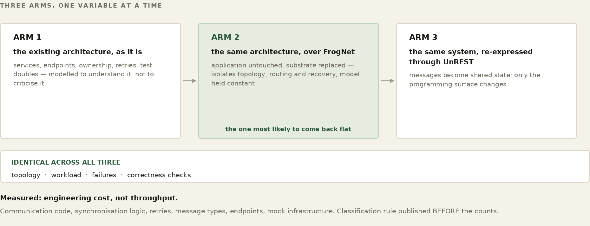
Nobody writes a message protocol between thread four and thread nine. They read state the others wrote, they write state the others will read, and they never correspond. That is exactly the relation between two FrogNet bundles, and every part of the design follows from taking it literally.
The failure mode has a shape, and it is worth naming so you can catch yourself in it: reaching for how do these two agree. Every regression in the session that produced this part came from that question. It is the wrong question. There is no agreeing. Each thread writes what only it can know, every thread reads all of it, and the answer is a pure function of that state.
This is the rule that decides what your program writes. A held keyframe is the viewer’s fact — nobody else is in a position to know it. A capture rate is the sender’s. A socket’s state is the relay’s. Write only what you alone stand in a position to know, scope it to yourself, and update it in place forever.
The Communicator got this wrong first. One call row per session carried a members list, written by whichever participant wrote last — so one node renewed other people’s membership, and a member who left was put back by somebody else’s heartbeat five seconds later. No amount of care on the leaver’s side could fix that, because the row was not the leaver’s to write. Five rows replaced it, each written by the single party with standing to know the fact. [FOUR_TUPLES_V1]
The rate at which every participant in a call sends is one pure function — derive_rate(state, ladder) -> geometry. No clock. No self. No I/O. Every participant runs the same function over the same rows and lands on the same answer without being told, which is what makes agreement unnecessary rather than merely cheap.
Before that, the logic lived inline in the sender and again in the receiver, and the two diverged, because two copies of a rule are two rules. Each end measured its inbound rate and wrote a request to the other; matched windows, no damping, and each step changed what the other measured. Observed at 23.8 of 24 frames per second with zero drops on both sides, hunting indefinitely while nothing at all was failing. [ONE_DERIVATION_V1]
The general rule is the one in the heading. A function that consults its own last answer is a controller with memory, and two controllers with memory disagree. If a fact must persist — the smallest size an end has failed at, say — it goes in the state, as a row, where every end derives the same ceiling and nobody keeps a private history. [A_RATE_THAT_FAILED_IS_NOT_A_CANDIDATE_V1]
The most expensive class of bug on this surface, and the least obvious. Zero frames arriving means the producer sent nothing. It does not mean this consumer is slow. Reading absence as slowness is a ratchet: the producer sheds, the consumer reports worse, the rate drops, the producer sheds more. [ABSENCE_IS_NOT_A_MEASUREMENT_V1]
It generalises past media. Absence is not evidence of slowness, of departure, of agreement, or of a clear ceiling. A missing row means you did not see a row. The store returns 503 constantly and a half-succeeded read returns a subset — so losing the far end’s row removed the very evidence holding a rate down, and it climbed; the next read found the row again and it dropped back, alternating every cycle. A shrinking read is not news. [A_SHRINKING_READ_IS_NOT_NEWS_V1]
Frames do not arrive smoothly. Measured from one consumer, consecutively, from a producer sending a steady twenty-four: 45.8, 3.4, 21.4, 0.5, 25.2. Each two-second window taken as a verdict asked the network down every other time. A rolling horizon, and no verdict at all until it is full — a partial span is a short window wearing a longer name. [MEASURE_LONG_ENOUGH_TO_BE_A_MEASUREMENT_V1]
And measure in wall-clock, not in poll cycles. A report count is a count of ticks; at twenty milliseconds, five reports is a tenth of a second — faster than any promotion can be judged, so the two race.
A consumer at 55.4 frames per second reported that it was not keeping up, because it had not yet been steady for three windows. Happy — earned over time, and what lets the network climb — and struggling — measured now, and what makes it step down — are two different facts that had been collapsed into one boolean. Not yet stable is not overloaded. [NOT_YET_STABLE_IS_NOT_OVERLOADED_V1]
An empty list has several causes and they look identical. So does a frame that aborted, and a report that never arrived. Name which one. An abort that prints frame size, bytes written, percentage, socket buffer, unacked queue and peer is a diagnosis; “it aborted” names nothing. [SAY_WHY_IT_ABORTED_V1] [SAY_WHY_THE_LIST_IS_EMPTY_V1]
Two related traps. Diagnostics must go where a person will read them — a GUI detaches from its console, so print goes nowhere, and two hours went into reading the absence of printed output as the code not reaching that line. And never read a counter somebody else drains: a guard read two counters that readers above it had already emptied, so it always saw zero and printed “NO drops and NO sheds” on the line directly above “drops 12/s”. [READ_A_COUNTER_NOBODY_ELSE_DRAINS_V1]
Three rules that will cost you an afternoon each if you meet them by surprise.
resident converges it to None — so every call row published a null member, every lookup skipped every row, and nothing was joinable. No error. No warning. An empty list. [RESIDENT_ONCE_NEEDS_A_RESIDENT_VALUE_V1][A_CHANNEL_BELONGS_TO_ONE_CODEX_V1]The defence against all three is the same and it is cheap: a writer checks its own output. Compare what you offered against what the codex converged, after the flush, and name both when they differ. [A_WRITER_CHECKS_ITS_OWN_OUTPUT_V1]
FOR THE GUILD
This part is a distillation of one day’s failures, and it is certainly incomplete. If you write an application against FrogNet Memory and find a rule that belongs here — or find one of these wrong — that is a contribution, and it does not require touching the engine. The rules that cost the most were the ones nobody had written down.
Two doors. To talk about it — this book lives in a public repository and its Discussions are open at github.com/FawcettJohnW/FrogNet-Living-Network/discussions; no licence is needed to argue there. To build on it, the licence page is fawcettinnovations.com/license — ask, and if you want to work on something, say so and say which. The questions are optional and the licence does not depend on them.
Every rule below is a doctrine tag that appears verbatim in the source and is checked mechanically, so this table and the code can be diffed against each other. They are grouped by the kind of mistake they prevent rather than by subsystem, because the mistakes generalise and the subsystems do not.
| Writing to shared memory | What went wrong without it |
|---|---|
| [FOUR_TUPLES_V1] | one row per session, written by whoever wrote last, so a node renewed other people's membership |
| [MEDIACONTROL_BELONGS_TO_THE_CALL_V1] | settings that belong to the call were scoped to a participant |
| [THE_KEY_IS_THE_NAME_NOT_THE_DECORATION_V1] | keying on a per-launch id accumulated one dead identity per run — forty in one roster |
| [A_MEMBER_IS_PROOF_THE_CALL_EXISTS_V1] | a call vanished when its originator's process ended, though members were still in it |
| [LEAVE_MEANS_FORGET_V1] | a member who left was written back by somebody else's heartbeat |
| [RESIDENT_ONCE_NEEDS_A_RESIDENT_VALUE_V1] | a resident field with no resident value converged to None — silently, no error, an empty list |
| [A_WRITER_CHECKS_ITS_OWN_OUTPUT_V1] | a payload changed without the field order; the field was dropped on the wire and nobody knew |
| [A_CHANNEL_BELONGS_TO_ONE_CODEX_V1] | channels cached on scope alone collided across variables |
| Deriving from shared memory | What went wrong without it |
|---|---|
| [ONE_DERIVATION_V1] | the rule lived in the sender and again in the receiver; two copies of a rule are two rules |
| [NO_SYNC_JUST_STATE_V1] | a request tuple — a negotiation with the word filed off |
| [ONE_RATE_FOR_THE_NETWORK_V1] | each end computed its own answer and each answer changed the other's evidence |
| [THE_RATE_IS_A_FUNCTION_OF_THE_ROWS_V1] | state read from a participant's memory rather than from the rows |
| [A_RATE_THAT_FAILED_IS_NOT_A_CANDIDATE_V1] | promotion into a rate already shown not to work — ninety cycles in five seconds |
| [A_CEILING_MUST_BE_ABLE_TO_LIFT_V1] | one struggling report pinned a call at 160x120 for its whole life, on a gigabit link |
| [SEND_NO_FASTER_THAN_THE_SLOWEST_SENDER_V1] | the bound that makes one derivation safe for everyone |
| [A_SENDER_BOUND_ALONE_CANNOT_CLIMB_V1] | a call with no receive reports could not find out whether more was possible |
| [THE_CONSUMER_OWNS_THE_RATE_V1] | four separate controllers independently moved the picture |
| [THE_RATE_IS_COMMANDED_NOT_NEGOTIATED_V1] | the same, stated from the sender's side |
| Reading shared memory | What went wrong without it |
|---|---|
| [ABSENCE_IS_NOT_A_MEASUREMENT_V1] | zero frames read as a slow consumer, ratcheting the whole call down |
| [A_SHRINKING_READ_IS_NOT_NEWS_V1] | a half-succeeded read lost the row holding the rate down, so it climbed, then dropped back |
| [MEASURE_LONG_ENOUGH_TO_BE_A_MEASUREMENT_V1] | a two-second window taken as a verdict: 45.8, 3.4, 21.4, 0.5, 25.2 from a steady 24 |
| [NOT_YET_STABLE_IS_NOT_OVERLOADED_V1] | a consumer at 55.4 fps reported it was not keeping up |
| [JUDGE_AGAINST_SOMETHING_V1] | a consumer with no producer claim was unhappy about nothing |
| [RECEIVE_RATE_IS_LINK_EVIDENCE_V1] | an arrival rate treated as an instruction rather than as evidence |
| [READ_A_COUNTER_NOBODY_ELSE_DRAINS_V1] | “NO drops and NO sheds” printed directly above “drops 12/s” |
| Saying what happened | What went wrong without it |
|---|---|
| [SAY_WHY_IT_ABORTED_V1] | “it aborted” names nothing; size, bytes, buffer, queue and peer name a fault |
| [SAY_WHY_THE_LIST_IS_EMPTY_V1] | several causes, one appearance |
| [SAY_WHICH_GATE_STOPPED_THE_REPORT_V1] | the same, for a report that never arrived |
| [DIAGNOSTICS_GO_WHERE_THEY_CAN_BE_READ_V1] | a GUI detaches from its console; two hours reading absence as non-arrival |
| [A_SILENT_EXIT_IS_A_BUG_REPORT_V1] | mainloop returning is not an event anybody sees |
| [SAY_WHICH_BYTES_ARE_RUNNING_V1] | a version constant is a claim; a hash of what Python imported is a fact |
| [A_FINGERPRINT_IS_OF_THE_CODE_NOT_THE_BYTES_V1] | editing in a Windows editor read as stale code |
| [THE_BUILD_SAYS_WHAT_IT_PACKAGED_V1] | no checkable chain from source to running client |
| [A_VERIFIER_THAT_CANNOT_RUN_IS_WORSE_THAN_NONE_V1] | a verifier shipped whose oracles had been trimmed |
| [SELF_CALLS_MUST_EXIST_V1] | a call to a removed method killed a send loop in a thread, silently |
A note on how this system was actually built, because it bears on how you should expect to work on it.
FrogNet was written by one person working with an AI, and the simulator is the artifact that made that possible. Not as a convenience — as the mechanism by which a claim becomes checkable by both parties. An AI will state a plausible thing about code it has read; a person will remember a design decision from six weeks ago that has since changed. Neither of those is evidence. A test that fails on the old code and passes on the new is evidence, and it is the same evidence for both of them.
That is why the oracle discipline in Part XIII is not merely good practice here. It is the shared instrument in a two-party collaboration where one party cannot run the machine and the other cannot hold the whole system in their head at once. Every rule in this book about proving rather than asserting comes from that arrangement.
The rate oscillation described above took a day, and the reason it took a day is worth stating precisely: a single-participant test cannot see a two-controller bug. Almost every regression was two things moving one knob, each reading the other’s effect as fresh evidence, and nothing in the existing suite could observe that shape at all. Twelve assertions passed while the system published empty rows. Twice.
What broke it open was a simulator that ran N participants as real threads over one shared store, with no messages between them — each writing what it alone knew, reading everything, deriving with the same pure function. It reproduced the hunt before the fix, ninety cycles in five seconds, and it now asserts convergence, agreement across the settled tail, a slow end pulling the call down, stopping where the link carries rather than at the floor, a third participant not disturbing a settled call, recovery from a pinned ceiling, and the behaviour of a thin read.
The general lesson is not about media. The shape of your test must be able to contain the shape of your bug. A test with one participant cannot see a disagreement. A test that stubs the thing under test proves nothing — the one module between the code and the store was the one module nothing tested, because every oracle replaced put and get with a dictionary, and four turns went into suspecting the store on no evidence at all. The source answered it in ninety seconds once anybody read it.
And assert on code rather than on prose. Three assertions in that session banned a word that the explanatory comment above the code happened to contain. Walk the syntax tree instead: one oracle now checks that every self.X(...) resolves to something the class defines, because a call to a removed method had been killing a send loop inside a thread, silently, where no bare-name check could see it. [SELF_CALLS_MUST_EXIST_V1]
FOR THE GUILD
If you work with an AI on this codebase — and the guild should assume many contributors will — the simulator is the thing that keeps both of you honest. Ask for the oracle before the fix. A change that arrives with a test that was red and is now green can be reviewed by somebody who was not there; a change that arrives with an explanation has to be believed. Contributions in the second form are much harder to accept, however good they are.
Two doors. To talk about it — this book lives in a public repository and its Discussions are open at github.com/FawcettJohnW/FrogNet-Living-Network/discussions; no licence is needed to argue there. To build on it, the licence page is fawcettinnovations.com/license — ask, and if you want to work on something, say so and say which. The questions are optional and the licence does not depend on them.
One thing is left before you change anything, and it is the line between a frog that grows for a decade and one that breaks the first time you touch it: you do not test on the living network. A wrong route or a bad election does not fail politely on one box — it can split-brain the whole pond. So FrogNet carries its own comprehensive simulator, and the rule around it is absolute: a change is not done until the simulator proves it. There is a symmetry worth naming here. The simulator subjects the machine to topologies one person did not anticipate; the guild subjects the design to perspectives one person does not possess. Both are doing the same job, and this part is the half you can run yourself tonight.
FOR THE GUILD
A chapter about who may read your traffic is the right place to say that FrogNet has legal surface, and that it currently rests on one person who is not a lawyer.
Two doors. To talk about it — this book lives in a public repository and its Discussions are open at github.com/FawcettJohnW/FrogNet-Living-Network/discussions; no licence is needed to argue there. To build on it, the licence page is fawcettinnovations.com/license — ask, and if you want to work on something, say so and say which. The questions are optional and the licence does not depend on them.
Some of it is already live. Software that crosses borders is export-controlled, and the license request carries end-use attestation and a citizenship question for exactly that reason -- decisions made carefully but made alone. Some of it is ahead: the Foundation and how governance separates from the company; what a contributor agreement should say when the source is not published; how three issued patents sit alongside a free developer license; what a commercial license must actually cover. And some of it is the ordinary business of a small company doing federal and international work.
The guild has a seat for counsel, and the honest description of it is that this is presently a bus factor of one, in a domain where being wrong is expensive and quiet. If you practise in technology licensing, export control, or open-source and standards governance -- or you are in-house somewhere and have opinions about how this should be structured -- a conversation is worth more here than in most places, because almost nothing is decided yet.
There is a discovery mini-simulator and there is the system simulator, and the axis between them is complexity, not subject. Both cover routing; both touch the proxy and the daemon. What differs is how much of the system has to stand up around the code under test.
discovery/ one rule per file, in process, against a
declared fixture, gated on exit code.
~80 oracles. seconds to run.
simulation/ N nodes converging over your topology, at
five tiers: pure model, real planner and
committer, real broker, real kernel in
netns, real proxy data plane.
Roughly unit against integration is a fair handhold, with one qualifier that matters: the rules here are named and dated, and retiring one is a deliberate act with a written reason. No unit suite has a RETIRED dictionary.
Both exercise the shipped code. This is the sentence to hold onto. The discovery oracles import the installed templates, the daemon’s data cache, the core database handler. The system simulator runs the real planner, the real broker handlers, the real bring-up reconcile, the real codec over a real socket. Same tree, no vendored copies, and a purge step so a stale bytecode file cannot shadow a fresh overlay. Neither directory contains a reimplementation of FrogNet, which is the failure mode that makes most simulators worthless.
Both take user-defined topologies, internet tunnels and the real broker. You declare nodes with their served ranges, LAN guests, shared peering segments, dead endpoints, dual upstreams and identities, plus a tunnel list, and the actual merge runs per node to a fixpoint. The broker world runs the real pond creation, node registration and aggregate computation, stubbing only the web framework and the namespace calls.
A gate that had gone red was brought back to green in one session: ten failures, nine of them stale tests and one a real regression. That ratio is the whole argument for retiring oracles deliberately rather than deleting them when they become inconvenient.
The real one had a comment above it still claiming a rule the code no longer implemented. A guard had drifted to status >= 400 or not body, which does not catch a two-hundred response carrying an empty array — a body that is present, valid, and means nothing was found. That is precisely the shape of an outage from six days earlier. The rule was named in the comment and absent from the code.
Of the nine, two were rules that had been reversed on purpose and never retired, and seven were fixtures that had quietly stopped following doctrine — three separate reversals biting more than once each. One was the third recorded instance of a fixture reading the live store instead of its own: green in a container with nothing installed, red on a real node.
So the doctrine is this. When a rule is reversed, every oracle enforcing it is retired in the same change. The ones that rot are the ones sitting outside a gate, because nothing forces them to be looked at — and two such files exist in the tree right now, one of them still asserting an invariant that was deliberately undone.
WATCH
The Simulator — attacking the mechanics under arbitrary topologies
The simulator is not a throwaway script you write to sketch an idea; it is a standing harness that runs the real FrogNet code — the same discovery walk, the same route builder, the same election, codec, and transport — against modelled networks, and reports what every node decided. You point it at a topology, it runs the actual algorithm to convergence, and it hands you each node's exact result. Because it runs the real code and not a description of it, a green result in the simulator is a result you can trust on a box.
The discipline that makes the simulator worth anything is the oracle. An oracle is a small test that pins down one exact behaviour, written so that it fails on the broken code and passes on the fixed code — proven in that order. Before you fix a bug you write the oracle that catches it, confirm it goes red against the code as it stands, make your change, and confirm the same oracle goes green. A fix with no oracle is not a fix; it is a hope. “It works on my box” becomes “here is the test that was red and is now green, and that will go red again the day someone reintroduces the bug.”
WORKED EXAMPLE — An oracle: red on the old code, green on the new
# bug: a forwarder put a relay route on the wrong interface.
# re-converge topo_chain_3 with the real algorithm, then pin
# the exact line node A must produce:
assert "10.3.3.0/24 via 10.3.3.1 dev wg0" in routes_of("A")
# old code -> "... dev eth0" assert RED (bug caught)
# new code -> "... dev wg0" assert GREEN (fix proven)
The oracle drives the actual function — not a copy, not a paraphrase — so it cannot drift from the code it guards. The test_*_oracle.py files in the simulator are exactly this: each imports a real handler, builder, or server and asserts its precise contract, so the day that contract breaks, one of them turns red with the line number that did it.
The harness is built from a few kinds of thing, and working like a frog means learning to add to each of them.
A topology is a named fixture — a chain of three nodes, a five-node ring, two LANs bridged by a tunnel, a sprawling multi-site pond — describing the nodes, their links, and their bearers. Many ship with a recorded baseline: the exact route table every node should converge to, how many cycles convergence should take, and how many node pairs should end up able to reach each other. A good share of those baselines were captured from real hardware, so the simulator is not grading the algorithm against its own opinion — it is grading it against what real boxes actually did. Re-run the topology, and any node whose table drifts from the golden one has named your regression to the line.
topo_chain_3 (3 nodes, dedicated-link /24s — from hardware)
node A must converge to:
10.1.1.0/24 dev eth0
10.2.2.0/24 via 10.2.2.1 dev wg0
10.3.3.0/24 via 10.3.3.1 dev wg0
reachability 12 / 12 pairs convergence 3 cycles
Steady state is the easy half. The harder half is what happens when a node dies or a link drops, and the simulator has fixtures for that too. A failure scenario injects a fault and states what the network must do about it. Kill the middle node of a five-node chain and the scenario asserts the pond splits into exactly the two islands it should — and, just as important, that no phantom route anywhere still points at the node that is gone. This is where a split-brain or a stale relay is caught before it can ever reach a live mesh.
scenario: kill node C in a 5-node chain
fault kill_node C
expect partition into { A, B } and { D, E }
no phantom route anywhere still points at C
The same convergence code runs two ways. By default it runs against a modelled network — a route table kept in memory — which needs no privileges and runs anywhere, so the whole suite passes or fails in seconds on any laptop. But the identical logic can also run against a real kernel: the harness builds one Linux network namespace per node, veth pairs for each LAN segment, and a real WireGuard interface for each tunnel, addressed exactly as the topology says, then runs the stock route code — which shells out to ip and wg — inside each namespace, unchanged. Fake here, real on the box: you develop fast against the model and, when it matters, prove the very same change against an actual kernel. A dry-run mode even records the exact ip and wg commands the harness would run, so the provisioning itself is tested without touching a kernel at all.
Put together, the workflow never changes. Reproduce the bug as an oracle that fails. Make the change. Watch that oracle pass — then run the whole suite, because the measure of a good fix is not only that it solves your problem but that it breaks nothing else. The runner tallies every pass and fail across topologies, failure scenarios, oracles, codec compliance, and media, and it knows the difference between a genuine break — which fails twice — and a flake under load, which passes on a retry but is flagged so you still see it. Only when the whole board is green has the change earned its way onto a real node. Hold to that loop and the network grows; skip it once on a live mesh and you will spend the next day explaining to every frog why the pond went dark.
FOR THE GUILD
The lowest-cost contribution anyone can make to FrogNet is a topology that breaks it. You do not need to know how discovery works, or read a line of the routing code, to describe a shape the simulator has never been asked to hold -- a network laid out the way your site is laid out, with the asymmetries and the odd link and the box that is reachable two ways. Describe it, run it, and if it does not converge you have found something the authors could not have imagined because they have never worked where you work.
Two doors. To talk about it — this book lives in a public repository and its Discussions are open at github.com/FawcettJohnW/FrogNet-Living-Network/discussions; no licence is needed to argue there. To build on it, the licence page is fawcettinnovations.com/license — ask, and if you want to work on something, say so and say which. The questions are optional and the licence does not depend on them.
A red oracle is a complete contribution. It does not have to come with a fix. Around here it is the more valuable half.
The simulator proves a change is safe before it touches anything. This chapter is the other half of the same argument: what the mesh is actually doing, on your hardware, right now. Two tools ship for it, and between them they answer the only question that matters when someone tells you the compression is real — compared to what?
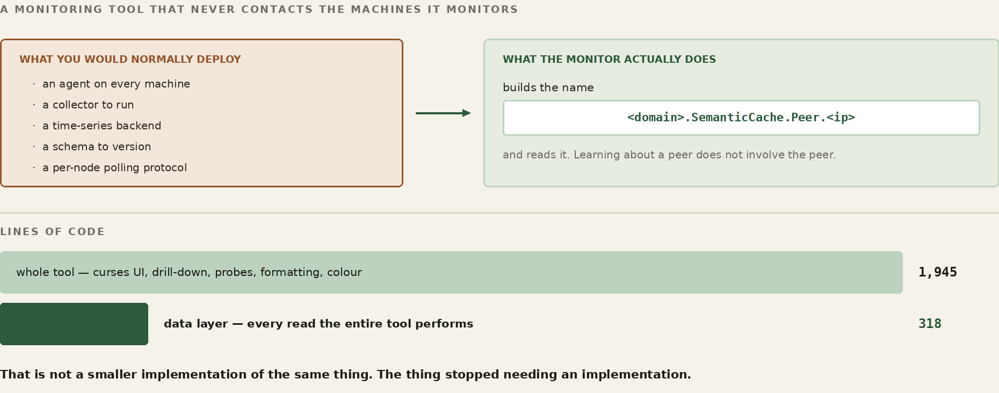
FrogNet_monitor runs on a node and reports the mesh from that node’s point of view. Every host it knows, each one’s state, and the live telemetry behind the state: current round-trip time, P50 and P95, template hit ratio, bytes saved, and the effective bitrate against the actual one. A host reads as online or degraded — degraded meaning its round-trip has gone past 250 milliseconds — or as idle or down. Drill into a host and you get its sensors, straight out of FrogNet Memory, which is the same read any other consumer would make.
The pair of bitrates is the number to read first, because it is the compression argument stated as arithmetic. Effective bitrate is what the traffic would have cost as ordinary request and reply. Actual is what crossed. On a node carrying the database the gap is widest, because that is where the repeated traffic concentrates — the same questions, the same answers, over and over, which is exactly the shape BLDC-1 was built for.
WORKED EXAMPLE — One evening, Seattle 5 to New York, read off the monitor
compression 97.2% same hit rate 99.4% templates hit for everything held errors none coalesced 707 messages Seattle 5 (database host) effective 32 kbps what REST would have cost actual 686 bps what crossed the wire saved 20.1 MB
The monitor is a static view. To make the network work, run pipe_workload.py, which takes a target host, a workload type, and a count:
$ pipe_workload.py frognethost.newyork1 echo 300 $ pipe_workload.py 10.102.60.1 chat 300
It drives four phases against that target and reports each one. Direct to Apache bypasses FrogNet entirely and calls the web server on its own port — the control. Hot runs the identical requests through port 80, the proxy, and the compression engine, serially. Ramp raises concurrency so the daemon has something to coalesce. Burst fires the whole count simultaneously, which is where one execution fans out to every waiting caller.
Two workload types matter for what they exercise. echo is the same question every time, so it drives SAME almost exclusively and shows you the ceiling. chat shapes the traffic the way real conversation does, with roughly a fifth of it non-message noise, so you get SAME and DIFF mixed and the codec is genuinely working rather than answering from one template. If you only ever run echo, you have measured the best case and should say so.
WORKED EXAMPLE — A run to New York 1, and a second to Seattle 3 across the internet
newyork1 echo 300
direct to Apache 4.6 req/s
hot (port 80) 8.6 req/s nearly double
burst 20.5 req/s
seattle3 echo 300 (not directly connected)
direct to Apache 7.7 req/s
hot (port 80) 19.6 req/s
burst 66.5 req/s
The workload types include a large-payload case: a JSON document with a handful of dynamic fields in it, repeated. It exists because the echo and chat cases can be dismissed as small-message tricks, and this one cannot.
WORKED EXAMPLE — Seattle 6 to New York 1, over the internet tunnels
1 MB JSON, six dynamic fields
direct to Apache 0.9 req/s
hot 4.4 req/s 25 diffs
92 KB sent, not 31 MB
burst, 300 at once 4.4 req/s 279 ok, 21 timed out
38 KB sent, not 347 MB
Thirty-eight kilobytes in place of three hundred and forty-seven megabytes, and the request rate goes up by a factor of five while doing it. Those are the same fact: the payload is what was making it slow, and the payload is almost entirely structure that both ends already had. Six fields moved. Everything else was a template the far end could rebuild.
This is the case worth reproducing before believing, and the person who ran it says so: the numbers were checked twice on the way to being printed, because a five-fold throughput gain on a one-megabyte payload does not look like a plausible result until you understand that the megabyte never crossed.
The twenty-one timeouts are not hidden and should not be. They are a client-side deadline on a three-hundred-way burst, and the answers very likely arrived after it expired. A failure to wait is not the same as a failure to serve, and the tool reports it as what it is.
The ramp phase climbs, reaches a point around concurrency ten, and drops back. It does this consistently, run after run, and I do not yet know why. It is in this chapter rather than out of it because a measurement tool that only reports the flattering numbers is not a measurement tool.
One clue is worth writing down, because it narrows the search. The large-payload run does not do it. On the one-megabyte case the ramp climbs and keeps climbing — no peak, no fallback. Whatever produces the dip is therefore not simply “too many requests in flight”, because the megabyte run has the same concurrency and does not suffer. It is something about many small requests specifically, which points at per-request overhead rather than at bandwidth or at the coalescer.
That is as far as the reasoning goes without instrumentation, and the instrumentation has not been written. If you reproduce it, or you work out what it is, that is a seam worth owning.
WATCH
FrogNet Memory Backing Store — open MySQL and see where the bytes actually live
Everything in this part has been about proving FrogNet to yourself. There is a second use for the same machinery, and it is the more interesting one: using it to compare programming surfaces against each other, by measurement rather than by argument.
The claim this book makes is that describing conversations is a surface, and that a higher one exists. That is exactly the kind of claim people are right to be sceptical of, because it is easy to assert and hard to check. The simulator is what makes it checkable — and note that it is the SAME simulator, executing the same real discovery, routing, election, convergence and recovery code. No second laboratory is built for the purpose, because a laboratory built to prove a point is not a laboratory.
Take a real distributed system whose source is public. Model it three ways, changing exactly one thing at a time.
Identical topology, identical workload, identical failures, identical correctness checks, across all three. Anyone can inspect the model, change the assumptions, rerun it, and disagree with the result — which is the only property that makes any of it worth publishing.
The middle arm is the one that keeps the exercise honest, and it is the one most likely to come back flat. "Not much changed" is a real possible outcome, and publishing it is what earns any belief in the third. A body of work that only ever reports the flattering arm is not a body of work.
Not throughput. Engineering cost. How much code exists only to support communication. How much testing validates communication rather than correctness. How much debugging reconstructs conversations instead of inspecting state. How much architecture exists solely because applications must describe who talks to whom.
Countable things: communication code, synchronisation logic, retries, message types, endpoints, ownership transfer, integration complexity, mock infrastructure, failure surface, convergence behaviour.
Two disciplines make those numbers mean anything. Publish the classification rule before the counts — deciding what is "communication code" is a judgement about every file, and making it case by case is grading your own homework; write the rule once, apply it mechanically, and report how many files were genuinely ambiguous. And name the asymmetry yourself: the original was written under deadlines, staffing constraints and changing requirements, by people who did not know the answer. The re-expression is written afterwards, by advocates who do. That does not invalidate the comparison, and pretending it is symmetric will be noticed.
Only systems whose source is public, built by their own documented process. Repository, commit hash, build date, toolchain versions and the machine it ran on, recorded in the study rather than in a footnote — a study against "the current version" is unreproducible six months later, and reproducibility is the entire claim.
If a project does not build clean from a fresh checkout, say what was needed. Not as a criticism: the next person reproducing the work needs the same steps, and "three things had to be patched" is itself a fact about the surface.
Some of the most instructive systems are commercial, and there is nothing to check out. Those still have something to offer — but they are predictions, not studies, and the difference has to be visible on the page.
A prediction from someone who has built that class of system is real evidence of a particular kind. It says: here is what the surface forced ME to build, three times, and here is what I believe changes. What it must not do is wear the clothes of a measurement — no counts, no percentages, nothing that looks like a result. State the belief, state that it is unproven, and state the method by which it could be shown wrong.
That last part is what makes it worth publishing at all. A prediction with a stated test is a claim someone can hold you to. A prediction without one is an opinion.
Part IX introduced the sensor platform — a machine that collects readings and pumps them into FrogNet Memory. This part is the mechanism underneath it, on both ends. First how a node gathers its own state, shapes it, and writes it in without ever waiting for a reader; then how a reader pulls it back out without ever knowing who wrote it. The two halves never meet, and that is the point.
Every node is continuously describing itself. Not to anyone — there is no reporting relationship, no collector to register with, no address to send to. A node measures what it can see of itself, shapes the measurement into a named row, and writes that row into the shared memory. Whether anything ever reads it is not the writer’s concern and does not change what it does.
That indifference is what makes the telemetry cheap enough to leave on. A node with no dashboard open pays exactly what a node with six open pays. Nothing fans out, nothing subscribes, nothing is pushed. The reading end of this is the next chapter, and the writing end does not know it exists.
Every reading is filed under a name of the form <domain>.<Type>.<Metric> — NY1.System.Perf, Seattle6.SemanticProxy.Engine, Seattle2.SemanticCache.Peer.10.160.160.1. The leading element is the node’s FrogNet domain, and it is not decoration: it makes a node’s entire telemetry — including its own view of every peer — exactly the set of names beginning with that domain. One prefix, one node, no ambiguity.
The name is built from the node’s canonical identity, not from hostname. Every FrogNetHost answers to the same hostname, so a name built that way would collide across the whole pond. The publisher asks getFrogNet.bash for the authoritative identity and derives the domain from that.
Alongside the name each row carries an address and a network. The address is the node’s FrogNet host path. The network is the stable /24 derived from it — A.B.C.0/24 — and deriving it locally rather than trusting a helper is deliberate: the helper had returned host addresses where a network was wanted, and a network field holding a host is worse than an empty one, because it looks correct.
The simplest producers are shell scripts, and they all funnel through one command:
metric_upsert.sh <SensorType> <MetricName> '<jsonData>' # e.g. from the system performance reporter: metric_upsert.sh System Perf "$PERF_JSON" # or piped straight from a kernel tool: tc -s qdisc show dev ham0 | metric_upsert.sh LinkStats HAM
What that command does not do is the interesting part, and its header says so in one line: no retries, no caching, no background loops. It resolves nothing, remembers nothing between calls, and holds no state a crash could corrupt. It builds the row, posts it once, and exits with the transport’s own result.
A payload that is null, [] or {} is refused outright rather than written. An empty reading and a missing reading look identical to whatever reads them later, and only one of them is honest.
The post goes to 127.0.0.1:80 carrying Host: databasehost.frognet — the local proxy first, always, with the real destination in the header. A sensor writer that opened a socket to the data host directly would work and would also bypass every hop-by-hop FAST-to-SEMANTIC conversion between here and there. The telemetry rides the same compressed path as everything else because it enters by the same door.
No producer waits for a consumer, and no producer is on the request path of anything a user is doing. There are three shapes and every sensor in the tree is one of them.
systemd service that samples, writes, sleeps, repeats — the system-performance reporter samples for a second and posts every thirty, under Restart=always, so the sampling outlives any single failure.The third is where the volume is, and it earned two refinements worth carrying into anything you write.
One batch, not one call per metric. A tick collects every sensor the proxy has — endpoints, one row per peer, topology, link quality, the engine totals, pipeline stats, Apache workers, routing resilience — into a single list and sends it as one write. Each used to be its own resolve, its own write, its own verifying read, with a pause between peers; a node produced a multi-second burst of dozens of requests every tick and the single elected data host answered the fleet with 503s. One round trip, fire and forget, no read-back: a dropped telemetry sample self-heals on the next tick, and a verify that costs the pond its data host is not worth having.
Start on a random phase. Each flusher sleeps a random fraction of its interval before its first tick. Without it, nodes started by the same install script fire on the same wall-clock boundary forever and arrive at the data host together — the fleet’s whole write load compressed into one instant of every thirty seconds. A one-time offset spreads it across the interval and never needs adjusting again.
And the whole thing is wrapped so it cannot hurt the node. A snapshot that throws is reported and skipped so one bad metric does not cost the batch; a batch that fails to send is logged and dropped. Telemetry never disturbs the thing it is measuring.
Peers age out of the proxy’s statistics after an idle period, and the rule has one exception with a reason. A .1 address is a FrogNet host identity and is never aged out, however quiet it goes. Everything else — a phone that took a DHCP lease, a browser that probed once, a decommissioned box — is eligible, because otherwise a single one-time interaction produces a peer row forever. One node accumulated four hours of failed probes to an address it had spoken to exactly once, and published a peer sensor for it the whole time, so every dashboard in the pond drew a peer that was not there.
The age-out runs after the batch goes out, not before, so a peer about to be dropped still contributes one final reading. A real node that dies should leave a last data point behind rather than vanishing from history mid-sample.
A node that is partitioned keeps measuring and keeps writing; its rows land in whatever data host its side of the split elected, and reconverge when the halves rejoin. A node with no reader attached does the same work as one being watched by six. A reader that arrives late finds the current state waiting rather than having missed a broadcast. None of that needs arranging — it falls out of writing facts into memory instead of sending messages to subscribers.
WATCH
Communicator and Shared Memory — a program that reads and writes the shared store
WATCH
The FrogNet Monitor — reading FrogNet Memory with two calls and a name
The last chapter wrote. This one reads, and it is the clearest program in this book to learn from because reading is all it does. It opens no store, keeps no database, holds no state that outlives a keystroke, and owns nothing. Everything it puts on the screen it took out of the shared memory a moment earlier, with the same two calls any application of yours would use — and it does not know, and cannot find out, which node wrote what it is showing you. Run it and you are watching the pond think.
It is also the network’s test program. A dashboard that paints means the local proxy answered, the local daemon carried the request, the elected data host served it, and the sensors on the far side were published — the entire semantic path, end to end, exercised once every few seconds by something you can watch. A column that goes blank is a layer telling you it stopped. That is why it lives on every node: not as a convenience, but as the standing proof that the machinery underneath is working.
Start it with python3 -m frognet_monitor. It is a curses program: arrow keys or j/k move down the peer list, Enter opens that node’s sensors, Enter again opens one sensor’s full JSON, Esc backs out a level, q quits, and M starts a merge.
Before it can read anything the Monitor has to know which node it is standing on, and it derives both halves of that from the machine rather than from configuration of its own. The domain comes from domain= in /etc/dnsmasq.d/opts_only.conf — the same single source of truth the rest of the node uses for its name — falling back to /etc/frognet_domain and then the hostname. The address comes from ip -4 -o addr show, taking the first 10/8 address that is not in 10.253.0.0/16 (tunnel transit) or 10.254.0.0/16 (chorus virtual). Those two ranges are carried by the node but are not the node; a monitor that picked one would compare every peer against an address nothing else routes by.
The parsing is deliberately split from the reading. parse_local_ip_from_ip_output() takes the command’s output as a string and returns the address; it runs no subprocess and touches no file. parse_etc_hosts_content() does the same for the hosts file. Both are pure functions, and the simulator calls exactly the same ones the live node does — so the parser is exercised under test rather than a re-implementation of it being exercised. When you write your own reader, split it the same way.
Discovery asks http://127.0.0.1/getHosts.php first, and falls back to parsing /etc/hosts if that fails. The fallback keeps the same filter the whole system keeps: a line counts as a FrogNet host only if its address is in 10/8, is not in the two reserved ranges, and carries a FrogNetHost.<name> alias — and the name that comes back is the part after FrogNetHost., which is the node’s domain. That matters more than it looks, because the domain is the key everything downstream is filed under.
Every reading the Monitor takes goes to one place — http://databasehost.frognet/api.php — and never to an address. The elected data host floats, and the whole point of the name is that you do not have to know where it went. The Monitor resolves nothing itself and hardwires nothing; it asks for the name and lets the pond answer.
Behind that name are two tables, and their names are older than the idea they now carry. FrogNet Memory began as a place to put sensor readings, so the tuple tables are called sensors and sensor_data — and they are the tuple tables for everything, not just sensors. A game lobby, a call roster, a program's shared variables: all of it lands in a row whose column is named SensorName. Anyone reading api.php will hit that within a minute, so it is said here rather than left as a surprise. The name is legacy; the mechanism is general.
Behind that name are two tables. sensors holds the metadata — SensorID, SensorName, SensorType — and sensor_data holds the payload, SensorID and jsonData. They join on SensorID, and so every read is two steps: look the name up to get the id, then fetch the payload by id.
# step 1 — name to id
GET /api.php?entity=sensors&action=list&SensorName=NY1.SemanticProxy.Engine&limit=1
-> [ { "SensorID": 4417, "SensorName": "NY1.SemanticProxy.Engine", ... } ]
# step 2 — id to payload
GET /api.php?entity=sensor_data&action=get&SensorID=4417
-> { "SensorID": 4417, "jsonData": "{ ... }" }
Responses arrive in an envelope — {"ok":true,"rows":[...]} for a list, {"ok":true,"row":{...}} for one — and a single helper unwraps it so no caller repeats that shape. jsonData comes back as a string and is parsed once, at the edge, so everything above it works with a dict.
Sensor names are hierarchical and rooted in the domain. This node’s own telemetry is named for this node, and its view of each peer is named for the peer — which means a node’s complete telemetry, including how it sees everyone else, is exactly the set of names beginning with its own domain.
<domain>.SemanticProxy.Engine — the proxy’s own counters, drawn in the engine panel.<domain>.SemanticDaemon.Cache — the daemon’s cache telemetry, drawn beside it.<domain>.SemanticProxy.LinkQuality — a snapshot with a peers sub-dict keyed by peer address, carrying success rate, rtt_ok_p95_ms, and the saturation ratios that colour each peer’s status.<domain>.SemanticCache.Peer.<peer_ip> — one per peer: round-trip percentiles, cache hit rate, bytes saved, effective against actual throughput.Opening a node’s sensor list filters server-side, with SensorName__like=<domain>.%, so only that host’s rows cross the wire rather than a table of thousands. The rule that governs it is worth carrying into your own code: match on the name and nothing else. An earlier version also merged a query on SensorAddress matching the peer’s /24, and a /24 is a network, not a host — every node sharing that network leaked its rows into the list. The name is the only key that is exactly one host.
The per-peer fetches run one thread each and are joined with a timeout, so a peer that has gone quiet costs the refresh nothing but its own row.
Two markers on the dashboard say who is who, and they are independent — a node can be both, one, or neither. databasehost.frognet is the elected data host, the box the whole pond is reading and writing through, and it floats. databasehost_control.frognet is the deterministic highest-.1 that every election reads, and it does not float. They are frequently different machines, which is exactly why each needs its own marker.
Both are resolved from /etc/hosts and never from the resolver, because in practice the two disagree — on one node the file said 10.250.250.1 while gethostbyname said 10.130.130.1. The file is what every other component routes by, and a monitor that highlights a different box from the one the traffic goes to is worse than one that highlights nothing. The lookup is cached on a short TTL because the role floats and the draw loop repaints far faster than the answer can change.
And when /etc/hosts cannot be read at all, the reader raises rather than returning “no name found.” Those two states paint identically — no marker on any row — and they are entirely different problems: one is a pond with no data host elected, the other is a monitor that has gone blind. The decision to carry on without markers is made once, explicitly, in the draw loop that catches it, and never buried in the reader.
A merge degrades the node while it runs, so every latency and hit-rate figure on the screen is suspect for its duration. The title line says so, and it learns it by stat-ing /etc/sentinels/mergePending — the sentinel the merge itself maintains — rather than by scraping the process table for a script name, which reports the wrapper’s own defunct children as a live merge and disagrees with whatever the merge believes about itself.
There are three answers, not two: present, with an age taken from the sentinel’s mtime; absent; and unreadable, which is neither. The age is the interesting part — a merge that has been “in progress” for hours is a different fact from one that started ten seconds ago, and a bare boolean hides it.
Pressing M starts one. If the sentinel is already there the first press refuses and says how old it is; a second press goes anyway. The sentinel is a claim a merge makes about itself, not a lock — a merge that dies leaves it behind — so treating it as an interlock let one crashed merge disable the key permanently. Warn, then let the operator override deliberately.
The Monitor never opens a socket to the daemon’s port. Every probe is an HTTP request through the proxy on port 80, and the peer probe fetches frognet_echo.php on the peer’s address. That path runs local proxy, local daemon, remote daemon, remote Apache — so an echo that returns is proof the whole semantic chain is alive, which a bare socket connect could never be. The probes are staggered a second apart so a constrained link is not asked to answer everything at once.
The internet canary is the one deliberate exception: a direct request to a public host, not through the proxy, so “the pond is healthy” and “the uplink is healthy” stay separate answers on separate lines.
All network work runs on background threads. The main loop only draws and reads keys — it never waits on a socket. When a background pass finishes it publishes its result with a single attribute assignment onto the shared state object, so the draw path always sees a whole result or the previous whole result, never half of one. Probes run every three seconds, the heavier sensor reads every fifteen, and each refuses to start while its previous pass is still in flight.
Because curses owns the terminal, nothing prints. Diagnostics go to /tmp/frognet_monitor.log, and if that file cannot be opened the trace is dropped rather than allowed to take the interface down. Read that log when a column is blank and you want to know which of the two steps returned nothing.
There is an older shift this one rhymes with. C did not replace assembly — it uses assembly, and always did. What it changed was who could build things: you give up some exquisite control over the machine and you get back far more than you gave. FrogNet Memory does the same trade against the protocol. The Monitor is the shortest demonstration of it in this book, because there is no protocol in it at all — only names, reads, and a screen.
FOR THE GUILD
The Monitor is the shortest path into FrogNet Memory that exists, which makes it the shortest path into contributing. Read it, then write your own — a web dashboard, a phone client, an alerting daemon, a status page for a building. None of it needs our permission and none of it needs the engine: it needs two HTTP calls and a name. If your reader shows something ours cannot, that is the interesting outcome, and the oracle beside it is where you show that the architecture still holds.
Two doors. To talk about it — this book lives in a public repository and its Discussions are open at github.com/FawcettJohnW/FrogNet-Living-Network/discussions; no licence is needed to argue there. To build on it, the licence page is fawcettinnovations.com/license — ask, and if you want to work on something, say so and say which. The questions are optional and the licence does not depend on them.
The Monitor is perhaps two thousand lines, and most of it is drawing. The part that talks to the network is small enough to read in a sitting, and it is the part worth copying: ask for a name, never an address; look up the id, then fetch the payload; filter on the server with the key that is exactly one host; parse in pure functions the tests can call; put the network on a thread and the screen on the main loop; and when you cannot tell what is true, say so on the screen instead of painting a clean answer over an unknown.
Its oracle is in the package beside it and runs the same way everything else in this book does:
$ PYTHONPATH=/usr/local/bin python3 -m frognet_monitor_py.test_merge_oracle === 10 passed, 0 failed ===
Ten goals, pinning the sentinel as the source, the three-state reading, the age formatting, the caching, both refusal paths on M, and the indicator’s place on the title line. Run it against the build you were delivered. Red means the code has drifted from the architecture this chapter describes, and the pass is the thing that says so.
You now have both halves of the work. Part X gave you the interface — one object, a few virtual slots, registered once. Part XIII gave you the discipline that says a change is not done until an oracle that was red goes green. This part puts them together the way you will actually use them: we build a handler from nothing, watch it run a whole game as reads and writes of one shared board, and then open the hood on a bigger one and fix two real bugs in it — the way you work on a frog, oracle first. And this is the seam where the book stops describing an organism and hands you the means to extend one.
Everything you build on FrogNet is the same four declarations, and it is worth saying them once more with a handler in front of you, because they are the handler. You declare the shape of the data, the freshness of each field, where authority lives if anywhere, and what a received value means. The rest — the retries, the ordering, the reconnect, the deduplication — you do not write, because the substrate already did.
Two rules from the model govern everything in this part, and breaking either is how the old message-passing world sneaks back in. The first: a participant writes only its own object. A player states intent in a value that is theirs; it never writes the board and never writes another player’s object. The second: the governor is the one writer of record and the only unforgeable authority. It owns the dice, the turn gate, the seating, and the legality of a move — a player cannot fake a roll or seat itself by writing memory, because the engine simply ignores any value it is not allowed to write. Hold those two and a multiplayer game is just reads and writes of a shared board; let go of them and you have rebuilt a request/response server with extra steps.
One more property falls out of those rules and matters for the bug we fix later: because a participant only ever reads the board to render it, a reader who never writes is a spectator, for free. Watching is not a feature you add to a game; it is the absence of a seat.
Tic-tac-toe is the smallest honest example, because it has a board, two players who must take turns, and a rule a client must not be trusted to enforce. Here are its four declarations.
LATEST_ONLY for the board — only the current position matters; a stale one is dropped. LOSSLESS_EVENTUAL for a move — every move must land, exactly once, in order per player.<game>.frognet. Turn-based play is elected pond-wide.A move is an ordinary write — the same _game envelope you met in Part X — into the player’s own intent object. Nothing is sent to the other player; nothing is sent to a server in the request/response sense. The value changes in shared memory, and the engine, watching its region, notices.
WORKED EXAMPLE — A move is a write to your own intent
# Player X states intent — a write to X's OWN object, not the board
POST <game>.frognet/api.php?entity=move&action=upsert_by_name
{ "_game":1, "game":"tictactoe", "table":"kitchen-1",
"op":"move", "seat":"X", "cell":8, "intent_seq":4 } # bottom-right
# the engine (governor) reacts to the changed intent:
# reads X's intent, sees intent_seq 4 > consumed{X:3} -> it is new
# checks it is X's turn, and that cell 8 is empty -> legal
# marks cell 8, looks for three in a row, sets turn: O
# writes the BOARD back, and records consumed{X:4}
# keeps NO private state — what it has acted on lives in the board
That last line is the whole trick to making the role floatable, exactly as Part VI promised for the database. The engine records what it has already applied inside the governed object, so re-running its logic over unchanged memory does nothing, and if the engine role re-elects to another node mid-game, the new engine reads the same board and play simply continues. The authority moves; the game does not break.
Playing, then, is the three-line participant loop from the model, and it is the same loop the Communicator uses for a call: resolve the role name, read your region to render, write your own intent.
WORKED EXAMPLE — Playing — and watching — are both just reading the board
# a PLAYER renders by reading the board, then writes intent on its turn
board = get("tictactoe", "board", table="kitchen-1") # always current
render(board)
if board["turn"] == my_seat:
put("move", my_scope, {"op":"move","cell":chosen,"intent_seq":n})
# a WATCHER is the same first two lines — and never the third.
board = get("tictactoe", "board", table="kitchen-1")
render(board) # no seat, no intent, no cost: a reader is free
WORKED EXAMPLE — Tic-tac-toe as governed memory
Player X ---write own intent--> +-----------------+
| ENGINE | <- the ONE writer
Player O ---write own intent--> | (governor) | of the board;
| validates, | unforgeable
| cannot be |
| forged |
+--------+--------+
| writes
v
+---------------------------------+
| BOARD table kitchen-1 turn:O |
| X | . | . |
| . | X | . LATEST_ONLY |
| O | . | . governed |
+---------------------------------+
^ read (free)
Watcher ---------+ no seat, no cost
That is a complete multiplayer game: two intents, one governed board, and as many readers as want to watch. You wrote no network code. Hold this shape — it is the one every other handler is a variation on, including the one we fix next.
Now a real one. Backgammon is the same _game machinery with a heavier rulebook — and the shared board-game engine carries it alongside hearts, connect four, reversi, and liar’s dice. It also has a bug worth fixing, because fixing it teaches the model better than any green-field example could.
The symptom, exactly as you meet it. Open the games, say you want to play backgammon, and you get a board — you are hosting a table. But there is no way to join a game someone else is already hosting, and no way to watch one in progress. You can start; you cannot sit down at a started game, and you cannot pull up a chair beside one. For a system whose whole pitch is a shared board everyone can see, that is precisely the wrong thing to be missing.
Why it is a small bug, not a missing subsystem — and where it actually lives. The instinct is that join and watch are missing. They are not. Read the engine and both are already there: joining is a participant writing its own object to claim an open seat, and watching is reading the board — free and seatless, exactly as the last section showed. Both work the moment you have a table to point them at. That is the whole bug: nothing lets a second player find a table someone else is hosting. Every operation the engine offers is keyed by a game id you must already hold, and hosting hands that id to no one. The missing piece is not a way to sit down — it is a way to discover where the chairs are. We are not building reachability (the network’s job, done), and we are not adding join or watch. We are adding the one thing absent: a way to enumerate the live tables.
Work like a frog: write the oracle that fails first (Part XIII). Pin the real gap — a second player who was told nothing must find an open table — with a test that goes red against the engine as it stands.
WORKED EXAMPLE — An oracle: discover an open table knowing only the game
# Ada hosts a table. Bao is told NOTHING about it - no table id.
engine.host("backgammon", seat="X", who="Ada") # a board appears
# Bao knows only the SERVICE. To sit down, Bao must FIND a table.
tables = engine.open_tables("backgammon") # the missing op
open_ids = [t["table"] for t in tables if t["open"]]
assert open_ids, "Bao can discover Ada's open table"
# old engine -> no open_tables(); Bao can find nothing assert RED
# new engine -> the open table is listed, Bao can join it assert GREEN
The fix — let a player find an open game. This is the whole change, and it is a read, not a registry. The engine already governs every live board; enumerating them is asking it for the ones with a seat still open — open_tables() in the shared engine, one more read over memory it already holds. No new state, no broadcast, no new transaction.
WORKED EXAMPLE — op:"list" — the lobby is just a read
GET <game>.frognet/api.php?entity=game&action=list&game=backgammon
[
{ "table":"kitchen-1", "seats":{"X":"Ada","O":null}, "open":true },
{ "table":"porch-3", "seats":{"X":"Cy", "O":null}, "open":true },
{ "table":"den-2", "seats":{"X":"Mo", "O":"Pat"},"open":false }
]
# the lobby UI renders every board with open:true. that is the whole feature.
Join already works — now it has a table. Joining was never the gap; it is a participant intent, governed exactly like a move. The requester writes a join into its own object; the engine — the only thing that may write the board — checks the seat is genuinely open and seats them. A client cannot seat itself by writing the board, because the engine ignores any board write that is not its own. Authority is preserved precisely because join goes through the governor, not around it.
WORKED EXAMPLE — op:"join" — claim the open seat, through the governor
# Bao writes a JOIN intent into Bao's OWN object (not the board)
POST <game>.frognet/api.php?entity=move&action=upsert_by_name
{ "_game":1, "game":"backgammon", "table":"kitchen-1",
"op":"join", "who":"Bao", "intent_seq":1 }
# the engine governs the join the same way it governs a move:
# is the table real? is seat O actually open? -> if not, ignored
# seat Bao at O, write the board with both players, record consumed
# Bao now plays with the ordinary three-line loop from section 43.
# the oracle above is now GREEN.
Watching already works too. A spectator is a reader with no seat, and the engine already exposes the board to every reader — nothing had to be added. Once you can discover a table, reading the board of one you have not joined is watching.
WORKED EXAMPLE — Watching — a reader with no seat
# open any table read-only: render the board, write nothing, ever.
board = get("backgammon", "board", table="den-2")
render(board) # update every time it changes — an unchanged read is ~free
# no seat is consumed, no intent is written, anti-cheat is untouched.
# this is the SAME property as a SotF watcher (Part X): receive, never inject.
WORKED EXAMPLE — One board, three roles
LOBBY (op:list) THE BOARD kitchen-1 roles
+-----------------+ +----------------------+
| kitchen-1 open |--->| seat X : Ada |<--- HOST (op:new)
| porch-3 open | | seat O : open -> Bao |<--- JOIN (op:join)
| den-2 full | | turn : X |
+-----------------+ +----------------------+
a read read-only, no seat ---> WATCH (infinite)
none of the three is a new transaction: two intents and a reader.
The lesson, and why it is in this chapter. Notice where the fix was not. This is the chapter on writing a handler, and the bug was not in the backgammon handler at all — its rulebook was complete. It was one layer down, in the shared board-game engine every game stands on: the enumeration that lets a player discover a live table was simply absent. That is why a single change gives a lobby and spectators to backgammon, hearts, connect four, reversi, and liar’s dice at once — open_tables() lands in the shared engine, not in any one game. And it is the deeper habit the whole book has been building toward: when a symptom is not handler-shaped, read under the handler. The fix added no new transaction — discovery is a read over memory the engine already held, and join and watch were already there, waiting for a table to point at. One read; every game gains a way in.
That is what it means to work like a frog: you did not design a lobby protocol or a spectator service. You noticed that the board was already shared and the seats already worked, wrote the oracle that proved the real gap — no way to find a table — and closed it with a single read the model already had a name for. The engine you just extended sits beneath the same handlers the whole user-facing surface is built from — presence, chat, media, and games, each a handler over the one interface. That surface is the Communicator, and it is where the book ends.
Every term of this book at once, in one application. The Communicator is alive — it finds a call rather than being told where one is. It has memory — every participant publishes what it alone knows. It learns — the wire carries differences against a structure both ends hold. It grows — a bundle installs and the node can do something new. And it is wrong in places, which is the last term and the reason the next part exists. It is a very complicated Hello, World, and its job is to touch every layer so the layers get tested.
WATCH
The Communicator — the flagship application, and the ladder on camera
Everything in this book has been building toward one thing, and here it is. The Communicator is a video phone — it places audio and video calls, and it is where Song of the Frogs stops being a chapter and becomes something you watch adapt on a screen. It is also a games host and a chat host: the same handlers from the last several chapters wearing a face a person can use. And it is, above all, an example program — not the product, but the worked proof that discovery, the two database planes, UnREST, FNWP-1, the handlers, and SotF all compose into one application someone actually opens, and a program you can read end to end to learn how to build your own.
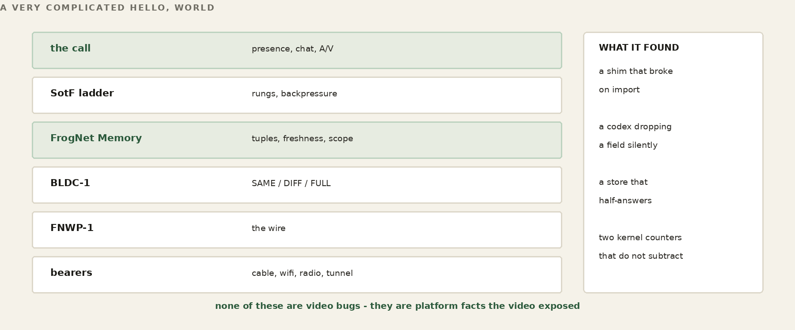
This chapter is not a description; it is a specification you can run. It comes in three parts — the basics common to everything, the video phone, and the games — and each part does two things: it states the proper architecture for starting and joining, and it ships a simulator pass that verifies that architecture holds. The passes are real oracles from the source tree, run here exactly as you can run them yourself. That distinction carries more weight than it looks, and the end of Part I says why.
Under the video phone, the games, and the chat is one shared foundation: the hardware you speak and see through, the identity you carry, and the presence that says you are here. Get this part right and the rest is handlers.
Installing it. There are two installs, and they are for two different things.
install_mediahost.sh makes a target machine a media host — the server that brings the parties of a call together and builds the combined video, transcoding and relaying the SotF-ACP A/V on :9000. It installs ffmpeg with libvpx (the hard requirement), the A/V server, a systemd service, and a timer that publishes the machine's mediahost/capability so the election can score it — a media host is a candidate, not a coronation, and the best-scoring one wins. It is run as part of the bundle installation on a FrogNetHost, but nothing requires it to live there: the media host does real work, and you may well want it on a separate, more capable machine.
The client installs are the other thing entirely — the zip on Windows and the tar on Linux — and they install the Communicator application, the thing a person runs, on whatever machine you choose (in time, that includes the phone). This is the install that makes and joins calls, and where the media host happens to be running has nothing to do with it. The package carries the app and exactly the local support files its entry points import — verified by a closure oracle that fails loudly if one is missing — while the heavy external pieces a desktop supplies on its own (OpenCV, PortAudio, the codecs, Tk) are listed as requirements, not bundled.
Finding your camera, microphone, and speakers. Before there is a call there is hardware, and you find all of it with one command — fnav.py --list. It prints two sections. The first is the audio devices: the full PortAudio table, every input and output the machine has — your microphones and your speakers together — each with the index and name you will hand back to the call. The second is the cameras, and it is deliberately not a directory listing. It is a live probe: FrogNet opens each camera index in turn, exactly the way a real call will, pulls a frame, and prints only the ones that actually open — each shown as the precise --cam N you would type, with the resolution it reported.
That probe is the whole lesson. There is no honest registry of cameras on a Linux box: one physical camera can expose several /dev/video nodes, and most of those nodes are not capture devices at all. So /dev/video* is not a reliable map and FrogNet does not use it — the OpenCV index is authoritative, and if a camera shows up at more than one index you take the lowest that reports a resolution. A node that opens but hands back no frame is named as exactly that rather than offered as a camera. Prove the device by using it, not by trusting the list; and while it probes it swallows the console noise the V4L2 and FFMPEG layers spit out, because that is not the user's to read.
Audio is chosen the same forgiving way — by index, by a piece of the device's name, or by nothing at all for the system default — but naming a device is not trusting it either. Before the call opens a single stream it asks the device whether it can actually do what the call needs, the channel count and the sample format and the rate, and only then opens the input and the output. Ask first, open second; a device that cannot do the job is found out now, not three seconds into a call.
And the lesson that ties straight back to the ladder: you do not need a camera at all. Receiving and displaying a call needs none — only sending does — so a mic-only machine ceilings at the voice rungs and is a full participant there, and a machine with neither can still watch and listen. What you have is your ceiling, and the call meets you at it.
Joining the server. There is a server — your Host, the elected node that holds the pond's roles — and you tell the Communicator which one the same way you told it your name: a small saved config, who am I and which Host. But joining it is not a request the server grants. You do not log in; the server hands you no session; there is no roster you are added to. You write your presence into the shared memory — one transient tuple that says this identity is here, as of now — and you keep writing it, refreshed on every poll, and everyone reads everyone else's. "Online" is a fact you keep asserting; "offline" is the absence of a fresh assertion. No logout to send or miss, no DELETE: stale is gone. A server that crashes and returns loses nobody, because it never held the roster — the roster is the set of fresh presence tuples. Memory, not messages: you joined by remembering yourself out loud, where everyone could hear. And it is verified, not merely asserted:
$ python3 test_presence_freshness_oracle.py === 4 passed, 0 failed ===
That oracle pins what makes presence honest — a departed identity ages out of the roster instead of lingering forever. It is green.
Describe the architecture, ship the oracle, verify the code. Here is the discipline this whole chapter runs on, and it is the most important thing in it. The book describes the proper architecture, and for every load-bearing claim it ships a simulator pass — an oracle that goes red on code that does not comply and green on code that does. The architecture is the specification; the oracle is the judge. The delivered code is a separate thing, and it may not yet comply: a build falls behind, a rename slips, a handler goes missing, an AI writes a plausible-looking version that is subtly wrong. That is expected, not alarming — it is exactly what the oracle is for.
So you are encouraged to do what we just did: run these oracles against the code you were delivered. Where one is red, the delivered code is out of compliance with the architecture — and the fastest way to close the gap is to hand the failing oracle, the delivered source, and this book's primer to an AI, and have it bring the code into compliance against the oracle rather than against a guess. The oracle is what keeps the assistant honest: it cannot claim the work is done while the pass is red. Prove, do not assert — for the code, and for whatever is working on the code.
Here the two planes from Song of the Frogs stop being a diagram and become a phone call.
Starting and joining a call. You start a call, and the Communicator writes one tuple — a create-stream intent — into FrogNet Memory. It opens a socket to no one and calls no server on a known port; it writes a fact and waits for the fact to be answered. The elected media host, watching that space, sees the create-stream tuple and does the work: it allocates a connector for this session — its own ports, because a dozen simultaneous calls cannot share one — and publishes the connection information back into FrogNet Memory. The other participants, each watching the same memory, read the port out of the tuple and open the dedicated A/V socket to it. There is no first-contact handshake on a well-known port, no negotiation, no SIP-style dance: FrogNet Memory is the only discovery path. You announced the call by remembering it; the host answered by remembering where to connect; everyone else found it by reading.
When the participants are connected the split goes total. Control — who is in the call, where the sockets live, the per-endpoint state — stays in the tuple space, converging full to diff to same. The audio and video go elsewhere entirely: a second, dedicated socket per leg, FNWP-1 framed, carrying nothing but media, fire-and-forget, drop-don't-block. The two never cross. This is the cut doing real work: the media host reads every leg's channels, routes each producer's video to its own place and mixes all the audio into one, and fans the result back to each person minus their own face and voice — with Song of the Frogs riding on top, each leg sending its ceiling rung and stepping down or climbing back on its own link.
You can join with nothing but a screen — receiving a call needs no camera — so a camera-less machine is still a full participant. That too is verified, not promised:
$ python3 test_recv_only_vdec_oracle.py ORACLE GREEN: receive-only client decodes inbound video
A game is one tuple: a board, its seats, and whose turn it is, living as a single transient row under the elected board-game role host. Everything the last two chapters built — the handler, the shared board, the seats — is already here; the Communicator only gives it a lobby and a face.
Starting and joining a game. Starting a table writes that one tuple. The subtle part — the part easy to get wrong and easy to verify — is joining. Every operation on a game is keyed by its id, so a player who already knows the id can sit down. But a second player who walks up knowing only "I want to play backgammon" must first discover an open table. The proper architecture gives them a way to enumerate the live tables of a game and choose one; then joining is just taking an open seat. That is the whole join story, and it is green:
$ python3 test_lobby_discovery_oracle.py LOBBY-DISCOVERY ORACLE: PASS
A second player, knowing only the game and not the id, discovers an open table and is seated at it. The architecture above is the specification, and that pass is its proof.
One caveat you need before you run it yourself: in the build delivered alongside this book, the games may not launch as they stand — not because of the architecture, which is correct and verified here, but because the delivered game code was generated with the kind of subtle defect an AI can introduce and an oracle will catch. Treat this part as the specification, not a finished demo, and take the path Part I laid out: run the lobby oracle against your delivered code with a primer-loaded AI, and bring the code into compliance. The architecture is sound; the proof is green; the delivered code catches up to both.
Chat is the same story with a smaller payload and a stricter promise — every line must land, though it may land late — one more handler over the one interface. Build the call and the game and you have already built it. That is the whole point of working like a frog: one interface, one set of rules, and everything you add is another handler that plays by them.
The ladder in Part VII tells you which rung a call should be on. This chapter is about the thing underneath it — the socket the frames actually go out of, and the rules that govern it. They are short, and every one of them was written after a failure that looked like something else.
The data plane is a non-blocking TCP socket, and the write is the test. A frame is offered to the socket; if the kernel will not take it, the frame is discarded and the next one is offered instead. There is no send queue, no retry buffer, and no pacing thread. A frame that could not go out at the moment it was ready is a frame that is already stale, and the correct thing to do with it is forget it.
The rule sounds obvious and is easy to violate by accident, because the obvious-looking alternative is to ask the kernel first: query the free space in the send buffer, and only write if the whole frame fits. That is what select() writability appears to offer, and it is a trap. select reports a socket writable when the buffer has some room — SO_SNDLOWAT, which is 2048 bytes on Linux and 1 on Windows — not room for your frame. A keyframe is tens of kilobytes. So select says yes, the write starts, the buffer fills, and the write blocks.
That is worse than it sounds, because the write is taken under a lock that serialises whole frames onto the shared socket. One blocked write parks every other producer behind it. The symptom is not a slow video window; it is one window frozen while another crawls, on a machine whose CPU is idle. Measured, and fixed by removing the query and letting the write itself answer the question.
What about the buffer query, though? On Linux you can compute free space as SO_SNDBUF minus SIOCOUTQ, and the media relay does exactly that. It is not portable — fcntl and termios do not exist on Windows, where the call returns -1 — and it is not exact, because Linux reports SO_SNDBUF at roughly twice the usable size. Any code that trusts the raw value lets through frames between usable and twice-usable, which then partially write. Halve it, or do not ask.
The stream is length-prefixed. Once any byte of a frame is on the wire, the frame is committed: the receiver has already read a length and is waiting for exactly that many bytes. Abandoning the write there does not drop a frame, it truncates one — and the receiver decodes whatever arrived.
This produces a distinctive and thoroughly misleading symptom: the far end shows a picture whose top is fine and whose bottom is green, while the sender reports full frame rate and zero drops. The sender is telling the truth. Nothing was shed. The bytes it sent were incomplete, and the decoder concealed what was missing — untouched YUV renders green.
So the whole-frame decision belongs strictly before the first byte, never after. A frame larger than the send buffer is refused outright, because it can never go out whole and attempting it guarantees a partial write. A frame that fits is attempted; if the socket refuses it outright, it is a clean drop. Only if a write returns a partial count is the remainder mandatory, and then it is finished — it cannot proceed otherwise.
A codec sends a full reference frame and then deltas against it. Lose the reference and every delta after it decodes against something that no longer exists, which is what you are watching when a picture smears and twists instead of stuttering. So the keyframe matters more than any frame around it.
It is also the largest thing on the wire, and that is the problem. A keyframe at any useful geometry is big enough to fill the send buffer on a constrained link, and while it is going out nothing else can. The socket will deliver it eventually, because this is TCP. In the meantime the call has stalled — and what stalls with it is the audio, which is the one thing a conversation cannot lose.
The answer is available only because of where this code sits. We own the wire and we own the data, so we can break the wire. The keyframe is cut into segments and sent one at a time; the receiver reassembles and does not display until it holds the whole thing. Between the segments go the deltas, which keep the picture current, and the audio, which keeps the conversation alive.
naive [======== keyframe ========] audio audio
^ nothing else moves for the whole span
interleaved [kf][a][d][kf][a][d][kf][a][kf] -> display
audio never waits behind the picture
That is why audio still arrives at a hundred and twenty kilobits a second while the video is visibly degraded and may freeze outright. The picture is being rebuilt in pieces around a conversation that never stopped.
WORKED EXAMPLE — Why not UDP, from somebody who shipped it
Every video protocol worth naming uses UDP, and so do game protocols — the author helped pioneer some of that at Electronic Arts. The pattern is familiar: fire five packets for every one you need, sequence-number them, receive as fast as you can, and discard or cache whatever arrives out of order. Connectionless, almost no overhead, and the receiver reassembles what it can from what showed up.
What that model does is push the decision to the wrong end. The sender commits to a rate and the receiver copes with the wreckage, which is why a degrading UDP call renders corruption rather than reduction. Owning a reliable ordered stream and choosing what not to put on it inverts that: whole frames or nothing, decided before the bytes are committed, at a boundary the sender picked. The cost is that you must never let one large object monopolise the pipe — which is exactly the problem the segmentation above exists to solve.
Audio and video began on one socket, arbitrated by a lock. Video was discarded on the first refusal; audio was retried before being given up; an audio frame the wire refused anyway armed an immediate video downgrade, because the wire refusing the smallest, most protected thing on it is the loudest congestion signal there is.
All of that was correct, and none of it was enough. A voice packet could still sit behind a forty-kilobyte keyframe, and the pause was audible. No lock ordering fixes that, because the arbitration you control is not the only one happening: the TCP send window is shared too. Win the lock and you still queue behind the keyframe in the kernel.
So there are two sockets. Audio and video are separate connections, opened together at connect and declared by their first frame. Nothing arbitrates because there is nothing to arbitrate: separate windows, separate buffers, the kernel schedules both. Audio priority stops being a scheduling heuristic and becomes a property of the topology — which matters, because it is a primary claim of the product and a heuristic can always be got wrong by the next person to touch it.
It makes the per-viewer bandwidth cap honest as well. The relay budgets the video plane and never touches the audio plane. Not by a test on frame type that could be reversed, mis-nested or forgotten — the code that sheds simply never runs for audio targets. Twice during development a branch like that was got wrong and audio was shed; the topology cannot be got wrong in that way.
"No video" is a display state, not a teardown. The video plane stays open and carries nothing, so a sender that starts muted can begin sending without renegotiating anything, and losing one plane closes the other — half a caller is not a caller.
There is no portable way to ask a socket whether n bytes will fit.
select reports a socket writable when the send buffer has SOME room — SO_SNDLOWAT, which is 2048 bytes on Linux and 1 on Windows. Not room for your frame. The one call that gives a real number is SIOCOUTQ against SO_SNDBUF, and it is Linux-only: fcntl and termios do not exist on Windows, where it returns -1.
So on a non-blocking socket a partial write cannot be prevented. sendall can write part of the buffer and then raise, and it does not report how much went. On a length-prefixed stream that is fatal: a length with no body, and the receiver consumes the next frame's bytes as this frame's payload. Every frame after it is garbage. The symptom is that audio and video freeze together while the sender reports full rate and zero drops — which sends you looking anywhere but at the framing.
It cannot be prevented, so it is recovered from. When the sender cannot finish a frame it pads the remainder of the declared length with a repeated sentinel. The receiver always consumes the full declared length, whatever the frame turns out to be, and then checks the tail: a match means the sender gave up, so discard this frame and read the next. The stream never leaves sync. An aborted frame costs one frame instead of the connection.
John's description of the mechanism is the one to keep: the TCP equivalent of a UDP rebuild, except that the segments are in guaranteed order. That guarantee is exactly what makes it cheap. UDP reassembly needs sequence numbers, a gap map and a reorder buffer, because segments arrive out of order or not at all. TCP hands you the bytes in order and complete, so the only thing that can go wrong is the sender stopping. One in-band marker covers it.
Which is also the answer to why the framing is not overhead. The length prefix is the frame boundary and the resync point: after discarding an aborted frame the receiver is standing precisely on the next prefix. It does not have to search a byte stream for anything. Checking the tail rather than scanning the payload matters for the same reason — a video frame that happens to contain those four bytes is not mistaken for an abort.
The failure that cannot be recovered from is the one where even the padding will not go: the reader is gone or wedged, and the stream is torn with no way to say so. Then the connection dies, which is correct. The sentinel narrows the window; it does not abolish it.
When a link cannot carry the stream, something has to be discarded. Discarding by size picks keyframes first, because keyframes are the largest frames there are — and a keyframe is the one frame that must not be dropped.
Every inter frame after a lost keyframe references a picture the decoder never received. What it renders is not degraded video; it is arithmetic performed on a reference that does not exist. Full pixellation until the next keyframe, which — being large — is also the most likely to be shed. A mildly constrained viewer can stay broken indefinitely, and the sender sees nothing wrong at all.
The rule, in full. Once a viewer starts shedding it is UNANCHORED. Inter frames are dropped outright — they are useless without the reference, so spending budget on them is worse than wasteful. A keyframe becomes the frame to send. If the budget will not take it yet, it is HELD, and a newer keyframe OVERWRITES the held one: the freshest picture is the only one worth resuming from, and there is no value in a queue of stale keyframes. Delivering a keyframe re-anchors the viewer and normal service resumes.
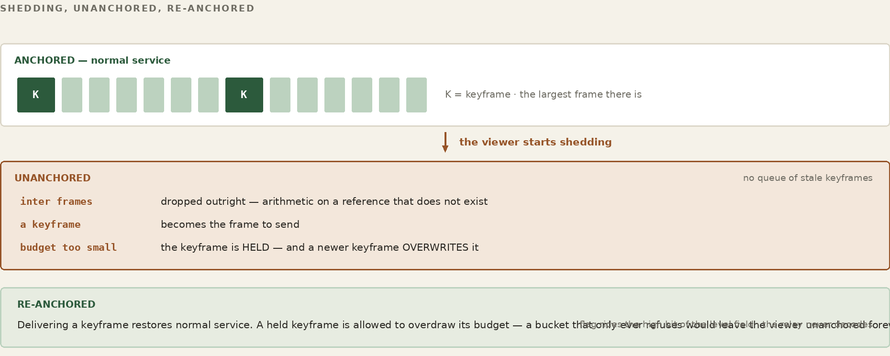
For the relay to do that it has to know which frames are keyframes, and it is deliberately content-blind — a codec-specific bitstream parser in the fan path would end that property permanently. So the flag goes on the wire, in the high bit of the level field, which carries a value of 0 to 7 and has bits to spare. No extra bytes, and the relay reads it by offset without decoding anything. The sender always knew; the information simply never left the process.
A held keyframe is allowed to overdraw its budget. A keyframe can be larger than a whole second of it — nine kilobytes against a thirty-kilobit-per-second cap is seventy-two thousand bits into a thirty-thousand-bit bucket. A bucket that only ever refuses would never let one through and the viewer would stay unanchored forever. So it goes, the budget goes negative, and inter frames repay the debt. The average rate is still honoured; it is paid in arrears rather than in advance.
The obvious way to choose a rung is to compare its bitrate against the link rate. It is also wrong, and the measurement that proves it is simple: there are links on which the arithmetic says video is impossible, and the wire was carrying it.
A rung's nominal bitrate is a guess about a link. Whether the relay can get keyframes out is a fact about it. So the ceiling follows the fact.
Saying it upstream needs one thing first. The relay fans a frame to every viewer from the pump thread of the SENDER whose frame it is — so two senders can be writing the same viewer's socket at the same moment. Reading is safe; writing is not. The first attempt at a relay-to-sender channel added a second writer to sockets that already had one, the bytes interleaved, the length prefix desynced, and every stream decoded garbage from then on. The symptom was perfect: the client reported receiving data and displayed nothing.
One lock per peer socket, held across the write, and the channel becomes possible. It is four lines and it is not optional — anything the relay ever says back to a sender depends on it.
The relay already knows. A viewer with a keyframe it cannot send is a viewer whose rung does not fit, and it reports the count upstream once a second. The sender steps the ceiling down immediately — a held keyframe already means the far end is watching pixellation, so there is nothing to wait for — and climbs back only as a probe: some seconds with nothing held, raise one rung, watch for a second or two, and put it back at the first sign of trouble.
But held keyframes alone are not enough evidence, and the reason is subtle. A held keyframe is forced through by the overdraw. So the backlog clears — while every inter frame behind it is refused, paying that debt back. The viewer sees one still picture per keyframe: an occasional blip instead of continuous video, with every backlog counter reading zero and the throughput meter reading nothing, because a keyframe every second or two rounds to nothing on a per-second average.
The signal that catches it is the one that was missing: how much is actually being delivered. The relay reports inter frames shed as well as keyframes held, and either number moving steps the rung down. A handful of shed frames is normal on a busy wire; a stream of them means the viewer is getting keyframes and nothing else, which is not video however healthy the other counter looks.
Two conditions, then, and the second is what makes the first honest: the rung fits when nothing is held and the frames between are arriving. It is the same discipline as everywhere else in this book — a number that reads healthy for the wrong reason is worse than no number, because it ends the search.
The link rate is still worth knowing — as an opening guess. A client publishes its own bandwidth setting, so it can cap its ceiling from that number before the first frame goes out. That is not the governor; the evidence above is. It exists so a call does not OPEN at 720p on a link that obviously cannot take it, and spend its first seconds discovering by failure what a single division could have told it. Where the call SETTLES is decided by what the relay reports, and the two disagree often enough to be interesting — the case above being exactly that.
There is one thing this chapter should not leave you expecting. After a keyframe overwrite there is no catching up to do: each delivered keyframe is a complete picture and the far end resumes from it directly. The blip was never a recovery problem. It was starvation of the frames in between.
Part VII describes the rungs. This is the controller: what makes it step, and why each rule is shaped the way it is. Down is cheap and fast; up is expensive and slow. That asymmetry is the whole design.
The bearer steps down immediately on any of these, and they are checked in this order:
Why both a run count and a per-second rate? The controller is sampled once per frame — about twenty-three times a second — and the drop count it reads is drained on each read. Ten drops in a second therefore arrive as ten dirty samples scattered among thirteen clean ones. A pure consecutive-run rule finds runs of both inside a single second and steps nowhere. Measured on hardware: sustained ten to thirteen drops per second, and the ladder oscillated between two rungs for minutes without ever walking down. The one-second window is what makes a rate visible to a per-frame sampler. Neither rule alone is sufficient.
Why a relative frame-rate floor and not just an absolute one? Because an absolute floor leaves a dead band. A box producing twelve frames of a twenty-four frame target is above ten, so nothing steps down; and far below full rate, so nothing steps up. It sits at the top rung producing half rate indefinitely, sheds nothing, and looks perfectly healthy in every counter. Observed exactly that way. The floor is relative for the same reason the upgrade test is.
An upgrade requires three consecutive whole seconds, each of which closed with zero drops and held the full frame rate throughout. Any second failing either test zeroes the streak.
Three clean seconds is necessary but it is not sufficient, and the second half of the rule only shows itself on a link that has already failed. A rung that was tried and did not hold is put on a hold-off before it may be tried again: fifteen seconds the first time, doubling on each further failure to a ceiling of five minutes, and cleared only after the sender has run a full minute clean at that rung. The hold-off is per rung, so a link can keep probing the step above the one that failed while the failed one waits. Without it a marginal link spends its life one second inside a rung it cannot carry, because from the streak counter’s point of view every attempt starts from a clean slate. The backoff is what remembers.
The second condition is the one that matters, and it is easy to leave out. Zero drops is not health — it is only the absence of refusal. A machine producing thirteen frames a second on a fast LAN sheds nothing at all, so clean seconds accumulate while it is failing the rung it is already on, and the third one promotes it into a heavier rung it has no chance of holding. The rate is therefore tracked as the worst reading inside each second, not sampled at the moment of the decision.
There is deliberately no wall-clock step-rate cap. A guard of the form "at most one step per second" was tried and reverted: it silently defeats the consecutive counting it sits on top of. Nine consecutive stressed samples should walk the ladder down three rungs; under that cap they walk it down one, and the wire keeps dropping for the two seconds the controller spends waiting for permission it already has. The consecutive thresholds are the rate limit, and they are the right one, because they are measured in evidence rather than in seconds.
WATCH
Bandwidth Experiments — the link starved by hand, both ends reading the same rung
WORKED EXAMPLE — The ladder walked by hand, both ends watching
987 kbps held no visible change 637 kbps stepped to L6 seen on both monitors 450 kbps stepped to L5 picture thins, audio holds 850 kbps climbed to L7 17.5 fps, settling artifacts no redial at any point; both ends read the same rung
Two details from that walk matter more than the numbers. The first is that each end could see the other’s rung on its own monitor, without being told — one participant reporting “I have you at L6 and L5” while the other was still moving the slider. That is the derived rate of the previous section observed from outside: nobody sent a rung, both ends computed one.
The second is what the descent sounds like. At 450 the picture is described as choppy and the background barely legible, and the immediate check is whether speech still crosses — it does, because audio is declared continuous and video latest-only, so shedding falls on the picture by construction rather than by policy. Then the climb: back to 850 and the rung returns to the top, with small artifacts while it settles, in session, no reconnection.
The controls that produced this are on the call bar rather than on a router: a ceiling slider and a jitter control, the second adding frame noise in milliseconds. Being able to starve your own call from inside the application is what makes the behaviour checkable by somebody who does not own a link shaper, and it is why Appendix J can ask a reader to reproduce it on an ordinary desk.
Congestion walks the ladder down to the protected audio rung and stops there. It never goes below. A wire that cannot carry video can still carry a voice, and losing the call is worse than losing the picture.
That floor is the lowest audio rung the sender can actually source, which introduces a case worth stating plainly: a video rung needs a camera, not a microphone. A machine with a working camera and no microphone sends video with no audio bed — that is a stream with a note on it, not a disqualification, and the far end is told there is no audio. Marking the video rungs as requiring a microphone made a camera-only box compute a ceiling of text presence, with a working webcam attached and nothing to do with it.
Everything above is the local ladder — what a sender does with its own telemetry when nobody has told it anything. The moment a call has participants publishing, the rate is not decided here at all. It is derived, by every participant, from the same rows, with the same function. This is that function, entire:
@staticmethod
def derive_rate(state, ladder, current=None):
senders = state.get("senders") or []
if not senders:
return None # nobody sending: local ladder rules
slowest = min(senders, key=lambda s: s["w"] * s["h"]
* (s["fps"] if s["fps"] > 0 else REF_FPS))
i = idx_of(slowest) # nobody sends above the slowest sender
getters = state.get("getters") or []
worst = None # smallest size anybody has failed at
for g in getters:
px = int(g.get("too_big") or 0)
if px > 0:
n = first_rung_at_or_below(ladder, px)
worst = n if worst is None else min(worst, n)
if any(g["struggling"] for g in getters):
i += 1
elif getters and all(g["happy"] for g in getters):
i -= 1
elif not getters:
i -= 1 # no reports is not evidence of trouble
if worst is not None:
i = max(i, worst + 1) # never into a size already shown bad
i = max(0, min(len(ladder) - 1, i))
return dict(ladder[i])
Read it for what is not in it. No clock, so two ends cannot disagree because one is running fast. No self, so it cannot be a controller with a memory of its own decisions. No I/O, so there is nowhere for a message to hide. It is a pure function of published state, and every participant runs it over the same rows and arrives at the same answer without being told. They did not agree on it. There was never an exchange to agree in.
Two lines carry most of the hard-won reasoning. elif not getters exists because the sender bound alone is where everybody already is, so a call with no receive reports could only ever ratchet down and never come back. And max(i, worst + 1) is the durable failure ceiling: a rule that promotes whenever everyone is currently happy will promote straight back into a rate already shown not to work, go unhappy, demote, and oscillate forever. The fact that a size failed has to live in the state — in the row, as too_big — not in any participant’s memory, or every end derives a different ceiling.
The call has one control: a speed setting. Drag it down and both ends move, which is worth pausing on because it is not what a slider usually does. Nothing is sent to the far side. The setting is a value in the call’s own memory, every participant reads it on its next cycle, and every participant runs derive_rate over the same rows and reaches the same answer. The far end changes because it read, not because it was told.
That is also why there is nothing to renegotiate when it changes. A protocol would need an offer, an answer, and a state machine for the case where one arrives and the other does not. Here the only failure mode is a stale read, and the next read fixes it.
Dragged to the bottom the picture becomes a thumbnail and the audio does not change at all. That is the floor doing its job: audio is sourced first and video is what gets traded away, so a link that has stopped being able to carry a picture is still carrying a conversation. On one run — a static scene, a software encoder, one radio — the whole call sat at 160×120 in the region of a hundred kilobits a second, and the voice was indistinguishable from the voice at the top of the ladder.
Do not take that number as a specification. A static scene compresses to almost nothing and a moving one does not; a software encoder on a small board runs out before the link does. The figure is one run with one thing in front of one camera, and quoting it without those conditions would make it a benchmark rather than a measurement. What generalises is the shape: the picture is what the ladder spends, the voice is what it protects, and the bottom is a long way down. Appendix J is how to find your own number, which is the only one worth having.
The ladder chapters above describe how the media path decides. This chapter is the bill for getting it right, kept because every line of it is a mistake somebody else can now avoid, and because several are not about media at all.
| Rule | What it cost |
|---|---|
| [ONE_EWOULDBLOCK_IS_NOT_A_VERDICT_V1] | one refusal shed a frame. For an inter frame that is right — the next supersedes it. For a keyframe everything after is undecodable, and the walk read the shed as ‘this size does not fit’ and stepped down. Keyframes now retry with writability waits. |
| [THE_TWO_NUMBERS_ARE_NOT_THE_SAME_UNITS_V1] | Linux doubles the send buffer, and the queue counter includes kernel overhead — 2304 for a 1000-byte write. cap minus used goes negative on an IDLE socket, so a pre-flight check reported ‘no room’ on a wire doing nothing and every frame was dropped before it was attempted, at every size. |
| [SHRINKING_A_BLOCKED_SOCKET_IS_NOT_A_FIX_V1] | 160x120 fails for the same reason 1920x1080 did, if nothing is draining. |
| [ONE_STEP_PER_SIZE_V1] | six steps landed in one window, because the frames shedding right after a step were encoded at the OLD size and already queued. |
| [THE_BUFFER_IS_THE_LATENCY_V1] | 256 KiB at 30 KB/s is 8.5 seconds of stale queued video, during which every new frame is refused at any size. |
| [DO_NOT_COMMIT_TO_A_FRAME_THAT_WILL_NOT_FIT_V1] | a partial send committed a frame, and the only way out was padding to the declared length — the same bytes that just failed, down the same blocked socket. Aborting a frame must never cost a connection. |
| Rule | What it cost |
|---|---|
| [THE_BITRATE_BELONGS_TO_THE_PICTURE_V1] | the bitrate came from the RUNG while the derivation drove the geometry, so a sender at 160x120 kept L5's 300 kbps — 24 KB/s for a picture costing 7.5. |
| [GRAY_FOLLOWS_THE_PICTURE_V1] | the same shape: a 1280x720 picture went out grayscale because the local rung was L5. |
| [A_NEW_SIZE_NEEDS_A_NEW_KEYFRAME_V1] | changing geometry rebuilds the encoder, so every frame after referenced a keyframe the far end never saw — an old picture at the old size with occasional partial updates. |
| [ASK_THE_CAMERA_FOR_MJPEG_V1] | nothing negotiated a pixel format, so V4L2 gave YUYV. 1920x1080 YUYV is ~3.1 MB a frame and USB 2.0 carries about five a second — a BUS limit read as a machine limit. MJPEG at the same size does thirty. |
| [THE_MIC_IS_NOT_THE_LINK_V1] | audio never captured cannot have failed to arrive. A starving microphone looked identical to a link failure and blacked out video on a healthy wire. |
| [SMALLEST_WIRE_WINS_V1] | the tiebreaker for the whole ladder: bytes on the wire decide, CPU and suspicion rank after. NOT MEASURED — ‘gray is smaller’ is a claim about chroma coding, not a number off this wire. |
| Rule | What it cost |
|---|---|
| [A_HOLD_IS_NOT_FOREVER_V1] | the relay held a keyframe indefinitely for a viewer that never drained, and dropped every frame behind it. Bounded, then the viewer resumes at the next keyframe. |
| [ONE_STEP_PER_HOLD_V1] | a held keyframe DOES tell the sender to back off — once per hold, not once per window the hold persists. Six consecutive reports walked a sender L7 to L2 at 23.4 of 24 fps. |
| [A_HELD_KEYFRAME_IS_A_VIEWER_S_FACT_V1] | superseded by the above: the suppression was wrong, the repetition was the bug. |
| [FAN_IS_PER_SESSION_V1] | the relay fanned to every peer on the port, so two clients in different sessions exchanged video normally while every session-scoped tuple went to a session nobody was in. |
| [JOIN_BEFORE_YOU_CREATE_V1] | two people pressing Call sat in two rooms — and before the fan enforced sessions, the shared port made that interoperate by ACCIDENT, which was the only thing bringing the ends together. |
| [ALONE_IS_NOT_SILENT_V1] | discarding a lone sender's frames is correct; doing it silently is not. Nothing pushed back, so the ladder climbed to the top and sat there — 374 KB/s into a black hole with zero frames coming back. |
| [HANG_UP_IS_NOT_A_FAULT_V1] | close() with unread data sends RST, and a client receiving media always has unread bytes, so every ordinary hangup reached the relay as a connection reset. |
| [DROP_THE_FRAME_NOT_THE_CALL_V1] | the whole receive loop sat in one except, so a decoder refusing one packet ended the loop — and one plane ending tears down the call. |
| [A_HANG_IS_THE_WORST_REPORT_V1] | a bare connect() used the OS default timeout — minutes — so a dead relay read as a hang. |
| [REFUSED_AND_TIMED_OUT_ARE_DIFFERENT_FAULTS_V1] | refused means the host is there and nothing is listening; timed out means the packets went nowhere. Telling somebody to check a service on a host they cannot reach sends them to the wrong machine. |
| [A_SHIM_MUST_BE_USABLE_BEFORE_IT_FINISHES_V1] | a module that aliases itself in sys.modules only lands when it FINISHES, so anything importing during it binds the half-built shim permanently. |
| [THE_COMMUNICATOR_IS_THE_CLIENT_V1] | the build shipped every bundle directory including a 58 MB C++ checkout. 862 MB to 544 KB, 3884 files to 119. |
| [A_MANIFEST_IS_ONLY_AS_GOOD_AS_ITS_GATE_V1] | And a correct manifest is not enough. The broker bundle names three console files and explicitly ships no site — which was true when it was written, and did not stop a 439 MB tarball being built and pushed. Two demo videos, 437 MB of it, in a payload nothing in the script would have selected. A manifest with no gate is a manifest that is correct until somebody edits the tree beside it. There is a size ceiling that FAILS rather than warns and names the largest files, and a separate check on media formats by name — because a 200 KB video slips under any threshold and is just as wrong as a large one. |
A sender watches its own uplink buffer, because a buffer that is filling is about to be the slowest thing on the call and saying so before frames are lost is what lets the equilibrium settle without sacrificing pictures to find it. The fact is real. What it was published AS was not.
| Rule | What it cost |
|---|---|
| [A_SENDER_IS_NOT_A_CONSUMER_OF_ITSELF_V1] | The check published a GETTING row — a claim about what is arriving here and whether this end is keeping up with it. A headless publisher receives nothing, so the claim was about a stream that does not exist, and the derivation quite correctly read it as a struggling consumer and stepped the whole call down. A publisher with nobody watching walked itself from 1280x720 to 160x120, at 23 frames a second with zero drops the entire way, reporting ‘derived from 1 sender, 1 report’ where the one report was its own. A tight uplink still moves the rate; it moves it as what it is, by lowering what this end says it is SENDING. |
| [ONE_STEP_PER_SIZE_V1] | And it stepped five times because it measured the new size against the old size’s backlog. Dropping from 1080p to 720p does not empty the buffer — the 1080p bytes are still in it and take seconds to leave at the link rate — so the next reading described the size just left. A step now waits for the queue to turn over before the next measurement, which is the same rule the keyframe walk needed and for exactly the same reason. |
| capped, a fact about a sender | Once a sender has lowered itself for its own uplink, nothing may climb it back on the grounds that no consumer complained — the constraint IS the complaint, and it is about the one link no consumer can see. Without that the two rules fight: the sender lowers, the derivation sees an unremarkable call, and it goes back up. |
The shape is worth having. Each of these was a program publishing something true in a category that made it mean something else — and shared memory has no way to catch that, because the value was well-formed and the writer had every right to write it. What a fact is filed under is part of the fact. On a substrate where every reader derives from what it finds, filing it wrong is indistinguishable from lying.
Three of the day’s bills were not about media, sockets or cameras. They were about how a program treats what it reads out of memory, and they are the ones that transfer to anything built on this substrate.
| Rule | What it cost |
|---|---|
| [A_SHRINKING_READ_IS_NOT_NEWS_V1] | A store under load half-answers, and a partial read looks exactly like participants leaving. Losing a row removed the evidence holding the rate down, so it climbed; the next read found the row and it dropped back, alternating every cycle for the length of a call. A read that sees FEWER participants than the last is treated as thin and skipped — a real departure stops being re-asserted and ages out anyway, so nothing is lost by waiting for a full one. |
| [A_RATE_THAT_FAILED_IS_NOT_A_CANDIDATE_V1] | A rule that promotes whenever everyone is currently happy promotes into a rate already shown not to work, goes unhappy, demotes, and oscillates — ninety cycles in five seconds under the simulator. The durable fact, the smallest size an end has failed at, has to live in the STATE rather than in any participant’s memory, or every end derives a different ceiling and no end can explain the others’ behaviour. |
| [A_CEILING_MUST_BE_ABLE_TO_LIFT_V1] | That ceiling then cleared only on a report at or above the failed size — which the rate is pinned below by the ceiling itself, so the size is never sent and can never be proven good. Permanent by construction: one report pinned a call at its floor for the rest of its life on a link with nothing wrong with it. It lifts on demonstrated steadiness now, in wall-clock time rather than in poll cycles, because a fast poller lifts a per-cycle counter faster than any promotion can be judged. |
The shape they share is worth naming. Each was a program treating its own reading of shared memory as more authoritative than it was — a thin read as news, a current mood as a verdict, an old failure as a permanent fact. The memory answers what it has; the meaning is the reader’s to get right. None of the three was found by looking at one participant, because none of them is visible in one — which is what the simulator in the next part is for.
This chapter is one rule, stated four ways, because it is the rule this system violates most expensively and the failures never look alike.
An absent value is not a value. An empty result is not the same as no result. A parameter that could not be resolved is not a parameter that was not asked for. Every one of those confusions produces a well-formed, successful, completely wrong answer — and a well-formed wrong answer is worse than an error, because nothing downstream can tell.
A read went out as "give me rows written in the last thirty seconds" and came back with the entire table. Not an error — a two-hundred, with rows in it. The filter had been dropped somewhere in the request path, and the query that executed was a different question with a perfectly good answer.
The mechanism: the compression layer sends only what changed, resolving the rest from a held reference — and the sender and the receiver each hold their own copy of that reference, in different processes, cleared by different restarts. When they diverge, the sender omits a parameter it believes unchanged, the receiver fills it from a reference that never had it, and the value comes out empty. The URL builder then skipped the empty parameter rather than refusing to build the URL.
Two lines of instrumentation found it after several hours of looking everywhere else: the same query issued with two different freshness windows returned identical row counts. The parameter was not being honoured differently — it was not arriving at all. The fix is a completeness gate: every key the template declares must have a value after the merge, or the request does not execute, the reference is discarded, and the caller is told. An unresolvable reference is a fault, not a default.
A compression template is learned from a real response, once, and then serves that path for the whole mesh. Learn it from a response with rows in it and it records the shape of a row. Learn it from {"rows":[]} and there is nothing to record — so a naive learner writes down "array of strings", which is a fabrication, and every subsequent response for that path decodes to an empty array no matter what the database holds.
It is self-sealing: once the template exists, the learner does not run again, and because the answer is always empty, nothing ever proves it wrong. Wiping the cache does not help. Wiping the database does not help — it makes it worse, because the next read is guaranteed to be the empty one that gets learned. The guard is to refuse: an empty array is not a sample of a shape, so no template is stored, and the path stays uncompressed until a response arrives that has something in it.
The same shape one layer down. When field extraction produced nothing from a response, a guard substituted an empty list and encoded that as a normal reply. On a successful response that was later fixed to send the real body instead; on an error response the substitution survived, under a comment saying a fallback was acceptable there.
It is not. An empty list is a well-formed answer. Substituting one turns "the upstream returned an error and I could not parse it" into "the query succeeded and matched nothing", and the two are indistinguishable to every caller. Worse, it disarms the error path one layer up, which fires only when the extracted value is absent — so setting it made a failed read leave as a successful difference, and the client received a two-hundred with an empty result.
And the mirror image on the way out: a write helper whose entire error handling was to return false, with no message. A presence heartbeat failing every five seconds for thirteen minutes — one hundred and fifty-three consecutive failures — produced not one line in any log. The only symptom was a person missing from everyone else's roster.
Failures must be loud and named. That is not a logging preference; it is what makes the difference between a bug you find in ten minutes and one you chase across four subsystems for an evening. Every failure in this chapter was invisible by construction, and every one of them was found by adding one diagnostic that printed what the code had decided instead of what it had been asked.
That is how you work like a frog. You start with what it lets you do — watch the far side of the world, see anywhere, go into the field, stretch one uplink across a valley — and you build it on whatever boxes you have. You choose copper or radio and a LAN forms itself on the wire you picked. You point it at a broker, yours, anywhere you like, and it finds the frogs it could not see. You lay down the world and the box becomes a node. It walks its own wire over its own HTTP, agrees with every other node about who holds the shared heart, and when the network splits, each half keeps singing on its own until the song becomes one again. You prove every change against a simulator before a live mesh ever sees it, and when you want the network to do something it does not yet do, you write one more handler over the one interface — which is all the Communicator ever was. None of it is configured. All of it is observed. And underneath every bit of it, the same small idea: do not send what the other side already remembers. Send the difference, and let the network carry the rest.
Living things evolve, and nothing evolves from one point of view. This part is the honest inventory: what is missing, what is wrong, and what I know I cannot see from here. Read it as the invitation it is. Every entry is a seam somebody could own, and the ones dated as closed were closed by exactly this process — somebody ran into the edge and said so.
Everything in Part XIV works, and it is worth being clear about what that means. The Communicator is a demonstration program. Its purpose is to show what building on UnREST looks like — how you reach for a tuple instead of a socket, how state that simply IS beats state you have to synchronise, how a call turns out to be a few names and a shared understanding rather than a protocol. It is a very complicated "Hello, World", and it should be treated as one.
That is not a disclaimer. A Hello, World is the most useful program in any language, because it is the one you read to learn the shape of everything else. This one places real video calls between real machines across the real internet, and it does it in a few thousand lines because the substrate did the hard parts. Read it for the shape.
Casual users — people with no interest in networking or systems programming — can install it and use it and get value from it as it stands. If that is you, you are welcome here, and there is one thing we would ask in return.
Tell us what happened. Not whether you liked it. Feedback is neither positive nor negative; it is actionable or it is noise. "The picture froze when I walked into the kitchen" is worth more than a paragraph of praise, and it is worth more than a paragraph of complaint, because it names a thing someone can go and look at. What you were doing, what you expected, what happened instead. That is the whole format.
Much of what is written in this book was found exactly that way — by somebody saying "it looks frozen" when the diagnostics said the call was healthy, and by that turning out to be true.
This is the largest thing the media path does not do yet, and the current design fails in a specific, visible way because of it.
What should happen. A transmitter sends at the best rate and resolution it can manage, and does not care how fast anyone receives it. Each client gets its own non-blocking socket, and the relay streams to all of them in parallel, adapting the resolution per leg to what that leg can carry. A slow participant sees a smaller picture. Nobody else notices they are there.
What actually happens. The relay is a byte fan. It can pass a frame to a viewer or drop it, and that is the entire set of moves available to it — it never decodes anything, which is exactly why it is small and fast and content-blind. So the only way it can serve a constrained client is to drop whole frames, and dropping every third frame of a 1280x720 stream does not produce a smaller picture. It produces a slideshow at full resolution: a low frame rate, no pixellation, and a viewer wondering whether the call has frozen.
What happens instead. Every participant publishes what it alone knows — a sender what it is sending, a receiver what it is getting and whether it is keeping up — and every participant derives the same rate from those rows. The slowest published report bounds the call, and the end that is struggling names itself. That is not a misdirected report; it is one stream and one rate, by design. Which is honest and defensible rather than a bug: nobody sends faster than the slowest end can take. It is also the ceiling on what this shape can do, and the next paragraph is why.
The relay’s own report still matters and still moves a sender, once per hold rather than once per window it persists — [ONE_STEP_PER_HOLD_V1]. What it can no longer do is walk a healthy sender down on somebody else’s trouble. A held keyframe is the viewer’s fact, and the viewer publishes it.
Even fixed, that only shares the pain more fairly. The transmitter would still be sending one stream, and the slowest participant would still decide what it is. There is no arrangement of shedding and reporting that gives a fast viewer a good picture while a slow one gets a small one, because the relay only ever has the one stream to forward.
What it needs. Transcoding at the relay: decode the incoming stream once, encode per client at that client's budget, with the resolution ladder applied per leg rather than per call. The per-leg budget already exists and is already enforced — what is missing is the ability to send a client something OTHER than what arrived. That is a real capability and a real cost, and it is the difference between a relay that forwards and a relay that serves.
Everything in the previous parts describes a system behaving. This chapter is the other half, and it exists because the alternative is a reader deciding that whatever just happened to them must be their fault. It is not necessarily your fault. Some of these are known, some are diagnosed, and at least two of them nobody has explained yet.
Start with ip a and read the interface you expect to be carrying traffic.
eth0, eth1 or a wlan reports down and stays down, and with it nothing works. Also not understood.For both, the repair is to re-assert the machine’s identity rather than to reinstall it:
$ setup_lillypad.bash <name> <ip> <broker-host:port> --pond gives the machine its identity without running install; reconfigures the network to the pond named
/etc/sentinels discovery working files, and the
transients written during execution
/etc/frognet configuration, plus dated backups.
tunnel.conf is the one that matters.
A WireGuard interface appears in ip a and carries no traffic. Re-register with the broker rather than debugging the interface:
$ frognet-tunnel-setup-v3.sh re-register, restart daemon $ systemctl restart frognet-tunnel-daemon-v3 the restart tells the broker to flush and reissue
A renamed or re-addressed node does not appear everywhere at once. It propagates outward, neighbour by neighbour — a node three hops away may not see it until the node between them has. Minutes, not seconds, and a run_merge on the impatient end is the accelerator. This looks exactly like a bug and is usually the design.
What is a bug: the notification that should follow a completed merge does not always fire. A node finishes, tells its nearest neighbours to sync, and sometimes nobody hears. make_host_json build is supposed to run at the end of the merge and sometimes has not. Run the merge again.
$ systemctl status frognet-proxy
$ systemctl status frognet-daemon
$ systemctl status frognet-tunnel-daemon-v3
then, when those are green and it still does not work:
$ systemctl status apache2 log directory can vanish
on reboot; Apache will not
start without one
$ systemctl status NetworkManager
dnsmasq is the one that will waste your afternoon. frognet_net_start reports that the job failed. journalctl -u dnsmasq says nothing at all. dnsmasq --test says the configuration is fine. Everything is fine and it will not run.
Reboot the machine. That is the honest answer, it is not a diagnosis, and it is the Windows answer to everything — offered here by somebody who worked at Microsoft and is aware of the irony. It happens on Pis more than on anything else. It is on the list.
If a node projects a network and the SSID does not appear in a client’s list, projection is off:
$ frognet_ssid_projection on | off
It should be set automatically from what ip a reports on the way up — no line on eth0 and no FrogNet host there means the configured WLAN is used instead. Sometimes it comes up off anyway.
Which brings us to the method, and it is the same one the rest of this book runs on.
1 let it run for a couple of hours
2 hand the whole journal to an AI; ask for anything
hanging, anything throwing, anything odd
3 take what it finds to the simulator
4 reproduce it there -> fixed in no time
cannot reproduce it -> that is the interesting case
Step four is the whole discipline. A failure you can stage in the simulator is nearly solved, because you can make an oracle red, change the system, and watch it go green. A failure you cannot stage is telling you something about the simulator rather than about the bug, and running that down usually improves the instrument for everybody.
Discovery is where most of this lands, and it is the most complicated thing in the system. It is also where the book most wants help. Two of the failures above have no explanation at all, and an explanation would be a contribution before a fix ever was.
A list of edges, so nobody has to discover them by surprise.
watch — the pseudocode in section 40f shows one because the surface is easier to see with it, and it is named here so nobody goes looking for the call. Polling is cheap on this fabric for the reason Part IX gives — an unchanged read collapses to a SAME — but cheap is not free, and it is not the same as being told.None of these is hidden behind a fallback. Each one fails visibly, says what it is, and is written down here — which is the only honest way to ship something unfinished.
FOR THE GUILD
Read that list again as a work list, because that is what it is. Four of those edges are in the media path and two are in the memory model, and none of them needs the whole system in your head — receive-side audio priority is one rule applied in one more place; per-sender backpressure is information the relay already has and does not use; a headless publisher joining rather than originating is a session-shape change. Each is small, bounded, and has an obvious oracle. If you want a first contribution that is real rather than ceremonial, take one from here.
Two doors. To talk about it — this book lives in a public repository and its Discussions are open at github.com/FawcettJohnW/FrogNet-Living-Network/discussions; no licence is needed to argue there. To build on it, the licence page is fawcettinnovations.com/license — ask, and if you want to work on something, say so and say which. The questions are optional and the licence does not depend on them.
Everything before this part is built and running. This part is not. It is the set of things that follow from the architecture rather than from the implementation, and it is here because the alternative — leaving them unsaid — does not make them less true, it only means somebody else notices them first.
This part will not make sense from inside the request-and-reply box, so the first job is to get you out of it. Everything that follows is obvious once you make one switch, and impossible to see before you do.
The right mental model is not a network. It is one multithreaded program. Threads that happen to be running on different machines. They share memory. They do not send each other messages. One writes a value, another reads it, and neither one had to know the other existed, was up, was reachable, or was listening. That is not an analogy for what FrogNet does. That is what FrogNet does.
one program, many threads one FrogNet, many nodes -------------------------- ------------------------ shared address space FrogNet Memory a thread writes, others see a node writes, all see no thread addresses another no node addresses another scheduler places the work elections place the roles a thread exits, memory stays a node dies, memory stays
A career spent in REST calibrates your intuition to a different machine. You learn that reaching another process is expensive, that state must be re-established, that a peer being down is your problem to handle, that anything shared needs a coordinator, and that the interesting design work is in the protocol between components. All of that is true of the model you learned it in. None of it is true here, and the intuitions do not switch off just because you read a chapter.
So the exercise is to ask, of any distributed problem you have ever solved: how would I write this if it were one program on one machine? Then write that. The parts you would have spent on marshalling, retries, endpoints, session state, and the sequence diagram nobody could ever quite finish — those are gone, and they are gone because they were the cost of a model, not the cost of the problem.
C did not replace assembly. It uses assembly, and it always did. What changed was who could build things and how large the things could get: you gave up exquisite control over the machine and got back far more than you gave, and a generation of people who had real contributions to make stopped being excluded by the register allocator.
REST is not going away either, and nothing in this book asks you to stop using it. It is underneath, doing what it does well, and the wire is still carrying HTTP. What has moved is the level you work at. You stop writing the conversation and start writing the program — and the ceiling on what you can reasonably build goes up by the same margin it did the last time this happened.
That is the whole of the invitation. What follows are the things that become visible from the higher level: a programming surface that outlives the network under it, memories that meet each other, stores that are not this store, and machines that coordinate with nobody in charge. None of them are complicated ideas. They are just invisible from inside the box.
This book has spent every previous part insisting on demonstration, so a part that demonstrates nothing needs its labels in plain sight. Each item carries one.
DEMONSTRATED it runs; you can watch it in this book
PARTIALLY DEMONSTRATED a piece runs; the whole does not
ARCHITECTURAL follows from what is built, by argument
rather than by evidence
SPECULATIVE interesting, unproven, possibly wrong
Nothing here is a roadmap, promised, scheduled, or funded, and several of these will turn out to be bad ideas on contact with a real problem. They are written down because the architecture implies them, and an implication somebody else discovers is worth less to this project than one stated plainly by the person who built the thing it follows from.
If you read this part and think one of these is obviously wrong, that is a contribution and the Guild wants it. If you read it and think one is obviously right, that is a bigger one.
ARCHITECTURAL. The programming surface and the living network are separable, and the interesting question is what survives the separation.
A program written against FrogNet Memory names three coordinates and gets a value. It does not know that discovery ran, that a database host was elected, that a codec learned a template, or that a tunnel exists. Every one of those is machinery underneath an interface that would look identical over a single Postgres instance on a corporate LAN, or over Redis, or over an S3 bucket with a lock.
So the surface can be lifted off. What you get is UnREST semantics — write what you know, read what everyone knows, no conversations — over conventional infrastructure that an enterprise already runs and already trusts. That is a materially easier sell than a new fabric, and it is a legitimate on-ramp: adopt the programming model first, adopt the network later or never.
What does not survive is the part that makes FrogNet interesting. A single store has one location, so it has an outage. It does not float to the most capable box, does not survive a partition by becoming two stores, and does not merge. The moment you want two of those stores to behave as one, you are back to the hard problem, and the hard problem is federation.
SPECULATIVE. Two independently coherent memories meet. Neither is wrong. What happens?
FrogNet’s current answer inside one pond is deliberately blunt and it is correct for what it does: memory does not migrate, the values do not travel with you, write before you read. That works because a pond has exactly one memory at a time, and a merge produces one memory rather than two.
Federation is the case where you genuinely want two, permanently, and want them to see parts of each other. A hospital and an ambulance service. Two companies after an acquisition. A coalition where nobody is going to be anyone’s subordinate. The naive answer is to elect one, and the naive answer is unacceptable to at least one party in every one of those examples.
The honest state of this: FrogNet does not do it, no design exists, and the parts of the problem that are hard are the parts that are hard in every distributed system — naming, authority, conflicting writes, and who is allowed to see what. What FrogNet contributes is a constraint that might make it tractable: if memory holds only current values and never history, a federation never has to reconcile a past. It only has to agree about now.
Whether that is a simplification or a fatal restriction is exactly the sort of thing this project cannot decide alone.
PARTIALLY DEMONSTRATED. What is architectural and what is an implementation detail.
FrogNet Memory is implemented by api.php over MariaDB. That is a choice, and the book has been careful to say the store is a role rather than a technology. But careful language is not proof, and the proof would be a second backing store implementing the same contract.
architectural three-coordinate addressing
current value only, no history
freshness bound on read
the store is elected, not configured
implementation MariaDB, api.php, HTTP as the interface,
the table names, the JSON envelope
An in-memory store on a node with no disk. A key-value store on constrained hardware where MariaDB will not fit. A store on a phone. Each of those is a plausible substrate and each would test the boundary above, which is the point of building one — not the capability, the falsification.
The Memory Backing Store material shows where the bytes physically live, precisely so FrogNet Memory does not acquire magical properties in the reader’s imagination. A second substrate would finish that job.
WATCH
The Guild — why this is too big for one person, and the ask
ARCHITECTURAL, and stated with the consequences attached.
Assemble four things this book has already built: a network that forms itself with no administrator, memory shared across it in real time, AI hosts that read and write that memory, and actuators that act on what they read. Nothing in that list is speculative. The lamp in New York was switched from a database in Seattle, and Dan drove a moving 900 MHz node through Queens without dropping the mesh.
What follows is a class of system that coordinates without a controller: machines that discover each other, share a live picture of the world, decide locally against that picture, and act — with no operator in the loop, no uplink required, and no central authority that can be destroyed to stop it. Search and rescue across a mountainside. Agriculture across a valley with no cell coverage. Inspection robots in a plant. A fleet that keeps working when the internet does not.
It would be dishonest to describe that class and stop at the good examples. The properties that make it valuable for search and rescue — no central authority, no uplink dependency, survives partition, coordinates without being told — are the properties that make an autonomous weapons system difficult to stop. That is not a hypothetical reading of the architecture. It is the same architecture.
This book will not pretend otherwise, and it will not pretend the pretending would help. FrogNet is not export-controlled as a munition, it is not designed for targeting, and it does nothing a determined adversary could not build from published parts. But a technology whose whole argument is that it removes the need for a coordinator is a technology that removes the need for the coordinator you would otherwise take away.
What follows from that, concretely: the licence excludes end uses that this project will not support, the export screening on the licence form is real rather than decorative, and the reference implementation stays closed while the specification opens — partly for the reasons in Part I, and partly for this one. Reasonable people will consider that insufficient. They may be right. It is what is currently in place, and saying so is better than a chapter that lists only the search-and-rescue cases.
FOR THE GUILD
This is the item most in need of somebody who is not me. The engineering here is not the hard part; the judgement is. If your work is in policy, arms control, safety, or the law around autonomous systems, and you think this architecture demands a constraint it does not currently have, that is a contribution and it does not require you to write a line of code or read a line of the engine.
Two doors. To talk about it — this book lives in a public repository and its Discussions are open at github.com/FawcettJohnW/FrogNet-Living-Network/discussions; no licence is needed to argue there. To build on it, the licence page is fawcettinnovations.com/license — ask, and if you want to work on something, say so and say which. The questions are optional and the licence does not depend on them.
A book that only documents what exists produces a reader who can operate the system. That is most of the job and it is what the other sixteen parts are for.
But an architecture implies things, and the implications outlive whoever wrote them down. Naming them here does three things: it stops somebody discovering an implication and assuming it was hidden; it gives the Guild a set of problems that are real rather than manufactured; and it draws a line, in the book’s own voice, between what has been shown and what has merely been reasoned to.
Hold that line and the rest of the book keeps its credibility. Blur it and everything demonstrated starts to read like everything speculated. That is why this part is at the back, why every item is labelled, and why none of it is on the website.
When the network elects a service host (Part V), it scores what each node can do. This appendix shows where those facts come from: frognet_capability_probe.sh, which emits this node's capability as a JSON blob. The expensive measurements — a CPU benchmark, a disk write-and-fsync — run once per boot and are cached; the cheap, time-varying signal is sampled fresh on every call.
A JSON object describing the box, grouped roughly as compute, memory, storage, media-encode capability, database capability, and a live signal. The fields an election actually weighs:
COMPUTE cores CPU core count cpu_mhz max clock arch cpu architecture (arm64, x86_64, i686, ...) cpu_model model string cpu_bench_per_core measured score, k-iters/sec (cross-arch) cpu_bench_total per-core score x cores MEMORY mem_total_kb total RAM mem_available_kb free headroom (matters as much as total) STORAGE disk_total_gb capacity of the data filesystem disk_free_gb free space disk_dev backing device disk_class SSD / NVMe / rotational MEDIA ENCODE ffmpeg, ffmpeg_version encoder toolchain present libvpx, encoders codecs (libvpx, libx264, libx265 ...) hw_encoder, gpu_render_node hardware acceleration available DATABASE mysql, mysql_running DB engine present and up mysql_innodb_pool_bytes InnoDB buffer-pool size LIVE SIGNAL (sampled every call, not cached) loadavg current load temps_c temperatures ts timestamp
Note what is not here: there is nothing about the network. The probe describes the box itself — what it is and what it can do — and stops at the edge of the machine. The network is not probed; it is discovered. Reachability, round-trip times, and routes are the walk's job (Part V), kept deliberately separate from a node's local capability. A box advertises what it can do; the mesh works out how to reach it.
WORKED EXAMPLE — Why two services read the same blob differently
This is the appendix that makes the per-service election from Part V concrete. The database host selector leans on cores, memory, disk_free_gb, disk_class, and the InnoDB pool — it wants a roomy box on fast storage. The media host selector barely cares about disk; it weighs encoders, hw_encoder, gpu_render_node, and cpu_bench — it wants a box that can transcode. Same blob, different readers, because host selection is a virtual function each service implements its own way. A node publishes this once and every service's election scores only the parts it cares about.
The probe is built to be cheap to ask. Benchmarking a CPU and timing a disk fsync are not things you do on every election, so they run once per boot and are cached in /run/frognet_avcap.json; a call reads the cache and adds only the live, fast signal — load and temperatures — before emitting the blob. The result is a current, comparable, full picture of the box that costs almost nothing to read, which is what lets the election re-run freely every time the mesh changes.
The blob above is the shared, general picture, taken once per node. It is deliberately not the whole story, and it is not the end of the road for the data either. Each service's handler publishes its own <role>/capability tuple into the shared space — starting from this base picture and folding in whatever its own service needs that the general probe does not measure, a custom probe of its own. The media host is the clearest case: beyond the encoders the base probe reports, it needs OpenCV2 present to do its video work, so the media handler's own probe checks for that and includes it in the tuple it publishes. The election then reads those capability tuples back out of the shared space and scores them; it is never handed a blob by anyone. Like everything in FrogNet, capability is exchanged through the tuple space, not passed between components. The base probe answers “what is this box, in general”; each service's custom probe answers “and does it have the specific thing I need”; and the published tuple, read from the space, is the complete picture the election scores. The handler hooks for this are in Part X.
The capability probe answers “what can this box do?” The echo probe answers the simpler question discovery asks constantly — “who are you?” It is the echo endpoint, frognet_echo.php, serving the output of getFrogNet.bash: the most-called thing in the system, and so deliberately tiny — a single cached line.
One comma-separated line, four fields:
fqdn,eth0IP,wlan0IP,wlan1IP FIELD MEANING fqdn the node's fully-qualified name (or its short hostname) eth0IP the wired address — the node's .1 identity, if eth0 is up wlan0IP the onboard Wi-Fi address, if any wlan1IP the external / second Wi-Fi address, if any
WORKED EXAMPLE — HomeBase answers an echo probe
HomeBase.frognet,10.80.80.1,,
HomeBase is wired, so its identity sits in field two (eth0IP = 10.80.80.1) and the two Wi-Fi fields are empty. A node running as a wireless access point instead carries its identity in wlan0IP and leaves eth0IP blank — which is how the discovery walk tells a wired node from a wireless one without being told. The walk reads this to identify a freshly-probed address; getHosts carries each host's echo line alongside its IP and name, so one probe's answer travels as other nodes learn the host secondhand. It runs thousands of times an hour, so it is computed once and served from cache in well under a millisecond, each sub-probe bounded by a two-second timeout.
Every command, helper, daemon, and file the book uses, gathered in one place and grouped by the job it does. Nothing here is new — each is introduced in context earlier; this is the page you keep a finger in. Where a fuller treatment exists, the part is named.
| Command / file | What it does | Where |
|---|---|---|
| frognet_install.sh | Lays the frozen world down and configures this node. Flags: --name, --ip (10.X.Y.1), --broker-host, --broker-port, --no-ssid-projection, --ap-iface, --country. | root CLI · Part IV |
| frognet_world.tgz | The entire userland frozen at a known-good build — daemon, proxy, discovery, web stack, every script. The installer unpacks it and rebuilds the Python venv in place if the architecture differs. | release · Part IV |
| setup_lillypad_v4.bash | Complete node-provisioning script — the end-to-end bring-up the installer drives. | root CLI · Part IV |
| /etc/fnid | The node's permanent GUID — its true identity, minted once at install, independent of name or address. Never edit. | config · Part IV |
| Command / file | What it does | Where |
|---|---|---|
| frognet-netstart | Configures networking from hardware state at boot and on every eth0 cable event — moves the identity address between wired and wireless, projects or drops the access point, hands out DHCP. | service · Part III |
| frognet_setup_v4_helper.bash ssid_projection_set on|off | Turns the node's own access-point projection on or off after install; writes ssid_projection.conf. The same control sits on the setup web page. | CLI / web · Part III–IV |
| /etc/frognet/ssid_projection.conf | SSID-on/off and Wi-Fi country, seeded from --no-ssid-projection / --country. | config · Part IV |
| /etc/frognet/gateways.conf | Gateway / uplink facts for a node with a non-FrogNet way out. | config · Part IV |
| Command / file | What it does | Where |
|---|---|---|
| frognet-pond-bootstrap | Timer that retries the broker every couple of minutes until it answers a health check, then proceeds and disables itself. The node is a complete network the whole time. | service · Part VII |
| frognet-tunnel-setup-v3.sh | Bootstraps a fresh broker (--bootstrap <group> <name>) or redeems a passcode to join an existing pond — writing the GROUP_TOKEN membership card. | CLI · Part VII |
| frognet-broker-admin.sh passcode new --group <g> | On the broker: mints a one-time passcode for a new node to redeem. | broker CLI · Part VII |
| /etc/frognet/tunnel.conf | The broker URL, pond name, choruses to join, and the GROUP_TOKEN redeemed at join. One of the two files you actually touch. | config · Part VII |
| /etc/frognet/tunnel.conf | Holds the GROUP_TOKEN written when a node redeems a passcode. Not edited by hand. | config · Part VII |
| broker.db | The broker's entire working set in one SQLite file — a cache the nodes refill, not a system of record. Back it up by copying the file. | broker · Part VII |
| Command / file | What it does | Where |
|---|---|---|
| FrogNet_monitor | The terminal Network Info Center: every node the mesh can see, with live per-peer telemetry — echo, round-trip time, cache-hit rate, bytes saved — and drill-down into a node's sensors. The first stop when a node misbehaves. | CLI · Part VI |
| frognet_setup_v4_api.php | The setup web page's backend: set/clear the broker, register the node, generate a join QR code, toggle SSID projection, reboot — everything the helper does, with a friendly face. | web · Part IV |
| api.php | The tuple-store HTTP contract. One endpoint; entity names the kind, action the operation, the rest carry the fields. Write by name, read by pattern — the same path UnREST learns and compresses. | HTTP · Part VI |
| Command / file | What it does | Where |
|---|---|---|
| frognet_capability_probe.sh | Emits the node's capability as JSON — compute, memory, storage, media-encode, database, plus a live load/temperature signal. Expensive measurements cached per boot; the live signal sampled per call. The input every election scores. | CLI · Appendix A |
| frognet_echo.php / getFrogNet.bash | The echo: one CSV line — fqdn,eth0IP,wlan0IP,wlan1IP — answering “who are you?” in well under a millisecond from cache. The most-called thing in the system. | HTTP · Appendix B |
The two files you will actually edit are tunnel.conf and ssid_projection.conf, and both have friendlier front ends in the helper and the setup page. Everything else is written by the machinery from the facts of the box — listed here so that when you meet it, you know what it is.
The web asks; UnREST remembers. That inversion is easy to state and easy to underestimate, so this appendix works one ordinary system through three stages — the way it is built today, the same architecture with FrogNet's compression dropped onto the wire, and a full UnREST rewrite — and puts first-order numbers against each. The point of the middle stage is the honest one: the bandwidth win arrives before the rewrite does. The system throughout is a live shared board a team keeps together — who is present, each member's status, the items they are working — current for everyone at once. Three ways to build it.
One shared board, three ways to build it. Plain REST fans full payloads through a central server that owns the truth — the bottleneck and the single point of failure. The drop-in keeps that exact shape but puts a compressed diff on the wire: the same seven parts, roughly ten-fold less traffic, no rewrite. UnREST removes the centre entirely — every peer holds the board, only differences cross, and the wire goes silent when nothing changes. Per-minute figures are the live-team-board scenario from the tables below.
The board lives in a database behind an API. Members read it, write it, and subscribe through a realtime tier that fans every change back out. It works, and it is a great deal of standing infrastructure to keep one board in sync: a gateway with auth on every call, a stateless app tier, a database, a cache and its invalidation, a publish/subscribe socket layer, and a separate presence service — seven moving parts. Every change travels member to server to store and fans back to every other member; a member sees it only after the round trip, and the server is both the bottleneck and the single point of failure.
Now put FrogNet's BLDC-1 semantic codec and SAME/DIFF on the wire and leave everything else exactly where it is. The client still calls the server, but instead of the whole board it exchanges a compressed diff against the copy each end already holds. The seven components stay; you have added a library on the wire, not infrastructure, and not a rewrite. Bandwidth collapses to a fraction of the bytes — this is the FrogNet compression win, and it is the whole reason the middle stage exists. What does not change is the shape: the server still owns the truth, members still ask it, and access is still a round trip. You have made asking cheap, not unnecessary.
Now change the model, not just the wire. No server owns the truth; each member holds the same structure, and only diffs cross against the copy the others already have. The board is not fetched — it is remembered, together — and the seven components collapse into one shared space. Presence is not a service; it is a tuple, and being present is writing it. Bandwidth tracks real change rather than member count, and goes silent when nothing changes. Access is immediate because it is local: every member already holds the current board, there is no centre to gate it or take it down, and a member who dropped re-converges on reconnect on its own.
The three side by side
| 1 · No FrogNet | 2 · BLDC-1 + SAME/DIFF | 3 · UnREST rewrite | |
|---|---|---|---|
| Bandwidth | Full payloads, members × updates, fanned through the centre. | A compressed diff per transfer — a fraction of the bytes. | Native per-peer diffs, no fan-out, silent when idle. |
| Complexity | Seven components. | Still seven — a codec, not new infrastructure. | One shared space; presence is a tuple. |
| All members | A round trip behind; the server is bottleneck and single point of failure. | Still a round trip — a cheap one; the server still owns the truth. | Already local; immediate; re-converges after a drop. |
| What it costs you | — | A drop-in on the wire. Keep your app. | A rewrite to memory-first. |
The tables that follow are first-order models built from the assumptions stated with each — arithmetic, not packet captures. Real traffic depends on your payloads, update rates, and member counts; the point is the shape of the reduction, not the last digit. Per-update sizes assume BLDC-1 semantic encoding plus SAME/DIFF, where only changed fields cross — chosen consistent with FrogNet's reported production compression, roughly sixteen-fold on average and higher on structured, repetitive data.
Scenario 1 — a live team board. 20 members · ~10 updates/min · full record ~500 B, semantic diff ~40 B · socket delivery.
| 1 · No FrogNet | 2 · BLDC-1 + SAME/DIFF | 3 · UnREST rewrite | |
|---|---|---|---|
| Bandwidth / min | ~100 KB | ~8 KB (12× less) | ~5 KB (21× less) |
| Complexity | 7 components | 7 + a codec library | 1 shared space |
| Access, all members | server round trip | server round trip | immediate, local |
Scenario 2 — a live fleet dashboard. 200 vehicles reporting once/sec · 25 dispatch viewers · record ~300 B, diff ~30 B · idle vehicles mostly unchanged.
| 1 · No FrogNet | 2 · BLDC-1 + SAME/DIFF | 3 · UnREST rewrite | |
|---|---|---|---|
| Bandwidth / min | ~94 MB | ~9 MB (10× less) | ~4 MB (23× less) |
| Complexity | 7+, grows with scale | 7+ and a codec library | 1 shared space, flat with scale |
| Access, all members | round trip, degrades under load | round trip, less pressure | immediate, no central bottleneck |
Scenario 3 — a sensor field over radio. 1,000 sensors · one reading/min each · reading ~120 B, diff ~15 B · aggregated to 3 viewers over a 4800-baud-class backhaul, about 36 KB/min of capacity.
| 1 · No FrogNet | 2 · BLDC-1 + SAME/DIFF | 3 · UnREST rewrite | |
|---|---|---|---|
| Bandwidth / min | ~360 KB | ~40 KB (9× less) | ~25 KB (15× less) |
| vs link capacity | ~10× over — will not fit | ~1.1× — marginal | ~0.7× — fits |
| Complexity | 7 components | 7 + a codec library | 1 shared space |
| Access, all members | slow / fails over radio | slow over radio | immediate, held at each node |
Scenario 4 — the Communicator. The flagship is the honest edge case, because its dominant payload is live media, and live media cannot be diffed — frames never repeat, so SAME/DIFF has nothing to work with. That is why the drop-in barely touches a call: the codec helps the small control channel and leaves the media where it was. The win here is not compression; it is SotF, the adaptive media ladder that arrives only with the rewrite.
A small-group HD video call, plus presence, chat, and a game table · figures from the demonstrated transcontinental run: ~1 Mbit HD over a 900 MHz link, held down toward ~300 Kbps.
| 1 · No FrogNet | 2 · BLDC-1 + SAME/DIFF | 3 · UnREST rewrite | |
|---|---|---|---|
| The call (media) | fixed ~1 Mbit HD; drops below that | still ~1 Mbit — media isn't a diff | adaptive: 1 Mbit → ~300 Kbps → a 1-byte heartbeat, and back — no re-dial |
| Presence, chat, setup, game | signaling + fan-out, round trips | compressed diffs on the wire | shared memory; presence is a tuple |
| Complexity | ~6 services (signaling, SFU, TURN/STUN, presence, chat store) | ~6 and a codec library | 1 interface; call, chat, games and presence as handlers over one space; the media host is an elected role |
| On a tightening link | freezes → drops → re-dial | still drops | degrades and holds; recovers in-session |
The first large drop is the drop-in: BLDC-1 and SAME/DIFF cut bandwidth roughly ten-fold on the architecture you already run, with no rewrite. The second is the rewrite: UnREST roughly halves the bandwidth again by removing the central relay and going silent when idle, and — the part a table barely captures — it collapses seven components to one and turns a server round trip into a local read. Scenario 3 is the one to sit with: on a 4800-baud-class link the REST version is ten times over capacity and simply does not fit; the drop-in makes it marginal; the rewrite makes it fit with headroom. That is not a speed-up but the difference between a system that works over the link and one that does not.
The Communicator carries the other half of the story. Where the payload is live media that cannot be diffed, the rewrite still wins — not by shrinking each frame but by making the call adaptive, so a tightening link degrades it to a heartbeat instead of dropping it. Same principle, a different lever. And all of it stays a model until it is measured on your traffic — so measure it: the codec is a drop-in you can benchmark in an afternoon, and the rewrite is the destination when you want the rest of the reduction.
Part XIII showed the discipline, and section 12 used the simulator to check one install. This appendix shows the far end of the same tool — standing up a large, staged, mixed-bearer neighborhood and watching it become one network — and it doubles as the template for any complex investigation you will ever run.
Hold onto the rule from Part XIII: the infrastructure is modelled, the decisions are the real code. Nothing here is disaster-specific. A partition is just a backbone link that is not in the graph yet; a heal is that link coming back. There is no partition path and no bearer path — the merge installs each winning /24 over whatever device the route actually uses, the LAN inside a cell and WireGuard between cells, because that is what the real code does.
The neighborhood is built from cells. A cell is three to five FrogNet networks sharing one local segment — RF or LAN adjacency — plus exactly one gateway that will hold the internet tunnels. Give the generator a list of cell sizes and it lays down the nodes; extend the list and the same code scales to a sixty-node run unchanged.
WORKED EXAMPLE — Lay down the cells
from discovery.sim.system import System, TopologySpec, NodeSpec
LAN_SIZES = [3, 4, 5, 4, 3, 5, 4, 3] # 8 cells, ~31 networks
def build(sizes):
nodes, gateways, net = [], [], 0
for L, sz in enumerate(sizes):
seg = f"10.{200+L}.0" # this cell's local segment
cell = []
for j in range(sz):
served = f"10.{20 + net//250}.{net%250}"; net += 1
nm = f"N{L}_{j}"
nodes.append(NodeSpec(nm, served, shared_lan=(seg, f"{seg}.{50+j}")))
cell.append(nm)
gateways.append(cell[0]) # exactly one gateway per cell
return nodes, gateways
Bring the cells up with no backbone at all and each converges on its own — an island that works. Then let the internet tunnels appear in waves, re-loading the topology and re-converging after each, and a small components() walk over the tunnels and shared segments counts the islands falling to one. The whole event is expressed by editing a single list of tunnels.
WORKED EXAMPLE — Islands form, then a staged backbone merges them
nodes, gw = build(LAN_SIZES)
sysx = System(TopologySpec(nodes=nodes, tunnels=[])) # no backbone yet
sysx.converge(max_cycles=12)
assert components(sysx) == len(gw) # each cell forms on its own
backbone = [(gw[i], gw[i+1]) for i in range(len(gw)-1)]
for links in (backbone[0::2], backbone[1::2]): # two waves
sysx.spec.tunnels.extend(links)
sysx._load(sysx.spec) # a heal = the link is back
sysx.converge(max_cycles=len(nodes))
assert components(sysx) == 1 # every cell is now one map
A worked scenario is worth exactly what it pins. This one asserts, at each stage, the properties that make the merge correct — and every one fails loudly if the real code regresses:
while isolated each cell converges to its own island (components == cells)
after the waves all cells collapse to a single map (components == 1)
the map every node learns every other /24 (full neighborhood)
the routes all-pairs reachable over installed tables
the bearer exactly one wg-bearing gateway per cell
the discipline cross-cell routes egress wg at the gateway;
leaves ride the LAN to their gateway
Every advanced scenario is this shape: build a topology, stage the events by editing the fabric, re-converge, and assert. A reboot is a node dropped and returned; a flap is a link removed and restored; a real field incident is whatever sequence reproduced it. Keep the whole thing deterministic — fixed sizes, no randomness, no sockets, no wall clock — and it runs byte-identical every time, which is what lets a drift be read as a regression instead of noise.
One honest limit, the same one Part XIII states: this proves the logic of formation and merge over a mixed-bearer fabric. It does not model the SAME/DIFF wire economics — the harness recomputes full state every cycle, so its cost is not FrogNet's cost. The shape is proven here; the performance is confirmed on the box.
Part IX explains what BLDC-1 and FNWP-1 do. This appendix explains how the running code does it — the decisions the proxy and the daemon actually make, in the order they make them, and the small number of hard-won rules that keep the two ends of a link agreeing about what “last time” was. Nothing here is new architecture. It is the same three states and the same wire, told from inside.
Everything downstream rests on one move, and it happens at install: the proxy takes port 80 on every node, and Apache is relegated to a private port where only the local machinery talks to it. Apache is still there and still does its work; it simply stops being the thing the world connects to.
The consequence is the reason FrogNet needs no adoption effort. Any HTTP client on the box — a shell script, a browser, a sensor firmware, a decade-old application nobody wants to touch — reaches the proxy without knowing the proxy exists. No library to link, no SDK, no code change, no configuration. This is the practical meaning of the claim that a node becomes the box's networking rather than offering it a service. A library asks to be adopted; a fabric is simply there.
Traffic the node originates toward another node's port 80 is caught the same way, by a redirect rule, so a local script gets the same treatment as a remote client. That creates one obvious hazard: the engine's own calls to its local Apache would be caught by its own rule and loop forever. The daemon escapes by marking its sockets, and the mark is what the redirect declines to touch. It is a small thing, but it is the difference between a working engine and an infinite regress.
Compression is not free, so it is not unconditional. The decision is made per hop, about the next hop only, never about the final destination — and the default is the fast path everywhere. Semantic mode engages when the next hop measures slow, or when policy names it explicitly.
The measurement is smoothed, and the switch is deliberately sticky: a running average rather than the last sample, different thresholds for entering and leaving semantic mode, and a minimum time in a mode before it may change again. A link that hovers near the threshold would otherwise flap between modes and spend more effort switching than either mode saves.
A template is only useful if the right one is picked every time, so a request has to be reduced to an identity. The URL is split in two: a small set of stable keys — the operation, the entity, the kind of thing being asked for — which are part of the identity, and everything else, which is a value that varies. The stable part names the template; the varying part becomes the values that ride inside it.
WORKED EXAMPLE — Three URLs, reduced to identity and values
/propogateNotification.php?event=abc template: /propogateNotification.php values: event /api.php?entity=sensors&action=values&SensorName=X&parse=1 template: /api.php?entity=sensors&action=values values: SensorName, parse /frognet_echo.php template: /frognet_echo.php values: (none)
Two rules in that split were learned the hard way and are worth stating, because both look like details and neither is. The first: a doubled slash in a path must be collapsed before the URL is parsed, because the standard parser reads a leading double slash as the start of a host name and hands back an empty path. Without the fix, one endpoint reached two ways forks into two templates and the compression halves for no visible reason.
The second: limit and order were once treated as part of the identity. They change how many rows come back and in what sequence, but not the shape of the answer — and keying on them produced a separate template for every value anyone ever asked for. They are values now. The general rule that fell out of it is a good one to hold: the identity is the shape of the answer, not the contents of it.
Where the body determines the shape, the body participates too. A sensor upsert folds the sensor type and the metric name into the identity, so every outdoor temperature reading on the mesh shares one template no matter which node emitted it.
The first time a given kind of request crosses to a given peer, there is no template. It goes over uncompressed, once, and both ends learn the shape from it. That is the FULL of Part IX, and learning it and sending it are the same act.
This path was once fail-closed: no template, refuse the request. The result was a trap with no exit. The first request failed, so no uncompressed request ever went out, so no template was ever learned, so the second request failed identically — and the third, and every one after, forever. One bootstrap costs the size of one message. Refusing to pay it costs the endpoint permanently. The rule now is that the system's answer to “I do not understand this yet” is always reduced compression, never a refusal.
Each side keeps a reference for every peer and every kind of exchange: the last set of values it successfully exchanged. What goes on the wire is decided by comparing the new values against that reference — and the reference has three states, not two.
reference is UNSET never sent to this peer -> FULL
reference is EMPTY sent before, no values, still none
-> SAME
reference has VALUES some of them changed -> DIFF
The distinction between “never sent” and “sent, and it had no values” looks like pedantry and is not. Collapse them and every request that carries no varying data at all — the echo, the host list, the health probe — can never reach the SAME state, because “nothing to send” reads as “nothing sent yet.” Those are the highest-frequency exchanges on the mesh. Losing SAME on exactly them loses most of the benefit.
Two smaller rules ride along. Values are compared with a tolerance, so a reading that differs only in the last bits of a floating-point number is not a change. And the payload is only compressed further when compressing it actually makes it smaller — a general-purpose compressor's own framing runs to a dozen or so bytes, which on a fifty-byte sensor reading is not a saving but an expense.
A frame is a four-byte marker, a one-byte opcode, and a payload. The opcodes are a short list, and the two that matter most carry almost nothing at all.
| Frame | Direction | Carries |
|---|---|---|
| FULL | to peer | hash, plus the complete value set |
| REPEAT | to peer | hash only — nothing has changed |
| DIFF | to peer | hash, plus only the fields that moved |
| RAW | to peer | hash, plus one uncompressed bootstrap |
| SAME | from peer | an identifier only — the answer is unchanged |
| DIFF | from peer | identifier, plus only the fields that moved |
| MISS | from peer | the hash you sent means nothing to me |
| HELLO | to peer | opens the channel; carries the caller’s address |
| ERROR | either | a status and a message — a refusal, not a reply |
| SEQ_RESET | either | put the two sequence counters back in step |
| RTT_PING / PONG / LOOP | either | round-trip probes on the same wire |
A repeat of an unchanged request for an unchanged resource is twenty-one bytes out and twenty-one bytes back: four of marker, one of opcode, sixteen of identifier, each way. For what would otherwise be a full HTTP request and a full JSON reply.
It is worth being precise about why, because the obvious reading is wrong. Nothing is being squeezed. There is no clever coding doing the work. The body is not sent because both ends already hold it and can prove cheaply that they hold the same one. Compression ratio is the wrong measure; the right observation is that most traffic on most networks is repetition, and repetition can be named instead of transmitted.
The identifier is a short hash over the destination, the operation, and the reference values it was measured against — so two requests that differ in a single value cannot be mistaken for one another, and the far side always knows which “last time” is meant.
A node under load asks the same question more than once at the same moment, and so does a mesh. The engine collapses both cases, at two different places, and the two are not the same mechanism.
On the sending side, several callers wanting the identical thing from the identical peer become one frame on the wire. The first caller owns the exchange; the others wait and are handed the same bytes when it returns. This protects the link, which is the scarce resource on a slow bearer.
On the receiving side, the collapse is keyed on the request alone — not on who asked. Three different nodes asking the same question in the same instant cost the answering node one database execution among them, not three. This protects the origin, which is the scarce resource on a small computer.
Neither substitutes for the other: two distinct peers produce two frames the sender cannot merge but one execution the receiver can. Two rules keep the mechanism honest. Health probes are excluded, because a probe handed somebody else's result has measured nothing. And a waiter that waits too long simply goes and does the work itself — collapsing duplicate effort may cost duplicate effort, but it must never cost a request.
This was learned by removing it. Probes were once exempted from the collapse on the theory that they were cheap. When a node downstream went unreachable, every probe took its own timeout slot, the pending queue grew past four hundred, and a single unreachable box became a fleet-wide failure. Exempting the highest-frequency traffic from the mechanism that bounds concurrency is how a local outage becomes a general one.
When something changes, the mesh has to converge, and it does so by gossip: a node tells its neighbours, they tell theirs, and the news spreads outward until everyone has it. Left alone, that is a broadcast storm. It is bounded three ways, and all three are needed.
1 every wave carries an identity
a node that has already seen it drops it, silently.
this is what makes the epidemic terminate.
2 a node notifies only its DIRECT neighbours
LAN next-hops and tunnel peers, not everything it knows.
fan-out per node: O(neighbours), not O(fleet).
re-propagation from each receiver still reaches everyone.
3 arrivals are debounced
a burst of notifications collapses into one reconciliation
instead of one per message.
One detail of the second rule cost real debugging. A node must skip all of its own addresses, not merely its main one. A FrogNet host appears under several — tunnel endpoints, secondary aliases, transit addresses — and skipping only the obvious one leaves every other eligible, so the node notifies itself repeatedly, each self-notification starting a process whose only job is to notice it has already seen the message. Harmless per event, and a steady source of fleet-wide echo.
There is a pleasing symmetry at the end of it. Those notifications are ordinary HTTP requests, so they go through the compression engine like everything else — and the only thing that differs between them is the wave identity, which is a value, not part of the template identity. So after the first notification to a peer, every one after it carries a single changed field. The gossip layer is nearly free because it rides the compression layer. The architecture is not a set of parts; it is one idea applied at every level, and this is where you can see it.
This is the part most people assume is a cache, and it is important that it is not.
When a repeated request arrives, the far side re-executes it. The word “repeat” describes the request, not the work: it means the question is the same, never that the answer may be reused unexamined. The node runs the query, gets a fresh answer, and compares that answer to the one it sent last time. Only if they genuinely match does it reply SAME.
The identifier it replies with is derived from the node’s own identity — the GUID in /etc/fnid from Part IV — together with the request and the content of the response. No cipher is involved and none is claimed; this is identity and derivation, not cryptography. What it buys is that the two ends never disagree about which “last time” is meant, and that an identifier cannot outlive the content it names — change the data and the identifier changes with it. Errors are never recorded as a baseline: a failed response is not a legitimate thing to later call “unchanged.”
And the reference is advanced only after the far side has accepted the exchange. If the answering node failed — its database down, its origin returning an error — neither side moves, and the two references stay in step. This is the quiet invariant the whole scheme depends on: two references that drift apart do not fail loudly, they silently corrupt every difference computed afterwards. Correctness before compression, every time the two are in tension.
Four failures are expected rather than exceptional, and each has a specific answer.
| Signal | What it means | What happens |
|---|---|---|
| MISS | the far side does not recognise the reference | forget the reference, send it whole once; a second miss is a real error |
| SAME, no copy | the answer is unchanged but we no longer hold it | drop both references, fetch it whole, prime both caches — one extra round trip, no failure |
| no template | genuine absence of a learned shape | bootstrap again and re-learn |
| origin error | transient — a timeout, a failed query | surface it; do NOT re-learn |
The last row is the subtle one and the easiest to get wrong. Re-learning is the cure for a missing template and the disease for a transient fault: a node that responds to every error by rebuilding its templates will hit the same fault on the rebuild and storm. Distinguishing “I never knew this” from “something went wrong just now” is what keeps a bad minute from becoming a bad hour.
Appendix F describes the engine that decides what to send. This one describes the layer beneath it: the part that takes a document apart into the bit that never changes and the bits that do, and puts it back together on the other side. Part X introduces the handler interface; here are the two handlers every FrogNet carries by default, and what each had to solve.
Every handler in FrogNet — JSON, XML, HTML, plain text, the media codex, the role handlers — is the same shape: one class, one interface, a handful of slots it may fill. The proxy and the daemon never ask what kind of content they are holding. They look up the handler and call the interface.
A handler implements only what means something for it. A content handler fills the compression slot — learn a template, extract the values, rebuild the document — and inherits do-nothing defaults for everything else. A role handler does the reverse. Every default is an empty of the right type rather than an error, so a handler asked for something it does not do returns nothing and stays out of the way, instead of raising an exception into the middle of a reconcile.
That uniformity is the whole of UnREST at this level. There is no dispatch table of special cases, because there are no special cases.
Follow a real one. A script on the box posts a sensor reading to a peer:
POST http://10.160.160.1/api.php?entity=sensor_data
&action=upsert_by_name
Content-Type: application/json
{ "SensorName": "Seattle5.Temp.Outdoor",
"SensorType": "temperature",
"value": 18.4 }
The proxy answers that connection, because the proxy holds port 80. It reduces the URL to an identity, and for this endpoint it also reads the body, folding the sensor type and the metric name into the identity — so every outdoor temperature upsert on the mesh shares one template.
Then it picks a handler. The content type is treated as a hint, not an instruction: the body is sniffed and the sniff wins. A body declared as HTML that does not look like HTML is not handled as HTML. Declared types are what a client asserts; sniffed types are what is actually there, and the second is the one worth trusting.
With a handler chosen, the template is loaded — or, on a first encounter, learned. The handler extracts the values, the codec compares them against the reference for this peer, and what goes on the wire is a FULL, a DIFF, or a SAME.
A learned JSON template is a short list of things, and one of them carries the weight: an ordered list of paths into the document. That order is the contract. It is what turns a nested structure into a flat row of values, and it is why the wire can carry a position where a message system would carry a field name. Both ends hold the same list, so “field seven” is unambiguous and costs two bytes.
WORKED EXAMPLE — The same reading, before and after the template exists
first time — learn the shape, send it whole: paths: SensorName, SensorType, value types: host, enum, float values: Seattle5.Temp.Outdoor, temperature, 18.4 every time after — only what moved: field 2 (float) 18.6
Three rules in the learning were paid for.
An array is kept whole, never exploded into numbered slots. Flattening a list of rows into slot one, slot two, slot three looks like tighter compression and is a trap: the length of the value row then depends on the data, so a reply with four rows and a reply with five are different shapes, and the cache forks per row count. A list is one value. Keeping it whole is what lets a host list of any length ride a single template.
A field whose first observed value is empty is typed as unknown, not as the type of emptiness, and is refined when a real value turns up. One absent reading in a first sample would otherwise mistype a field permanently.
And type inference is corrected by name as well as by value. Some keys look like host names and are not — a device name, a kind, a run identifier — and some genuinely are. Guessing from the value alone gets these wrong, and a field typed wrongly at learning time is encoded and decoded wrongly for as long as the template lives.
There is one guard worth mentioning because of where it bites. Some numbers have no representation in JSON — infinities, and the not-a-number value. The language's own writer emits them anyway, producing text that stricter parsers on the other side refuse outright. One such value entering the system poisons every consumer downstream of it and the difference machinery with them. They are converted to the empty value at the handler's edge, before they can travel.
Taking a document apart is strict: either it parses and yields the expected paths, or nothing is extracted and the exchange falls back to sending it whole. Putting one back together is forgiving: a value that arrives in an unexpected form is coaxed into shape, and a missing one falls back to the last known value.
That asymmetry is deliberate and it is the right way round. Producing a wrong request is worse than producing none. Failing to render a reply the far side has already committed to is worse than accepting a loosely typed value. Strict where a mistake would propagate; forgiving where a refusal would strand.
JSON has a clean notion of a leaf. HTML has none: text is interleaved with structure, the space between two tags is content, attributes carry data, and real pages are tag soup no strict parser will accept. The handler's goal is nonetheless total — arbitrary HTML, no loss, both directions.
The mechanism is a skeleton and a set of labelled slots. The page is parsed by a real browser-grade tree builder, recovering from whatever malformation it finds. What comes out is the skeleton: every tag, every attribute name, the whole nesting, the comments, the doctype. That is learned once and never sent again. Three kinds of thing are pulled out as slots, in document order, each labelled by its exact position in the tree:
| Slot | What it holds | Why it must be a slot |
|---|---|---|
| text | an element's text content | the visible words, the thing that actually changes |
| attribute | one attribute's value | data hides here — a link target, a status class, a count |
| tail | the text after an element's close tag | belongs to no element; drop it and the page silently reflows |
The third row is the one that separates a handler that mostly works from one that is lossless. Text sitting between two sibling elements belongs to neither of them in any obvious model, and a handler that does not think to claim it will quietly rewrite the page every time it rebuilds one.
Rebuilding re-parses the skeleton, drops the changed values back into their labelled slots, and serialises. An unchanged reply replays the skeleton exactly. Learning, extraction and reconstruction all walk the tree with the same enumeration, so they cannot drift apart — there is no second copy of the walk to keep in step.
Scripts and stylesheets are carried as opaque text and never interpreted, and the parser is forbidden to reach the network. A document is data here, not something to be run.
Neither handler is allowed to fail loudly on input it does not understand.
empty body -> a valid template with no varying parts unparseable body -> the body becomes the skeleton, opaque extraction fails -> no values; the exchange goes whole nothing to rebuild -> return the skeleton unchanged
A template with no varying parts is still a perfectly good template: it has no differences to compute, so the body rides whole. The engine degrades to sending more, never to refusing. That is the same principle as the bootstrap in Appendix F, and it is worth stating as a rule of the system: the answer to “I do not understand this” is always less compression, never a failed request.
Which is the point to end on, because it is what makes the rest possible. Nobody writes an interface definition. Nobody versions a contract, annotates a structure, or declares a schema. The handler watches one real document go past and derives the invariant part from it — and from then on the two ends share a schema neither of them was told.
That is why the engine works on software written long before it existed, by people who never heard of it, and will keep working when the shape of the data changes underneath it: the shape was never a promise anyone made. It was an observation, and observations can be made again.
Discovery makes one decision more often than any other: is this thing actually there? Everything downstream — which routes get installed, which peers are candidates, which nodes appear in the host list — rests on the answer. This appendix is the probe that answers it, and the single most important thing about it is what it is not allowed to be.
The gate is a small exchange on the daemon's own port. Open a connection, say who you are and where you want the answer sent back, send a ping stamped with the current clock, and wait. A clean reply gives you a round-trip time. Anything else gives you nothing.
The probe is pinned to the interface being tested. That matters more than it sounds: without pinning, a broader route that also happens to match the destination will carry the probe, and you will have measured a path you were not asking about and installed a route based on it. When the pin cannot be applied — an unprivileged process, a simulation — the code says so loudly rather than measuring the wrong thing quietly.
The probe returns one of three things, and the third is the one worth the appendix.
a number PONG came back -> alive, and this is the rtt nothing no answer -> not alive on THIS path "LOOP" the far daemon says -> this route comes back to me
A route can be perfectly functional, carry traffic, answer probes — and still be a loop, because the thing answering at the far end is you. You reached your own daemon by a path that left the node and came back. Measured naively that looks like an excellent route: it works, and it is fast.
So the far daemon checks. When the connection it just accepted turns out to have come from itself, it does not answer with a time — it answers with a verdict, and the probing node discards the candidate outright rather than ranking it. This is the one case where a good measurement must be thrown away, which is why it is a distinct answer rather than an error.
The greeting carries the address the far daemon should treat as the return path, and choosing it wrongly manufactures the very loop the gate exists to catch.
It has to be the address that actually leaves by the interface under test — not the node's identity. A probe pinned to a tunnel must announce that tunnel's own address. Announce the identity instead and the far end's reply is routed back through the fabric rather than down the tunnel it arrived on; that reply hairpins, the loop detector fires, and a direct, healthy tunnel is reported as a loop. The gate was working correctly. It was told the wrong thing.
One rule governs how a failure is read, and it is the difference between a mesh that tolerates a slow link and one that dismantles itself over a lost packet.
A timeout is never treated as proof that nothing is there. A real node can be slow, a link can be congested, a radio can be having a bad second. A refused connection is different — something answered, and it said no — and that is a fact you may act on. Everything else is silence, and silence means try again, not conclude.
The probe is stateless. It remembers nothing between merges and carries no history forward. Every pass asks the question again and believes only this pass's answer. Nothing accumulates, so nothing can go stale, and a node that was wrong about the world a minute ago is not wrong about it now.
A node's name can change. Its addresses certainly change. Its encryption keys are replaced whenever a tunnel is rebuilt. So when a machine comes back after a rebuild and says “I am the one you already know,” something has to make that claim checkable. That something is a single file.
Every node carries an identifier generated once, at install, and never again. It lives in a file of its own, outside every configuration directory, deliberately — so that resetting a node's configuration, rebuilding its tunnels, renaming it or re-addressing it all leave the identity untouched. It is written read-only. Nothing in normal operation rewrites it.
There is exactly one path that creates it, and it runs at install. Everything else that needs the identity reads — and if the file is missing, a reader refuses rather than inventing a replacement. That refusal is the whole design. A reader that helpfully generated a new identifier when it could not find one would turn a missing file into a different machine, silently, at the worst possible moment.
WORKED EXAMPLE — Why generating on read is a trap
the box is rebuilt; the identity file is gone.
read, and refuse -> registration stops with a clear
error; an operator restores or
deliberately re-issues the identity
read, and invent -> the node registers as a stranger
carrying a familiar NAME, and the
broker now holds two live records
claiming to be the same machine
The identity travels with every registration. The broker matches on it first — before the name, before the keys, before the address — and what it finds decides what happens next.
A known identity means this is a machine already on record. Its row is updated in place: it keeps its history, its group memberships, its number. A changed name is just a rename. A changed encryption key is handled explicitly — the tunnels carrying the old key are torn down so they rebuild against the new one, rather than lingering as connections nobody can use.
An unknown identity means a new machine, and that is where the care is needed — because a name is unique among the live nodes of a network. A new machine arriving under a name that is already taken is refused, and it should be. The refusal is the system telling you something true: either two machines have been given the same name, or one machine has lost its identity and is about to be enrolled twice.
Because an identity is durable, retiring one is an explicit act with its own operation. It is not a side effect of anything. Retiring tears down the machine's tunnels, removes it from its groups, marks its key as retired and frees its name for reuse — in one step, so no fragment of the old machine is left behind holding a resource the new one needs.
There is one trap worth knowing before you meet it. The retire operation is keyed on the identity itself. So if a machine loses its identity file and is then re-enrolled, the record blocking its name is keyed by an identifier that no longer exists anywhere — and the one clean way to clear it is out of reach. The identity is not a secret and there is no harm in keeping a copy; the harm is in being unable to name the thing you need to retire.
Which is the point of the appendix. Names are for people, addresses are for routing, keys are for encryption, and all three are expected to change. The identity is the only thing that answers “is this the same machine,” and it answers it by being the one thing nobody is allowed to regenerate.
A build you can actually perform, end to end: two ordinary machines and a broker, from nothing installed to a live call that survives a starved link. Each step names what you should see, and what to check if you do not.
A build you can actually perform, end to end: two ordinary machines and a broker, from nothing installed to a live call that survives a starved link. Each step names what you should see, and what to check if you do not.
Three machines, and none of them special. Two become FrogNet nodes; one becomes the broker. Any 64-bit Debian-family Linux will do for the nodes — a spare laptop, a mini PC, a Raspberry Pi 4 or better. The broker wants a public address if the two nodes are in different buildings, which in practice means the cheapest VPS you can rent. If both nodes are on the same wire you do not need the broker at all until step four, and the book would rather you noticed that than took its word for it.
For the call you need a camera and a microphone on at least one end. You do not need one on both: sending needs a camera, receiving does not, and a machine with a microphone only is a full participant at the voice rungs. The media host — the machine that mixes and fans the call — needs ffmpeg with libvpx, which its installer handles.
A FrogNet release is two files: the world tarball and the installer. Put them on the first machine and run it. The address you pick is the node's identity, and it ends in .1 because .1 is always FrogNetHost in any subnet.
sudo ./frognet_install.sh --name HomeBase --ip 10.80.80.1 --country US # no camera on this box and no wireless you want it to project? # add --no-ssid-projection
What you should see. The installer unpacks the world, mints /etc/fnid — the node's permanent identity, made once and never regenerated — and brings the services up. When it finishes you have a complete network on one box: its own DNS, its own DHCP, its own web stack, its own address. Not a client waiting for a server. Confirm it:
FrogNet_monitor # one node, itself, healthy. that is a network.
If it does not. The installer's phases are listed earlier in the book and they fail loudly; the first phase is the only one that wants the internet. A box that installs and then shows nothing in the monitor almost always has an address that does not end in .1.
Install the second machine the same way, on its own /24, and put it on the same physical wire as the first — same switch, same cable run, or joined to the first node's projected access point.
sudo ./frognet_install.sh --name Workshop --ip 10.80.90.1 --country US
What you should see. Within a minute or so, each node in the other's monitor — with a measured round-trip time and a live echo. Nothing was configured to make that happen. No broker exists yet. No tunnel exists yet. You did not tell either machine about the other.
FrogNet_monitor # on HomeBase: Workshop is there, with RTT ping 10.80.90.1 # and it answers
This is the step worth pausing on, because it is the one that is easiest to skip past and hardest to get from a diagram. Two machines on a wire became one network by themselves. Everything from here — the broker, the tunnel, the call — is about extending that to machines that are not on the same wire. The local case needs no infrastructure at all.
If it does not. They must be on the same segment; check that with something that is not FrogNet first. If they are and the monitor stays empty, the echo is the thing to test — it answers "who are you?" and everything else is built on it.
Now the third machine. On a VPS with a public address, or any box both nodes can reach if you are doing this on one site.
sudo ./install_frognet_broker.sh # it asks for: the public name, the port, the first pond and its # size, an operator password, and whether to generate an admin # token. Defaults are sensible; the pond name is yours.
What you should see. One line at the end, and it is the only proof that counts:
BROKER GATE: PASS 10/10
================================================================
ENTER THIS AS THE BROKER URL ON EVERY NODE
http://your.broker.example:18257
================================================================
That URL is the one thing you carry to the nodes. There is no convention and nothing to guess: you tell FrogNet where the broker is, and the string you type has to be the string the installer printed. Write it down.
The postflight behind that line does not ask the services whether they are well. It sends a real request through the real front door and waits for the real answer; it tries, as the web user, to read the admin token and fails; it calls an administrative route with no credential and requires a refusal. If it printed anything other than a full pass, fix that before going on — the next two steps assume it.
Confirm from anywhere that can reach it:
frognet-pond ping # on the broker frognet-pond list # your pond, with its entire_pond chorus
Take the second node somewhere else — another building, a phone hotspot, a friend's house. Anywhere it can reach the broker and cannot reach the first node. That is the case the broker exists for.
Point the first node at the broker and let it claim the pond:
# on HomeBase
sudo frognet-tunnel-setup-v3.sh \
http://your.broker.example:18257 \
--bootstrap hop-2026-spring hometown
Then mint a passcode for the second node and redeem it there:
# on the broker
frognet-broker-admin.sh passcode new --group hometown
-> ribbit-9F3K
# on Workshop, wherever it now is
sudo frognet-tunnel-setup-v3.sh \
http://your.broker.example:18257 ribbit-9F3K
What you should see. A GROUP_TOKEN written into /etc/frognet/tunnel.conf — the node's membership card — and, within a couple of minutes, a WireGuard interface and the far node back in the monitor. The frognet-pond-bootstrap timer retries the broker until it answers, so a node that comes up before the broker does is not a failure state; it is a node waiting, working the whole time.
frognet-pond members hometown # on the broker: both, registered FrogNet_monitor # on either node: the other one, with RTT ping 10.80.90.1 # from HomeBase, across the internet
The address did not change. That is the part to notice: the far node answers on the same .1 it had when it was on your bench, and nothing above the routing was told that anything moved.
If it does not. Check the broker sees both — frognet-pond members — before looking at anything on the nodes. If a node is missing there, the URL you typed does not match the one the installer printed. If both are present and there is no tunnel, the broker's log names the reason; it is one request at a time, so the last thing it logged is the thing that went wrong.
Install the media host on whichever machine will mix the call — it does real work, so give it the better hardware if you have a choice — and the client on each machine a person will sit at.
# on the machine that will host the media sudo ./install_mediahost.sh # brings ffmpeg + libvpx with it # on each machine a person uses: unpack the client bundle # Linux FrogNetCommunicator-linux.tar.gz -> install.sh # Windows FrogNetCommunicator-windows.zip -> install.bat
Find your hardware before you dial. The camera list is a live probe, not a directory listing — it opens each index the way a call will and prints only the ones that hand back a frame, each shown as the exact flag you would type.
fnav.py --list # audio: the full device table, inputs and outputs, with indexes # video: only cameras that actually opened, each as --cam N
Then start the Communicator on each end, naming yourself, and place the call.
frognet-communicator --name Gorp --cam 0
What you should see. Presence first — the other identity appearing because it is writing itself into shared memory and you are reading it, not because a server told you. Then video and audio, at the top rung, across the internet, between two machines that know each other only by an address in 10.0.0.0/8.
This is the actual test, and it is the reason the appendix exists. A call that works on a good link proves very little. Constrain the link and watch.
The Communicator carries the levers itself — a bandwidth ceiling and a jam control on the call bar — so you do not need to unplug anything or shape traffic on a router. Bring the ceiling down in steps and read the rung indicator.
WORKED EXAMPLE — The observed ladder, from the recorded run
850 kbps · L7 · 17.5 fps 720p, held 987 kbps top of the run 637 kbps · L6 450 kbps · L5 · audio priority the picture thins ease the ceiling back off and it climbs to L7 on its own. no reconnect. no redial.
Keep going. The ladder does not stop at L5, and the interesting part of this experiment is below the rung this run happened to record. Squeeze it until the picture is a thumbnail and audio is still clean, and note two things: what the rung indicator says, and whether the call ever drops. It should not. What you are looking for is the shape of the descent — down on the first sign of pressure, up by probing, and audio never yielding to the picture — rather than a particular number.
On the numbers. The figures above are one recorded run on one radio, with one scene in front of one camera. Yours will differ, and how much depends on things that have nothing to do with FrogNet: a static scene compresses to almost nothing while a moving one does not, and a software encoder on a small board runs out before the link does. Quote your own run rather than this one, and say what was in front of the camera when you did — a number without a scene attached is not reproducible, and this book would rather be checkable than impressive.
The two numbers, and why both matter. 720p holds at 850 kbps — that is the headline, and it is a real measurement from a run across a 900 MHz radio with a one-megabit ceiling, not a bench estimate. But the number that should convince you is the other one. At 450 kbps the call is still up, the picture has thinned, and the audio has not. That is not luck and it is not a heuristic: audio is declared a continuous stream and video is declared latest-only, so video sheds first by construction. The system does not hold a resolution it cannot feed and it does not drop the conversation to protect a picture.
And it climbs back by itself, in session, without a redial — which is the half that is hard to fake and easy to check. Take the ceiling off and watch it return to the top rung while you are still talking.
If you want the compression figure too, the call bar carries a counter for it: on the recorded run roughly 89% of the bytes never had to be sent, which is a did-versus-would estimate against published figures for the same session rather than a packet capture, and is labelled that way everywhere it appears.
A system that does not tell you where its ceiling is has arranged for you to find it at the worst possible moment. So here is FrogNet's, stated plainly: the current release caps a pond at about fifty-six nodes. That number is lower than it should be, it is the result of an allocation algorithm we believe is the wrong one, and a replacement that removes the limit is in development. The rest of this appendix explains where the fifty-six comes from, why the fix is not simply a bigger number, and what the ceiling becomes when the replacement lands.
Every tunnel the broker builds needs a small carrier block of addresses -- a point-to-point link at each end, joining the two nodes through the broker's namespace. Those blocks are allocated out of a reserved range, and the current algorithm carves that range in a particular way: fixed groups of thirty-one tunnels, at a starting point derived from the pond's index, inside a band that is a fraction of what is actually reserved.
the reserved transit range is a /16 -- 65,536 addresses
the current algorithm uses a band of it, in fixed blocks:
54 blocks x 31 tunnels = 1,674 tunnels
and a full mesh needs n(n-1)/2 tunnels, so:
n(n-1)/2 <= 1,674 -> n = 58 nodes
Two things make that worse than it reads. The bands are spaced so that each pond's begins four steps after the last -- so a broker running a second pond leaves the first with four blocks instead of fifty-four. One hundred and twenty-four tunnels. Sixteen nodes. Nothing about the first pond changed; the room it was quietly free to grow into now belongs to somebody else.
And each tunnel consumes eight addresses where it uses only four. The carrier blocks are allocated as pairs of four-address subnets, of which two addresses in each are the subnet's own bookkeeping -- meaningless here, because a WireGuard link has no broadcast and no address resolution to bookkeep for. Half the space goes to a convention that does not apply.
The obvious response is to use the whole reserved range instead of a band of it, and to stop wasting half of every block. Do both and you reach a hundred and eighty-one nodes. That is a real improvement and it is not the answer, because of the shape of what is being counted.
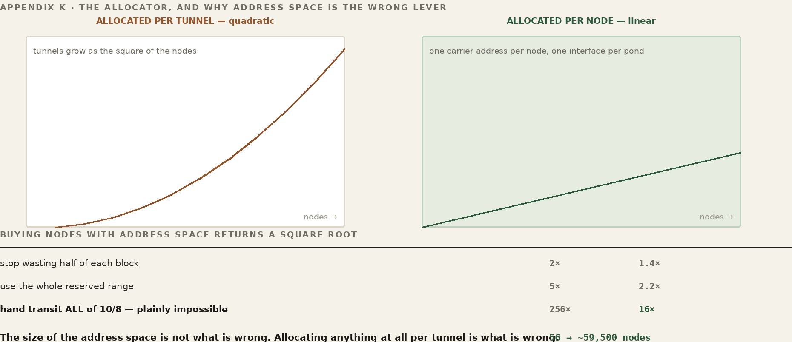
Tunnels in a full mesh grow as the square of the nodes. Addresses therefore buy nodes back at a square root, and a square root is a punishing exchange rate:
stop wasting half of each block 2x tunnels -> 1.4x nodes use the whole reserved range 5x tunnels -> 2.2x nodes hand transit ALL of 10/8 256x tunnels -> 16x nodes
The last line settles it. Giving the carrier space two hundred and fifty-six times more room -- every address the mesh itself lives in, which is plainly impossible -- would buy sixteen times the nodes. The size of the address space is not what is wrong. Allocating anything at all per tunnel is what is wrong. While the scarce resource is spent per tunnel, and tunnels are quadratic, the ceiling stays low however much of the resource there is.
The work in development moves allocation from per tunnel to per node. A node holds one carrier address, not one for every peer it talks to. WireGuard has carried many peers on a single interface since it existed -- routing among them by key rather than by interface -- so the tunnel count stops consuming anything scarce and becomes a number of entries in a table.
today after wg interfaces two per tunnel one per pond UDP ports two per tunnel one per pond carrier addresses eight per tunnel one per node consumption quadratic linear
With nothing scaling by tunnel count, what remains scales by nodes -- and the ceiling becomes the one the addressing plan implies rather than one the broker imposes: 244 x 244, about fifty-nine thousand five hundred nodes. A thousand times the current limit, and not because the space got bigger. Because it stopped being spent quadratically.
There is a design cost, and it is better named than discovered. Many peers on one interface means each peer's permitted address range must be that node's own subnets -- specific, and kept current as subnets move. Today every channel carries 10.0.0.0/8, which is what makes the route reasoning in this book unconditional: any address in ten-space goes down the tunnel, always, with nothing to check. Separate interfaces are what buy that simplicity, and the quadratic is its price. Whether the replacement narrows the ranges everywhere or only at the broker's end, leaving each node's own view untouched, is exactly the question being worked -- and it is a question about correctness, not capacity.
Several numbers in this area look like ceilings and are not. Each belongs to somebody, and it is not the software.
| Number | Whose it is | Note |
|---|---|---|
| Node addressing -- base, step, pond size | the network administrator | an addressing plan, chosen at pond creation. The step defaults to ten, which skips nine of every ten subnets; set it to suit the plan |
| Open files per process | the operator | unlimited. Set it in the unit files and it stops being a number anyone thinks about |
| Tunnels a node may hold | the hardware | as many as can be defined. Values in older source files suggest otherwise and are enforced nowhere -- see below |
| Throughput | the hardware | measured, not derived. The capability probe already reports what each machine can do |
| Chorus subnets | the software | 256 alive at one time; released when a chorus is dissolved |
| Discovery depth | the software | children and grandchildren. Deeper tiers are not walked |
The third row carries a trap. A per-node maximum tunnel count appears in three files -- a default of four in an older daemon, a default of four in the passcode helper, and a value of five thousand written into each node's configuration at install. None of them is enforced anywhere: the daemon that actually runs never reads the value, and the current broker contains no reference to it. They are leftovers and should be deleted rather than repaired. A default of four sitting in a file that looks live would cap a full mesh at five nodes on the day somebody wires it back up.
One limit is ours: about fifty-six nodes in a pond, sixteen if the broker runs more than one, from an allocation algorithm that spends a scarce resource per tunnel when tunnels are quadratic. We believe it is the wrong algorithm. The replacement moves allocation to the node and lifts the ceiling to the addressing plan's own -- roughly fifty-nine thousand five hundred -- and it is being worked now.
Until it lands the guidance is short. A pond of a dozen boxes is nowhere near anything. A pond approaching fifty is approaching the edge and should be planned rather than grown into. And a deployment that needs hundreds of nodes today should not ask for a tunnel between every pair of them: the quadratic is the whole of the problem, and declining to pay it is the one remedy available immediately.
Then the guild could use you.
This appendix is a description of a problem that is open, not a report on one that is closed. Somebody has to decide whether the permitted address ranges narrow everywhere or only at the broker's end; whether a node's carrier address can be shared across its interfaces without the return path becoming ambiguous; what the allocation looks like when it is per node instead of per tunnel, and what has to change in the broker's namespace to match. Those are real decisions with real trade-offs, and the answers are not written down anywhere yet because they have not been settled.
It is also a problem with an unusually good shape for someone arriving new. It is bounded -- one allocator, one namespace builder, and the routes they install. It is measurable -- a topology that fails on the current algorithm and passes on the replacement is an oracle, and Part XIII says a change is not done until you have written one. And it is arithmetic before it is opinion: the numbers above can be checked by anyone who cares to, which means a proposal can be argued on its merits rather than on who made it.
If you read the square-root table and immediately wanted to argue with it, you are the person this is addressed to. Bring the argument.
FOR THE GUILD
Fifty-six nodes. It should be fifty-nine thousand. That is the most legible open problem in the system and it is stated in full above — what the number is made of, why a bigger one is not the fix, and what the replacement would change. Routing people, and anyone who has done distributed coordination without an authority: this is the seam. Note the second half of that, because it is the unusual part. Most people who have worked on distributed systems have done it where something coordinates — a leader, a quorum, a controller. Here every node reaches its own determination from shared state, and the determinations agree because they read the same facts rather than because anyone was told.
Two doors. To talk about it — this book lives in a public repository and its Discussions are open at github.com/FawcettJohnW/FrogNet-Living-Network/discussions; no licence is needed to argue there. To build on it, the licence page is fawcettinnovations.com/license — ask, and if you want to work on something, say so and say which. The questions are optional and the licence does not depend on them.
FrogNet brings networks to life. The guild brings FrogNet to life.
It is born, and it is not finished. It cannot be. I built it from one perspective — mine — and I know some of what I have done will turn out to be wrong. That is not an admission that undermines the release. For something this size, claiming otherwise would. There is a difference between I know it is wrong, so it is not ready and I know some of it must be wrong, so it is ready for more perspectives, and this book is the second one.
I am not afraid of being wrong, and you do not have to take that on faith. Seven subsystems in this tree were replaced wholesale, and the reversals are annotated in the source with the reasoning that caused them rather than quietly deleted — a cache layer shipped and then partly reverted when one part of it turned out to be load-bearing; an entire merge path replaced, with the oracles that asserted the old rule retired by name instead of removed; a scoring term thrown out on the grounds that a benchmark run on a busy box measures the busy and not the box. A contributor reading those learns the thing that actually decides whether it is worth arguing with me: an argument here can change something.
Years ago I helped teach high-school programmers, in one of the most diverse districts in the country. What I told them about why diversity matters to an engineer was not the usual argument. It was this: there are exactly as many perspectives as there are people on the planet, and even identical twins have two. If you let me design your systems alone, you will get something that works extremely well for a burned out old hippy, and for nobody else. That is not a moral failing. It is a property of one point of view, and no amount of care escapes it.
FrogNet has the same problem. I can give it architecture, code, tests, a simulator and the first applications. I cannot give it the perspectives I do not possess.
So: bring the network I never worked on. The radio I never used. The protocol I never encountered. The application I would never think to build. Bring the assumption I got wrong, and bring the topology that turns an oracle red. If a subsystem needs fixing, fix it. If it needs replacing, replace it. If one of my architectural assumptions is wrong, demonstrate that it is wrong — which is the only part of this I would insist on, because a perspective that arrives as an opinion is an argument that goes to whoever is more persistent, and a perspective that arrives as a red oracle going green is a fact.
There is a symmetry in that worth noticing. The simulator subjects the machine to topologies I did not anticipate. The guild subjects the design to perspectives I do not possess. Both are doing the same job: finding the assumptions one person could not see.
What is fixed is the goal and what it forces — transparent and automatic, and therefore deterministic, memory-shaped, continuous, floating, frugal, and honest about failure. Everything else is this implementation, and this implementation is not sacred merely because I wrote it.
I gave FrogNet life. I am not its life.
FOR THE GUILD
If you have read this far, you are the person the whole book was written for. The seams are named section by section throughout — seventeen of them carry a panel like this one — and every one is a place where somebody who is not me can see something I cannot. Pick the one that is yours.
Two doors. To talk about it — this book lives in a public repository and its Discussions are open at github.com/FawcettJohnW/FrogNet-Living-Network/discussions; no licence is needed to argue there. To build on it, the licence page is fawcettinnovations.com/license — ask, and if you want to work on something, say so and say which. The questions are optional and the licence does not depend on them.
Every rule in this book that carries a tag appears verbatim in the source, at the point of the decision it governs — not in a commit message, not in a wiki. This appendix is the list, and it is generated from the source tree when the book is built, because a hand-kept index of this many rules is wrong within a week, and the whole value of it is that it cannot drift.
What that buys is unusual and worth stating plainly. checksite.py carries a MARKERS list and fails the build if a load-bearing rule is removed from the code. So the book and the implementation can be diffed by a script: anything in this appendix and not in the source is a rule the code has lost, and anything in the source and not in this book is a rule nobody has written down. If the two ever disagree, one of them is wrong, and it is discoverable in seconds rather than in the field.
For a specification editor that is the difference between four documents and an archaeology project. The reasoning behind every rule is already written, next to the code it constrains, with the measurement that settled it.
Not generated in this build. No source tree was found, so this appendix would have had to be written by hand — which is the one thing it must never be. Set FROGNET_SRC to a bundle directory and rebuild. An index that quietly falls back to a previous answer is exactly the failure it exists to prevent.
The working vocabulary of the book, in one place. Where a term has a fuller treatment, the part that carries it is named in the definition.
advertise — A role handler's lifecycle method: it publishes this node's capability for a role as a tuple in the shared space — a dual write to the control name the election reads and the floating data name consumers see.
BLDC-1 — Bullfrog Long Distance Communications Protocol — FrogNet's semantic compression. Reduces an exchange to SAME, DIFF, or FULL against a learned template, so only what changed crosses the wire (UnREST Core).
Monitor — FrogNet_monitor — the terminal program every node carries. It writes nothing and owns nothing: it reads FrogNet Memory with the same two calls any application would use, and paints what it finds. Because a screen that paints means proxy, daemon, elected data host and the far side’s sensors are all answering, it doubles as the network’s standing end-to-end test (§41c).
broker — The stateless rendezvous that introduces nodes which cannot find each other and, across the internet, hands out WireGuard tunnels. Reachable by IP from every node; holds no authoritative state (its picture is rebuilt from node polls). It DOES carry the inter-site data path — cross-site traffic transits it — but it holds no endpoint keys, runs none of the semantic stack, and is not itself a member of any FrogNet. The broker host may also run the optional operator console — a supported web management interface on its own port, itself a FrogNet semantic server, with scripted equivalents in /usr/local/bin. That console is a separate listener from the broker service and is not required for enrollment, rendezvous, or tunnels.
capability probe — The script that emits a node's hardware and software facts — cores, memory, encoders, storage — as a JSON blob; each service folds in its own checks before publishing the result as a tuple the election scores (Appendix A).
channel set — An independent transport channel to a peer — its own socket, sequence space, and worker threads. Up to three per peer, so a call and a bulk transfer do not block each other.
chorus — A named subgroup of nodes within a pond.
codec slot — The handler method that compresses and rebuilds an exchange. For a content handler it is BLDC-1; for SotF the same slot manages a live media stream.
daemon — The worker pool behind the proxy that runs the codec and the UnREST handlers, reached over a loopback socket on the node.
databasehost — The single floating database the whole mesh reads and writes, resolved as databasehost.frognet to the most-capable node running a database (memory-bound; highest IP only breaks ties), recomputed on every merge (Part VI).
databasehost_control — A second, deterministic database plane — the highest-.1 node — used only for the mesh’s internal discovery and election bookkeeping, notably as the place the databasehost election reads its candidates. Holds no application data; not something you address or configure.
DIFF — A BLDC-1 verdict: send only the values that changed since last time, against the shared template.
discovery — The bounded walk by which a node learns the mesh over its own HTTP, measuring round-trip time and writing routes and /etc/hosts (Part V).
echo — The endpoint that answers “who are you?” with one CSV line: fully-qualified name and the node's wired and wireless addresses (Appendix B).
election — The deterministic choice of which node holds a service. Each service supplies its own selector — a virtual function — that scores capability tuples: the databasehost picks the most-capable node running a database, a media host picks by locality and capability.
fan-in / fan-out — Many requests sent back-to-back on one socket without waiting (fan-in); their replies returned interleaved and matched home by sequence number (fan-out).
fnid — A node's permanent install-time GUID, kept at /etc/fnid; its true identity, independent of name or address.
FNWP-1 — The FrogNet Wire Protocol: length-prefixed, opcode- and sequence-tagged frames carried on an established socket between node proxies. It carries the SAME/DIFF/FULL verdicts (UnREST Core).
frognet-netstart — The script that configures a node's networking from hardware state at boot and on every eth0 cable event — identity address, SSID projection, DHCP.
FULL — A BLDC-1 verdict: the whole structure, sent when no template fits yet — and learned in the act of sending it.
gateway — A node with a non-FrogNet uplink (a non-10 address) that transits its downstream subtree to the wider world.
GROUP_TOKEN — A node's pond-membership credential, written to /etc/frognet/tunnel.conf when it redeems a passcode from the broker.
HaLow — A 900 MHz (802.11ah) long-range radio, good for roughly two miles, that presents to Linux as ordinary Wi-Fi.
handler — A subclass of the single UnREST interface; it fills virtual slots — codec, election, lifecycle — for a content type or a protocol (Part X).
hostReset — The per-handler lifecycle callback fired whenever the database host is reassigned (boot, merge, or float). The new transient holds none of the handler's context, so hostReset re-establishes whatever tuples the handler needs — capability being the common case; the first such writes cross FULL (Part X).
lifecycle slot — The handler methods (advertise, hostReset) by which a role-bearing handler announces itself and re-establishes its state in the shared space after the database host moves.
lillypad — A node together with everything directly attached to it: its sensors, clients, and platforms.
media host — The elected node that fans a live call’s frames out to every viewer, chosen by measured real-time video-encoding capability (a working ffmpeg + libvpx encoder is required). Role name mediahost.
node — A box running FrogNet; the infrastructure layer. Identified by subnet or GUID, never by hostname.
pond — A whole FrogNet network — the set of nodes that belong together, as tracked by the broker.
proxy — The service that takes over port 80 and intercepts all HTTP, forwarding locally to Apache and MySQL or out over FNWP-1 to a peer.
reference — Each side's cached copy of the last canonical values for an exchange; what a DIFF is computed against and applied to.
SAME — A BLDC-1 verdict: nothing changed, so almost nothing is sent.
scope — FrogNet's nesting levels of reach: Self, Lillypad, Chorus, Pond.
SotF (Song of the Frogs) — The adaptive media protocol built on UnREST: a live video and audio stream with delivery classes and a quality ladder that steps down toward audio and text as the link degrades and climbs back as it recovers (Part X).
SSID projection — A node standing up its own Wi-Fi access point when it has no wired uplink, so clients can join it directly.
template — The learned structure of an exchange — which parts are fixed, which vary, and their types — shared by both ends and learned from the first FULL.
transient database — The old name for FrogNet Memory, and a misleading one — it invites you to picture a database when the thing is memory. A role, not a store: the always-current working memory that floats to the most-capable database node and holds current state, never history.
FrogNet Memory — The network shared memory itself — the architecture api.php implements. Values written by any node and read by any other, addressed by what they are rather than by who holds them. This is where a program puts something when it wants every machine to be able to see it.
UnREST — The programming model over FrogNet Memory: Linda, carried onto a transient network. Processes never address each other. They write values into the shared memory and read them back by pattern, decoupled in time and in identity.
tuple space — The Linda model's term for a shared associative memory of exactly this kind, from David Gelernter and Nicholas Carriero at Yale, 1985, and the direct ancestor of both. FrogNet Memory is a tuple space across a network; UnREST is how a program uses one.
UnREST — FrogNet's “exchange memory, not messages” model and the handler framework that implements it; divided into UnREST Core and UnREST Unleashed.
UnREST Core — The built-in default machinery every exchange uses for free: the object-oriented compression (SAME/DIFF/FULL) and the fanned, interleaved transport (Part IX).
UnREST Unleashed — The extension layer: entirely new protocols built on the same handler interface, such as SotF and the game protocol (Part X).
WireGuard — The encrypted tunnel FrogNet uses to bridge nodes across the internet; its AllowedIPs is always 10.0.0.0/8.